| 東京戦厄高校第72討伐班 2 | |
| 三上康明 | |
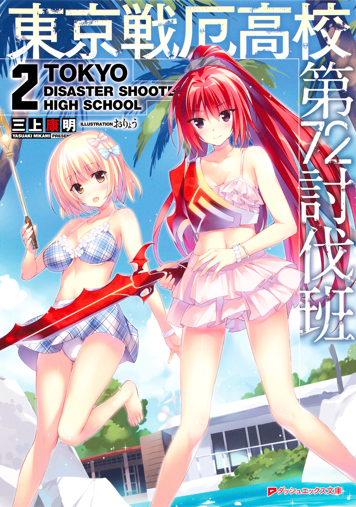
この本は縦書きでレイアウトされています。
また、ご覧になる機種により、表示の差が認められることがあります。
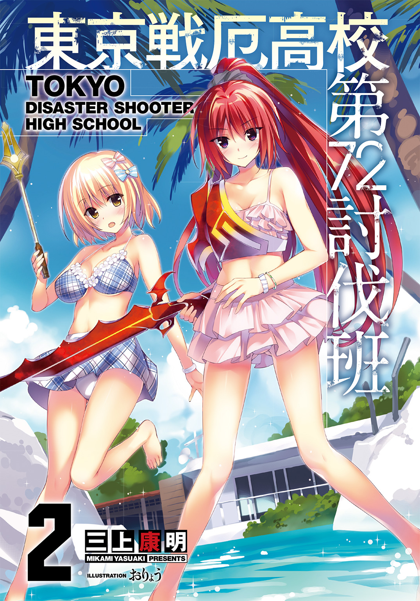
 ダッシュエックス文庫DIGITAL
ダッシュエックス文庫DIGITAL
東京戦厄高校第72討伐班２
三上康明
Ｐｒｏｌｏｇｕｅ
東京戦厄高校の生徒会は、選挙によって選ばれる生徒会三役が頂点だ。
「会長」「副会長」「書記」である。
三役に立候補したものの選挙で敗れ、一定数以上の票を獲得した者が「役員」となる。
現在の役員は九人。
とんでもなく大量にある生徒会の仕事――たとえば行事の統括、たとえば各委員会の監督、たとえば災厄技術庁との調整、たとえば災厄討伐、これらをこなしていくには三役と役員では足りない。
「準役員」の登場である。
準役員は希望制であり、役員との面接で決定される。
準役員は現在二十五人――うち、一年生が十五人だ。
一年生が生徒会に入るには、この準役員しか枠がない。
「次の議題は桜田さんね」
副会長である芙蓉乃愛に促され、二年生の少女――桜田が話を始めた。
生徒会会議室は教室をふたつつなげたサイズの長方形。
よく磨かれた黒の天板が美しい長テーブル。
そのテーブルに着座できるのは役員以上の全十二名。
議長席には生徒会長六条誠一郎、右隣には進行役の乃愛、左隣には書記の向ヶ原棗。
棗は肩書きこそ「書記」だったが、議事録を取っている様子はない。リクライニングのついているイスでゆらゆらしながらオレンジ色の髪の毛先をいじっている。
棗の隣には生徒会シューター・チーム「黄金獅子」のひとりである役員、宮野ユーリがうっすら笑みを浮かべていた。
「......いいよなあ、あの席。僕も早くあそこに座りたい」
会議室の壁際にずらり並ぶ準役員の座席はパイプイスだ。
目を輝かせているのは一年生、輝井。
ふんわりとした金髪は前髪を立てて後ろに流している。
あどけなさを残しながらも明らかに美形とわかるその顔は、「東京校ナンバーワンイケメン」と名高いユーリと並んで一年生の間ではもてはやされている。
が、二年三年にはまったく存在を知られていないので絶賛アピール中である。
「......静かにしていろ」
むすっと答えつつメガネの位置を直したのは輝井の横にいる少年。
彼は廻人と同じクラスであり、クラス委員でもある直角だった。
「――以上です」
桜田が着座すると、本日すべての議題が終わった。
もう外はとっぷりと暗くなっている。お腹が空いた顔をしている生徒も多い。
「議題は以上ね。今回検討事項になったのは、一件だけか。優秀優秀」
にっこりと乃愛が笑うと準役員たちの中には彼女の笑顔に見とれる者もあった。
ユーリがナンバーワンイケメンなら、乃愛はナンバーワン美少女であることを疑う人間はいない。
「本日の進行において質問はあるか」
六条が口を開いた。会議が始まったときからまったく変わらない声音は、なんならこのまま延長戦に突入してもいいとでも言っているようである。
ないよ、ないない......と役員の間に苦笑が流れる。
「あのっ」
そのとき、である。
あるはずのない質問の手――しかも準役員から――が挙がった。
直角は、驚愕する。
輝井が無邪気に手を挙げていた。
「誰だ、君は」
「一年の輝井ですっ！」
役員と準役員の間には大きな溝がある。役員は考え、準役員は手足のように動くのである。手足は物事を考えるわけがないし、ましてや質問もしない。
さらにはそれが一年生であろうものなら――、
「君、場を弁えたまえ」
三年生の役員が不快感もあらわに言う。
「いや。準役員とて会議の参加者だ。質問をする権利はある。......彼は誰の準役員だ？」
「......わ、私です」
先ほど説明を終えた桜田がおずおずと名乗り出た。
六条のたずねた意味は「誰が輝井と面接して準役員にしたのか」ということだ。
役員ひとりあたりの仕事は多く、準役員は手足として必要になるが、一方で準役員がしくじった場合は推薦した役員の責任にもなる。
実は、桜田は輝井のことをよく知らない。ただ可愛らしい一年生が来て「準役員になりたいんですっ！」と言ってきたので「しょうがないなあ、いいよ」とにこにこと受け入れただけなのだ。ここで失言されてはたまったものではない。
ちなみに言うと六条も乃愛も準役員を登用していない。ユーリもだ。
彼らは生徒会チームとしてシューターとしての能力も抜群に高いが、事務処理能力も極めて高い（ただし棗だけは書記の仕事をやらせる準役員を登用していた）。
「あ、あの、生徒会長。私が確かに彼を準役員にしましたが――」
弁明しようとした桜田を六条は手で制する。
「質問の内容を聞こう」
やりとりの意味を理解しているのかいないのか、無邪気な様子で輝井は言う。
「あのっ、一昨日たまたま生徒会データベースを見てたんですよ。そしたら変更されてるところがあって......それは、『災厄を討伐可能な討伐班数』の『分布』についてです。原則としてレベル１ｓｔ以降の災厄討伐は二年生以上に許可されてますよね？ 生徒会チームでもレベル３ｒｄまでじゃないですか。でも――一年生討伐班に、レベル１ｓｔの災厄を討伐可能なチームがひとつ、あった」
ざわめきが広がる。
六条は先ほど桜田にしたように右手を小さく挙げた。
しん、と静まり返る。
「指摘は間違っていない。レベル１ｓｔの災厄を、討伐可能な一年生討伐班は存在する」
ごくり、と輝井がつばを呑むのを直角は見ていた。
学期の変わり目――二学期になる時点で、チームの移動が可能だ。
生徒会の準役員だけで構成されたチームを、輝井は組織しようとしている。
クラスの垣根を越えて直角もスカウトされており、移籍予定だ。
四人編制で、響刻値は「Ａマイナス以上だけ」という――輝井に言わせれば「ドリームチーム」である。
ちなみにチーム名は「シャイン」。「社員」ではなくもちろん「輝く」から来ている。輝井らしいネーミングと言える。
「それって......誰なんですか」
なのに。
ドリームチームができる前に、すでに特別なチームがあるなんて、あってはならない。
「言えない」
「い、言えない？」
「あれは特例中の特例だ。本人たちの立場を考えても今は言わないほうがいいだろう」
そんなにすごいチームなのか――静まった室内に再度ざわめきが広がる。
目を見開いた輝井だったが、その頭の中ではぐるぐるぐると様々な推測が飛び回っているだろうことは直角にも想像がついた。
「せ、せめてヒントを！ どんなチームなんですか!?」
そして会議室内にいたほとんどの生徒は今度こそ目を疑った。
「どんなチームか......だと？」
六条が――あの、生徒会長六条誠一郎が、
「......でたらめなチームだ」
口の端をゆがめて笑ったのだ。
乃愛が、そんな六条の様子がおかしくてたまらないという顔をし、棗は元々不機嫌そうな顔をさらに不機嫌にさせ、ユーリだけは変わらずに不思議な笑みを浮かべていた。
生徒会チームは知っているのだ。その「でたらめなチーム」を。
「あらあら、会長が笑うなんて珍しいわ」
乃愛が言うと会長の顔から笑みが消えた。
数年来一度も笑っていませんよとでもいうような、板についた仏頂面である。
「ふっ――これほど会議の空気が乱れたのは久しぶりだね。この乱れは、そう、平和な王国を突如襲う軍事クーデターみたいだよ」
と、物騒なたとえをユーリは言う。
「彼らはもっと目立つのかと思ったけれど......なかなか、出てこないね。雨の夜、あの、濃密な雨の夜以来目立たない影......」
「ユーリ」
ぎろりと六条がにらんだ。
ユーリが言いかけたのは、災厄「ペルセクチオーネ」を倒した夜の話だ。
ペルセクチオーネを倒したのは廻人たちではないことになっている。
廻人たちは命令違反をいくつも重ねて戦ったから、もしも名誉を得ようとしたならばついでに退学までくっついてきてしまうという事情があった。
「......先ほどのペンディング案件だが、決まったな」
「ん？ 一年生の夏の校外実習で生徒会の誰が引率するかって話？ それは業務量と調整して直前に決定すればいいでしょう」
乃愛が言うと、
「いや、決定だ。乃愛、ユーリ、ふたりで行け」
「えぇーっ」
「おやおや」
明らかに不満そうな乃愛と、笑みを崩さないユーリ。
「決定だ」
これで会議は閉会となった。
会議が行われたのは七月十八日――翌日に一学期の終業式を控えた日。
すなわち夏休みの直前だった。
Ｃｈａｐｔｅｒ Ⅰ
Ⅰ
「おおおおお高っけぇ！」
「揺れる揺れる揺れる揺れるってほんとマジ」
「ヤバくね？ これヤバくね？」
災厄技術庁所有の人員輸送用プロペラ機が離陸して、五分。
すし詰めに乗せられた生徒たちはギャーともワーともつかない喚声を上げまくっていた。
一〇〇人を輸送可能なプロペラ機が八機。半分が生徒で半分が自衛隊員だ。
隊員からすると生徒たちのはしゃぎっぷりは微笑ましいのか、生温かい視線を送る。
彼らが向かうのは、東京新都に所属する星降島。
伊豆七島よりもさらに南に位置し、鎌倉区から輸送ヘリで六時間という距離。
星が降っても降ってもなくならないほど――そんな意味を持つ島である。
星降島で、戦厄高校一年生恒例の夏期校外実習である。
この島は南国リゾートとして知られているけれど、民間航空機が発着できる空港がない。そのため一般人はフェリーでのみアクセス可能で、片道に約一日かかる。
そんなリゾート地へ、航空機で、しかも旅費も宿泊費もすべて学校持ちで行けるというのだから生徒たちのテンションが上がってしまうのも無理はない。
「くう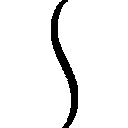。満天の星を見ながら浜辺でふたり、夢とか愛とかささやきあっちゃって、砂浜に置いた手が触れるとびくっとなっちゃったりしてさあ。青春だよなあ！」
「お、おう......」
廻人の右隣にいる兵良はぎゅううと両手を握りしめて感極まっていた。
茶色の髪は口でくわえられるくらいに長く、センターで左右に分けている。
細い目は、笑うとすぐに線になってしまう。
兵良はその名前から「ヘラ」と呼ばれているが、カタカナで表すのがぴったりくる。
いつもヘラっとしているからヘラ。シンプルだ。
「んだよー。ノリ悪いじゃねーか。両手に花の成家くんは余裕なんですかねえ？」
「両手に花？」
「鈍感ヤロー。お前のチーム、女子ふたりだろ？ ほら、どっち狙ってるか正直に吐けよう。高嶺の花の月佳ちゃんか？ 癒やしのアリスちゃんか？」
「あいつらはただのチームメンバーだろ」
廻人が手に持っているスマートフォンの画面には、別機に搭乗している月佳とアリスとメッセージアプリでのやりとりがあった。
『六時間ってちょっと長過ぎよね......』
『無理無理無理無理無理ですぅ 高いところ無理ですぅ』
『ちょっと寝てても大丈夫かな？ 眠くなってきちゃった』
『月佳ちゃぁん どこですかぁ？ アリスから見えるところにいてくださいぃ』
『おやすみぃ』
『月佳ちゃぁん！ 無視とかひどいですぅ！』
『あははは。ごめんね。左見て。三メートルくらい』
『あっ、いたぁ！』
そのメッセージの二分後、
『アリスちゃんが大声上げて飛びついてきたから私まで怒られた......』
『ううぅ、ごめんなさいぃ。でもアリス、高いところ怖いんですぅ』
そんなやりとりが展開していた。
「お、なに見てニヤついてんだよ成家ぇ。見せろ！」
ヘラはどんな生徒にも分け隔てなく話しかけるのだが、中でもなぜか廻人とはウマが合って最近はよく話すようになっていた。
シューター・タイプが「お荷物」と名高い「迅引」である廻人にとって、なんの偏見もなく話しかけてくるヘラみたいな生徒は希有だ。
「くっそぅ、どうして廻人だけ女の子に恵まれてるんだっ」
「お前のとこも半分女子だろ？」
「............ふたりとも彼氏持ちなんだよ」
「そ、そうなのか、悪りぃこと言った」
「見ました？ この上から目線の成家さんを。ねえ、直角さん」
ヘラは逆隣の生徒に話しかける――クラス委員にして生徒会準役員の直角だ。
直角はきまじめな性格から「ちょっかく」とクラスであだ名されていた。
「聞いていなかった」
「おいぃ～。お前もノリ悪いなぁ。校外実習中は生徒会のこととか忘れてパーッと遊ぶ。そう俺と約束したよな？」
「していないけれども......」
「かーっ！ ノリ悪い！」
なんだか様子がおかしいなと廻人は思う。確かに、直角は四角四面できまじめなところはあるけれど、こんなふうに神経質でぴりぴりすることは滅多にない。
「......なあ」
先ほどからちらちら男子生徒を見て考え込んでいた直角は、改まった口調で言う。
「聞いたことはないか？ 一年生内に、とんでもない実力のチームがあるという話」
チームの実力とかそんなもん女の子の魅力の前には無意味だろ？ という顔で白けたヘラとは反対に、廻人は興味を持った。
「生徒会会議で話題になったんだが、生徒会長が認めた凄腕が一年生にいるらしい」
廻人は六条のことを思い返す。
ペルセクチオーネ討伐のとき、すさまじい実力を見せた。
光撃という攻撃特化のシューター・タイプであるにもかかわらず、廻人たちがチームで力を合わせて渡り合っていたペルセクチオーネに対して、彼はひとりで戦ったのだ。
その六条が認めた実力派チーム。
「どんなチームだろ......きっとすげぇんだろうな」
見てみたいと廻人は純粋に思った。
まさか、自分たちのことだとはつゆほどにも思っていない。
「......予想では、やはり会長と同じ光撃を擁するチームではないだろうか」
見当違いの推測をする直角。
「なるほどー、いい読みだなー」
「うむ。そうだろう」
「それなら直角が行こうとしてるチームじゃねーの？ すごい光撃がいるんだろ？」
「輝井か。響刻値は高いが、まだ実力派と言えない。それにまだチームとして結成されていないんだ。二学期からだ」
「あ、そか。他に準役員で『これは』ってヤツいねーの？」
「そうだな......」
ふたりは、どんどん真実から遠ざかっていった。
見渡す限り海の上を飛んでいくが、日は傾いていた。
時間的にはそろそろ――星降島に到着するはずだ。
『はいはーい！ みんな元気ですかー！ 仁科先生はとっても元気でおぶぇげぼごぼぉっ』
機内のスピーカーから聞こえてはいけない音が聞こえた。
うわぁ......とドン引きする男子生徒たち。
廻人の担任でもある仁科は二〇代後半だが未婚どころか彼氏もいないらしい。
それもそのはずだという残念な空気が流れている。
『......あー。仁科先生に代わって説明する』
隣のクラスの男性担任が後を引き取ったがその後ろからは聞こえてはいけない音がいまだに聞こえてきていた。
『今日から行われる四泊五日の校外実習についてだ。五つの課題がお前たちには与えられる。各項目ごと一〇点満点で、最大五〇点になる。知っている者も多いだろうな、これ、毎年恒例だから。生徒たちの間では「星降島の洗礼」とか呼ばれている。課題がなんであるかはあらかじめ教えられることもあるし、教えられないこともある。まあ、なんだ。全力で実習に取り組めばオッケーってことだ』
来た、と廻人は思った。
五〇点満点の課題。
毎年の平均点は二〇～二五点という難易度の高さ。
だけれど高得点を出せば、卒業後の進路にまで有効に働くというメリットもある。
（俺たちが目指すのは......三五点）
二日前、廻人たち第七二災厄討伐班トリニティは生徒会長に呼び出されていた。
――お前たちにはレベル１ｓｔの災厄討伐を許可した。許可を維持したければ、校外実習でチーム平均最低三五点を取ること。達成できなければ討伐許可を無効とする。
一方的に告げられた、ハードル。
――自信がないと自ら申告するのであれば今この場で討伐許可を返上しろ。
月佳の目が見開かれ、廻人と同時に声を上げた。
――自信ならあります。
――自信あるぜ！
――ふえぇ......。
アリスだけは無理無理無理と目で訴えていたけれども。
――そしたら俺、会長の記録も超えますよ。何点取ったんすか、会長。
おもしろくもなさそうに六条は言った。
――五〇点だ。
『えー、説明は以上だ。満点は五〇点。さらにボーナスで一〇点を加算することもできるが、これについては到着後に詳しく説明しよう――そうだ』
思い出した、とばかりに教師は言った。
『今回、成績の超優秀者――いや、優秀チームには学校から特別な報酬があるんだった』
特別な報酬、なんていう素敵な言葉の響きに機内が騒然とする。
『なんと！』
ざわざわっ。
『災厄技術庁の選抜シューター・チームとの合同訓練に参加できるのだー！』
しん......沈黙にも音があることを生徒たちは初めて知った。
『チーム平均点が四五点以上だぞ、お前たち、がんばれ！』
「がんばれじゃねぇ！ 選抜チームと合同訓練とか地獄しか見えねぇ！」
「こういうときはディズ○ーのチケットとかＵ○Ｊのチケットとかそういうんだろ!?」
「四五点とか不可能に決まってんだろ！」
ブーイングがあちこちから湧き上がる。
「......選抜シューター・チーム......」
だけれど、廻人だけは違った。
彼が脳裏に思い浮かべたのは、廻人の故郷、すなわちド田舎。
かつて出現した、災厄。
みんなで戦っても倒せなかった。それを、通りがかったシューターがあっさりと倒した。
廻人が目標としている、憧れている、目指しているあの人。
彼が所属しているのも災厄技術庁直轄のチームだと聞いていた。
選抜チームにいるに違いないと確信に似た思いを持っていた。
四五点を取れれば――あの人に、会える。
「うおおおおおおおおおおおおおおおおやる気マァァァァアアアアアアアアアックス!!」
両手を握って立ち上がった廻人。
「センセー、成家がまたおかしなこと言いだしたわー。こいつ鎌倉に送り返して、俺を月佳ちゃんとアリスちゃんのチームに入れてくださいー」
ヘラがどさくさに紛れてとんでもない要求をしている。
『すぐに課題を始めるぞ――では自衛隊の皆さん、よろしくお願いします』
機内にいる五〇人の自衛隊員が、ひとりずつ立ち上がった。
え？ とわからないままでいる生徒たち。
『最初の課題は――星降島への降下着陸だ。彼らはプロだから安心しなさい』
やってきた隊員がにっこりと笑って廻人の腕をつかむ。搭乗前につけられた廻人のハーネスに、彼のハーネスを取り付ける――けして離れないように。
『さあ、快適な空の旅を！ ......なんつってな』
生徒たちは、気がついた。
最初の課題は――輸送機からのスカイダイビングだと。
Ⅱ
ウイイイイとうなりを上げて機体後部のハッチが開くと、そこは大空だ。ビュウオオオと強風が吹き込んでくる。
突然の、あまりに突然の展開に生徒たちが啞然としている中、
「よっしゃ！ 行こうぜ！」
廻人だけは背後に自衛隊員をくっつけ、大口を開けている機体後部へと歩いていく。
頭にはヘルメット、目元にはゴーグルを装着済みだ。
「ははは。君、怖くないの？」
隊員が言うと、
「ん？ だってこれ、空中降下からの災厄討伐も想定してるんだろ。災厄と戦うこと考えたらパラシュート付きのダイビングなんて安全もいいとこじゃん」
答えを聞いてぽかん、として、それから隊員は表情を引き締めた。
「そうだ。そこまでわかっているのならこちらとしてもうれしい。行くぞ！」
「バッチコー......ぃぃぃぃぃいいいいいいいいいいいいいいいいいいい!?」
廻人を連れて隊員は大空へと飛び出した。
ふたりの姿はあっという間に消える。
呆然と見送った生徒たちだったけれど、直角はすぐに反応した。
「次は俺が行きます！」
これは、課題だ。課題は始まっているのだ。
それだけじゃない。
廻人が――あの、能天気でなにも考えていないようにしか見えない廻人だけが、この課題の真意に気づいた。
災厄討伐。
最前線での戦いでは、災厄を討伐するべくピンポイントの空中降下を行うこともある。
災厄は半径一キロメートル以内に人間がいなければ活動を停止するから、空中からの接近は効果的だ。
「お、おい、直角、頭でも打ったのかよ。お前まで立候補してスカイダイビングとか......」
生徒のひとりが言うと、
「むしろお前たちこそ大丈夫か？ これはもう、課題なんだ。採点方法は知らないが――今のこの状況で誰も行きたがらない、ネガティブなマインド。どう採点される？」
瞬間、生徒たちは気がつく。
課題ひとつにつき一〇点。
採点方法は不明だが、これが課題であることだけは間違いない。
「俺はトップを目指す。先に行かせてもらう」
言葉を残し、直角は隊員とともに大空へと飛び立った。
「お、俺も......俺も行く！」
「はい！ はいはいはいはい！ 次俺で！」
「いや、こっちが！」
急に騒ぎだした生徒。それでも半分はためらう。
そんな中、友人ふたりが消えていった空を眺めて、
「ったくあいつらは......男臭い青春送ってんなぁ......」
苦笑いしながらもすこしだけうらやましそうに言うヘラがいた。
先に空を飛んでいた廻人は、この、大空を漂うという感覚に浸っていた。
両腕両足を大きく開いて落ちていく。
空気の圧力が身体を包む。
「ひゃっほおおおおおおおおおおおおおおおおおおい！」
眼下に広がる太平洋は陽光を映じ、まるで砂金をちりばめたようだ。
その中央にある――島。南に口を開けた三日月のような形の島。
星降島だ。
北側外周は岩礁によって囲まれ、南側に船は接岸する。
島民二千人が住んでいる。
陸上自衛隊星降基地と、災厄技術庁の施設が隣接している。
この島は――特殊な島だった。
「災厄が生まれない島」――と、呼ばれていた。
落ちていく廻人は同じように落ちていく少女に気づいた。
女性隊員とともに降下中の彼女は美しい紅の髪をヘルメットからこぼれさせていた。
月佳だ。
廻人が両手の親指をビッと立ててみせると彼女は肩をすくめた。
そして口を開いた――もちろん、声は聞こえない。
ただひたすら空気をぶち破っていく音だけが聞こえているから。
でも廻人には、彼女がなにを言ったのかがわかった。
耳元でささやかれるよりずっと、はっきりと聞こえたのだ。
――目指すは一位よ！
廻人はうれしさのあまりニヤニヤが止まらない。
この負けず嫌いの少女は絶対にそう言う。
「当然だろ!!」
怒鳴って返したけれど、同じく月佳には届いていない。
だけれど月佳も廻人の言葉を理解したのだろう、小さくうなずいてみせた。
ふたりの眼前には先ほどよりもずっと大きく星降島が迫っていた。
着陸ポイントに設定されている砂浜からは、後続を大きく引き離して真っ先に咲いたパラシュートの花がふたつ、見えた。
最初の課題「パラシュート降下」は「課題への積極性」「作戦に対する従順さ」「突然の環境の変化に対する柔軟性」を見る。生徒につく自衛隊員が採点者だった。
第七二災厄討伐班「トリニティ」、成家廻人と火見沢月佳のふたりは、今回参加三七〇名のうち最も早く星降島に到着した。
ふたりは文句なしの、一〇点を獲得した。
Ⅲ
最初の課題では、真っ先にスカイダイビングに志願した三〇名弱が一〇点を獲得し、その後半数が釣られるように、あるいはイヤイヤではあっても降下したので七点を獲得した。
残りの半分――全体の四分の一はなんとかかんとか降下したものの積極性が低いので五点となり、どうしても降下できない、怖い、と言って降下しなかった者は〇点だった。
「ううぅ......ごめんなさぁい......」
〇点組のひとりであるアリスは半べそだった。
着陸した輸送機からワゴンに揺られてやってきた生徒たち。
目の覚めるようなサファイアブルーの海に歓声を上げていた先行組の生徒たちとは対照的に、しょげ返った顔で砂浜に現れたのである。
「次がんばろーぜ、アリス！」
廻人が元気よく言うと、
「しかし廻人は元気ね......」
さすがに慣れないパラシュート降下に神経を磨り減らしたのか、先ほどから砂浜に座ったきりの月佳が小さくため息をつく。
「だってよ、成績優秀者は災厄技術庁の選抜チームと会えるんだぜ。あの人いるかなぁ」
「あうぅ、すみませんんん......」
よりいっそう小さくなるアリス。
「チーム平均四五点」を目指すのなら、これから先ほとんど失点できなくなる。
「だいじょーぶ！ こっから先は三人でやってくんだろ？ 三人そろえば最強だもんな！」
あっはっはっは――とあっけらかんと笑う廻人に向けられる周囲の視線は冷ややかだ。
他のクラスの生徒は廻人たちの戦い方を知らない。
あの、お荷物で足を引っ張る迅引が、討伐班にいることだけは知っている。
またその迅引が、学年屈指の美少女であり大企業「ホムラ」の令嬢である火見沢月佳と同じチームであることも。
――迅引のくせになにあいつ調子乗ってんだ？
――いいとこ見せたいんだろうな。もし火見沢さんとくっつけたら玉の輿だし。
――スカイダイビングのことも知ってたんじゃねーの。あいつ一番最初に飛んでたし。
軽蔑と、嫉妬の混じった複雑な感情だ。
この校外実習を機会に月佳を自分のチームに引き込みたいと考えている生徒もいるようで、先ほどから視線が送られてきている。が、月佳はそのことごとくを黙殺していた。
「私たちは私たちのベストを尽くして高得点を取る。それでいいじゃない、アリスちゃん」
「は、はいぃ......」
立ち上がった月佳の笑みに、自分を責め続けていたアリスの心がじんわりと温かくなる。
美しい紅の髪が潮風に揺られている。
落ちていく日射しは茜色を含んでいる。
白い砂浜に、打ち寄せる波。
薄く整った唇――。
まるでおとぎ話のお姫様のような美しさにアリスも廻人も一瞬、見とれる。
「？ なに？」
ふたりに怪訝な顔を見せた月佳と、我に返るふたり。
そこへ、
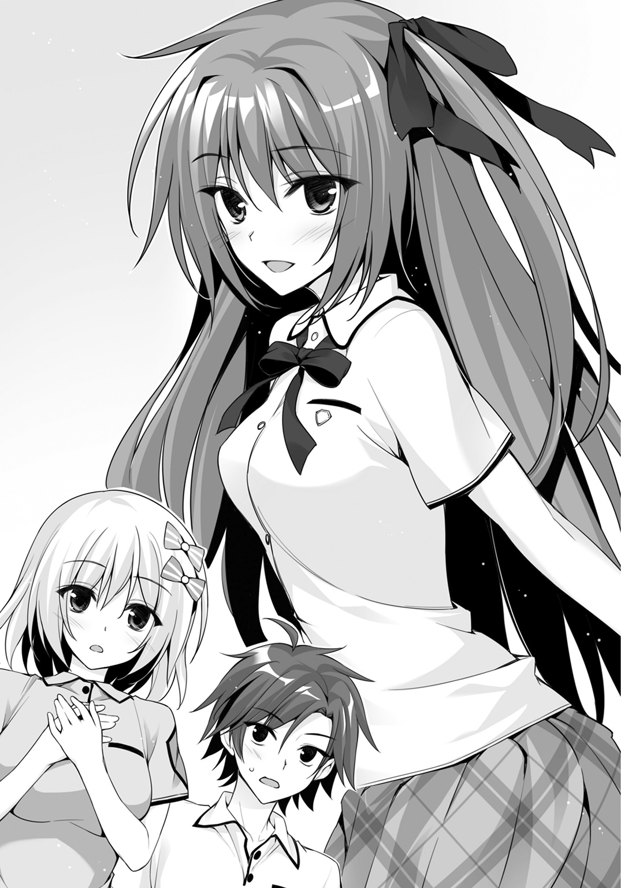
「よーし、全員集まったねー。それじゃここに集合......おぼぉがぼごぼっ」
いまだ飛行機酔いが治まらないのか、両手に持ったバケツに仁科は顔を突っ込んだ。
《さ、さて......全員、そろったから説明するけど......今回の校外実習では課題が出るのはみんな説明受けたよね》
青ざめた顔のまま仁科が拡声器を使って生徒全員に説明を始める。
お前がぶっ倒れてる間に聞いたよ、と苦笑が広がる。
《このフィフティ・チャレンジは災厄討伐班と修復班とで分かれて行うから、修復班の復慈七一名と迅引一名は別途あっちで聞いて》
男性教員が離れた場所で手を振っていた。
該当する生徒が自分の荷物を――大体はスポーツバッグに詰め込んだ着替えとかだが――持ってそちらへ移動していく。
もうひとりの迅引である田村は廻人に小さく手を振るとそちらへと歩いていった。
おもに復慈によって構成される修復班は後方で支援を行うシューター・チームである。
災厄討伐班側に残された迅引一名と復慈三名――詰まるところ廻人とアリスなどは、レアな存在だし、裏を返せば「討伐においてまったく期待されていない」とも言える。
《じゃあ討伐班に説明しまーす。島内では生体響刻武装の使用を二四時間許可します》
え――と生徒たちが硬直する。
この星降島は「災厄が生まれない島」として知られている。
それなのに災厄を討伐するための生体響刻武装の使用を許可するとは――。
《いつ何時課題が始まるかわからないってわけ。まー、これもヒントだからチームでよく話し合うといいよ。ああ、あとこの島の人たちにはお世話になるから、失礼のないようにね》
仁科が指差すと、砂浜の向こう、車道に島民が集まっていた。
半袖に短パンという姿のおじさんたちや、子どもたち、犬の散歩途中に来たという体のおばさんなど様々だ。
彼らはにこやかに手を振った。
廻人がジャンプして両腕を振り回すので、子どもたちが指差して笑っていた。
《はい、ご挨拶はそのくらいにしてねー。成家くんー、笑われてんぞー》
仁科に指摘されて生徒たちも笑った。
《さて、あともうひとつ重要なこと言うよ――この校外実習中に限り、自由にチーム移動を認めます》
彼女はさらりと爆弾を落とした。
意味を理解できても、真意を理解できた一年生はいなかっただろう。
さすがの月佳も眉をひそめた。
《これは前例のないことなんだけど、どうせ文句が出るのはわかってるからあらかじめそうしておこうという意図です。意味がわからん？ そうだろーそうだろー。だけどそのうちわかるよ。それじゃあ最後の説明に移るよ。『ボーナス一〇点』の獲得方法について》
生徒たちの目の色が変わる。
まともに取り組めば五〇点満点だが、「チームメンバー全員にボーナス一〇点」がフィフティ・チャレンジには存在する。
《そろそろ来るはずなんだけど――ああ、来た来た》
砂浜沿いの道路に到着したワゴンから降りてきたふたり――。
「う～ん、いっぱい日焼けしちゃいそう......」
「潮騒が耳元でささやいている――本能を解き放てと。自然に身を委ねよと。すべては夏がもたらす魔力なのだと......ね」
生徒会副会長、芙蓉乃愛。
生徒会役員、宮野ユーリ。
「副会長!? マジで!?」
「キャーッ！ 宮野様!!」
学校内で抜群の知名度を誇るふたりは、一年生からも絶大なる支持を受けていた。
《ボーナス一〇点について説明するぞー。おーい、聞け、聞かんかー》
男子は乃愛に釘付けで、女子はきゃっきゃっとはしゃいでいる。
誰も聞いていない。
「みんな、先生の扱い悪いなぁ。まあ性格も悪いししょうがねーか」
廻人がさらっと一番ひどいことを言ったので、
《あとで覚えてろ成家......》
「ひぃっ」
乃愛が仁科の横にやってくると、
「私が説明しますわ」
と拡声器のマイクを受け取った。
《みなさん、ごきげんよう》
声に反応して一年生たちが歓声を上げる。
あまりにうるさいので廻人の横では涼やかな顔で月佳が耳をふさいでいた。
《さて『ボーナス一〇点』について説明しましょうね。シンプルで簡単なことです》
乃愛の隣のユーリが、ポケットからそれを取り出した。
手に握れるほどの大きさで、円やかな形状。卵――だが、色は白ではない。
なんと言うべきか、虹色だった。いろんな色が混ざり合っていた。
《レインボーエッグ......と呼びますが、実際の卵ではないですよ。ボーナス得点を獲得するにはこのレインボーエッグを奪うことです。成功したそのチームに一〇点をプレゼント》
奪う――生徒会役員二名と、戦う？
《私とユーリ、どちらがこのエッグを所持しているかは秘密ですね。このボーナスチャレンジについて制限は三つ。襲撃はチーム単位で一回限り。最初の攻撃から一分間だけが持ち時間です。襲撃は前もって言う必要はありません。いつでも自由に襲いかかってきてね》
にっこりと言ったけれど、彼女の言葉はひとつのことを示していた。
いつ何時襲われても返り討ちにしてやる――と。
《最後の制限です。襲撃していいのは朝の八時から夕方の六時までで、明日、明後日、明明後日の三日限りです。もちろん生体響刻武装を使ってくださいね》
最後に仁科が引き取った。
《説明は以上だぞー。ちなみに、この『ボーナス一〇点』だが、過去の成功率は大体半々だね。去年は生徒会役員が一年生を全員返り討ちにした。宮野くんがひとりでほとんどの生徒を倒したんだったね》
ユーリはにこやかに仁科に笑顔を向けたが、仁科はイケメン高校生には興味がないのか「うん」と小さくうなずいただけだった。
一方で、聞いていた生徒たちはひそひそと話し合う。
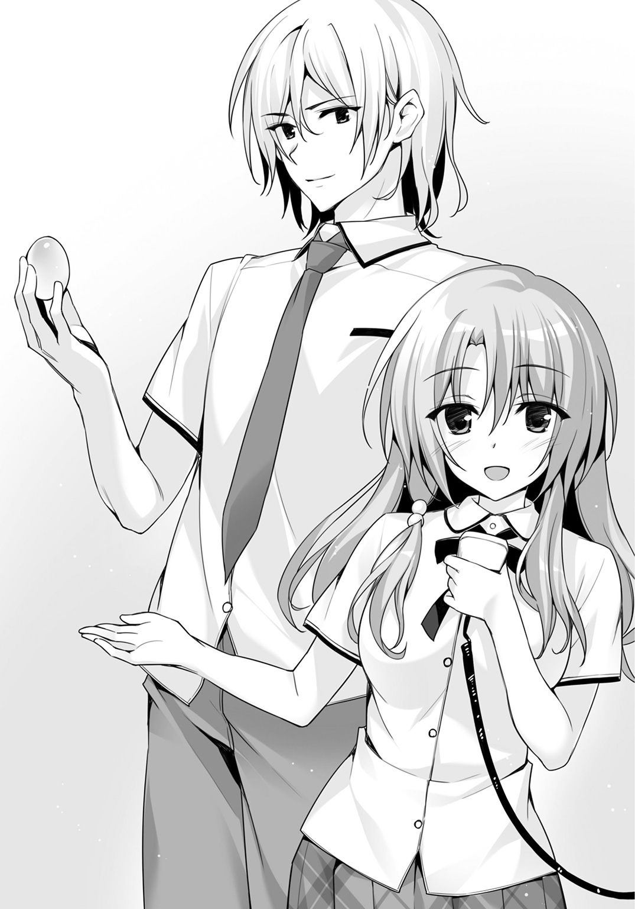
――去年宮野先輩ひとりで勝ったってマジかよ......。
――勝てるわけねーだろこれ。
――何チームかで組むか？
――そしたらどのチームが一〇点取ることになるんだ。
そんな生徒たちの様子を楽しそうに眺めていた乃愛が言った。
《今年は負けちゃうかもしれないわ。だって、会長が期待しているチームがあるんだもの》
言葉に、びくりとしたのは生徒会準役員である輝井や直角だけではなかった。
一年生の大半が反応した。
《期待してるわ――成家くん？》
乃愛は最後に、今日一番大きな爆弾を投下した。
Ⅳ
「おい、成家。副会長の話はどういうことだ」
「この迅引のチームが会議で僕が聞いた討伐班だっていうのか？ まさか......」
話が終わるや詰め寄ってきた直角と輝井。
「どうもこうも......俺もよくわかんねーよ。アイツとしゃべったことほとんどないし」
「『アイツ』とはなんだ『アイツ』とは。『副会長』もしくは『芙蓉先輩』と呼べ」
ムスッとした顔で直角に注意される。やけに思い入れのある言い方だった。
同じくムスッとした顔で腕を組むヘラ。
「そうだぞ成家。俺だって乃愛さんとお近づきになりたいのにィーッ！」
魂の叫びだった。
ヘラの言葉に反応して他の男子生徒たちも「うおお」と声を張り上げる。
気持ち悪そうに女子が離れていく。
やたら男臭い空間ができあがっていた。
「こんなリゾート地に来ても俺たちは課題とやらに振り回されている！ せめて！ 乃愛さんに名前を呼んでいただくくらいしか楽しみはないじゃないか！」
ヘラの抗議に合わせて、またも「うおお」。
「『副会長』もしくは『芙蓉先輩』と呼べェッ！」
よくわからないところで直角がキレた。
「廻人。なにやってんの。早く行こう」
「アリスお腹空いちゃいましたぁ」
すでに生徒たちは宿泊場所へと移動を始めている。
「お、おお......それじゃそういう感じで、行くわ」
「くそぉ！ 俺のチームの女子は誰も呼びにこない！ っていうかすでに彼氏と楽しげに去っていったよバカヤロー！ 乃愛さぁぁぁぁん！」
ヘラが血の涙を流す。
「『副会長』もしくは『芙蓉先輩』と呼べェッ！」
直角はキレていた。
そして輝井は納得できない表情だったが、
「成家くん......今回トップを取り、六条先輩の記録に並ぶのは僕だ。君じゃない」
右手の人差し指を廻人に突きつける。
それは、宣戦布告だった。
「おう。お互いがんばろーぜ！」
ぴりっとした空気にまったく頓着せずに廻人は言うと去っていった。
「あくまでも相手にしないんだね......僕だって最初の課題で一〇点を取ったんだ」
思い込みや勘違いの激しい男だった。
「さっき、なにを話していたんですかぁ？」
合流したところでアリスに聞かれる。
「ん......なんかいっしょに課題がんばろうみたいな感じだった。あいついいヤツだな」
「そうなの？ もっと剣呑な感じに見えたけど......確か生徒会準役員だったはずだし、自分じゃなく廻人が期待されてるとか言われて頭に来たんじゃない？」
「いやいや、今の時代にゃ珍しいカラッとしたいいヤツだぜ」
海岸沿いの道を歩いていた。ガードレールの向こうは一段下がっていて砂浜である。
反対側には民家がぽつりぽつりとあったけれど、ほとんどは草むらだ。
人間の手が入っていない原野である。
街路樹代わりに椰子の木が植えられてある。
夏服なのでブレザー着用はないが、それでも暑い。
東京戦厄高校の夏服は自由度が高かった。男子は半袖のワイシャツにネクタイという、冬服からブレザーを除いただけというパターンか、あるいはポロシャツもある。
そのいずれも左肩には校章である獅子が縫いつけられてあった。
ネクタイが面倒だという廻人はポロシャツ姿だ。
女子の制服は男子と同じようにワイシャツ、ポロシャツに加えてブラウスもあった。ブラウスの場合はリボンタイであり、中央のブローチに校章の紋様が入っている。リボンタイがかわいいからと女子の大半はブラウス派だ。
「ふぅ......」
額の汗をハンカチでぬぐう月佳もブラウス姿だ。
「はぁ、ふぅ......」
息が上がり気味のアリスは廻人と同じ理由――楽なのでポロシャツである。
疲れ気味のふたりとは別に、廻人だけは元気に歩いていた。この暑さは、実家のある田舎で経験してきた暑さよりもずっと快適だった。
「生徒会のふたりを倒せば一〇点もらえるってすごいよな。どう？ 明日いっちゃう？」
「ふぇぇ。コンビニに行くのとは違うんですよぉ」
「でも早い者勝ちなんだろ？」
「六条先輩みたいに強い人だったらどうするんですかぁ」
「おぉ、確かに......」
黄金獅子のチームメンバー全員が六条と同じほど強いとは考えにくいが、ユーリもまた化け物級に強いはずだ。
それに遠炎と弱破という組み合わせのふたりがどういった連係を取るのかもわからない。
そう考えると少し様子を見たい気持ちもある。
でも――焦りもある。他のチームに先を越されたら――。
「うーん......なあ、月佳はどう思う？ ......ん、月佳？」
「え？ あ――ごめん、なに？」
「どうしたんだ。具合悪いのかよ」
「昔この島に来たことがあって......記憶はほとんどないんだけど懐かしい感じがして」
「へえぇ、そうなんですかぁ」
「レインボーエッグの話よね？ 最初は様子見でいいと思う。宮野先輩が去年ひとりでほとんど撃退したっていうなら簡単に負けないだろうし。......ただ」
「ただ？」
「気になるのは、『どっちがエッグを持っているかわからない』ってところ」
「ん？ ふたりとも倒しちゃえばいいだろ？」
「だったら最初からそういう設定にするはずでしょ。このボーナスチャレンジの肝は、たぶんそこにある。ふたりが、バラバラになることがあるのよ、きっと」
「あぁ――」
「なるほどぉ。バラバラになればどちらかひとりを制圧するだけでレインボーエッグを獲得できるってことなんですねぇ」
「頭いいな月佳！ で、どっちが持ってんだ!?」
「知るわけないでしょ......。ふつうに考えたら宮野先輩だけどね。ひとりでも戦えるのは宮野先輩だし。ただ――みんなそう考えるよね」
みんなそう考える。
ならば逆かもしれない――苦労して倒したユーリが、レインボーエッグを持っていない。
それから乃愛を捜しても遅い。最初の攻撃から一分間が制限時間だからだ。
なかなかいやらしい設定だった。
宿泊するのはコテージだった。森をひとつ挟んで男子と女子とで分かれており、四人一組で宿泊できるコテージが点在している。
森の中央にある炊事場に生徒たちは集まっていた。
「せ、先生......これが夕食っすか」
廻人のほおがひくついたのは他でもない。
渡されたのは銀色のビニールパックに詰まったぶにゅんぶにゅんとしたなにかだった。
「そうだよー。災厄技術庁謹製、レトルト携帯食！ 現役シューターたちから『これだけは無理』『食うくらいなら潔く餓死する』と評判の一品」
「見た目だけじゃなくて本当にまずいのかよ！ 救いようがない！」
「応用技術第四課特製プロテイン配合の新バージョンはさらにまずくなったと大評判」
「なんで配合したんだよ!?」
どうすんだこれ、という顔で生徒たちが手にした携帯食を眺めている。
「ってか先生、なんで炊事場に来る必要があったんだ？ これならそのまま食えるんだろ」
封を切った廻人は、中から漂ってくるケミカル臭に眉根を寄せる。
「炊事場に来た方がなんとなく校外実習っぽさがあるかなって」
「それだけかよ......あれ？ これ結構イケるじゃん」
廻人がスプーンを突っ込んでぱくぱく食べ始めると、
「マジで？ 腹減ったし、食うか」
と他の男子生徒数名が食べ始め、
「おえええええええええ」
「ごごごごごご」
全員嘔吐した。軽い地獄絵図である。
「うーん......成家。君のこと鈍感だ鈍感だと思っていたけど、舌もバカだったんだね」
「そ、そうかな？ 結構ショックなんすけど。割と美味い野菜とか食ってきたし」
「バカだと断言できるよ。これは人間の食い物じゃない」
そんなもん支給するんじゃねえよという生徒たちの視線が仁科に突き刺さる。
「不満げな君たちに、特別な許可をあげましょうか。買い出しに行ってきていいよ」
おお、と生徒たちが喜びの声を上げる。
買い出し。なんて楽しげな響きだろう。島国で夜の買い出し。冒険の予感がする。
「ただし外食は禁止。食べ物は買ってきてこの炊事場かコテージで食べること。いい？」
なんだ、それくらいオーケーオーケーと生徒たちはわいわいと歩き出した。
町までは遠いけれど好きな物を食べたいという気持ちである。
そんな生徒たちをにこにこと仁科は見守っていた。
「......先生。なに隠してんすか」
「えぇ～？ なにも隠してないよぉ。やだなぁ、成家ぇ」
「なんかあるだろ。言ってないことが」
「ないよぉ。島にある唯一の食料品店の閉店時間が七時ってことはみんな知ってるだろうしぃ」
「!?」
生徒たちは固まった。
現在の時間、六時四五分。
「あと一五分しかねーじゃねーか！ 走っても片道一〇分は余裕でかかるぞ!?」
「そうだっけ？」
とぼけやがってと廻人は舌打ちした。
生徒たちは一斉に走り出す。
「月佳！ アリス！ 待っててくれ、走って買ってくる。なにか欲しいものあるか!?」
「な、なんでもいいですぅ！ よろしくお願いしまぁす！」
「あ、う......あの」
月佳は言いかけて、声を詰まらせた。廻人をちょいちょいと小さく手招きする。
耳元に口を寄せて、
「チョコレート......溶けると思ってひとつも持ってきてないの......」
ささやいた。
顔を真っ赤にして。
「おう、お安いご用だぜ！ 武装召喚」
青色の光がほとばしり、廻人は生体響刻武装を纏う。
両手に一本ずつ持つのは空色のダガーだ。風をモチーフとしたデザインになっている。
そして足下からくるぶしを包むように発現するブーツ。
迅引らしい、機動力に特化した装備である。
「それじゃあ――」
廻人は身をかがめ、
「――いってくる！」
土をえぐって爆発的なスタートダッシュをかました。
テーブルを飛び越え木の根をまたいで生徒たちをすり抜けていく。
走り出している先頭集団、輝井や直角の横に並んだと思うと一気に追い抜いた。
「くっ！ 負けるか！」
「よせ。走ることで迅引に勝てるわけがないっ」
そんな声もあっという間に後ろへと流れていく。
太陽は山の稜線にほとんど沈んでいる。
茜色をわずかに残した空はすぐにも群青に染まる。
東京戦厄高校一年生、校外実習初日はこうして終わっていく――。
Ⅴ
「まだだよ！ まだ終わってたまるか！」
チームの誰も食料を買えず、携帯食料に手を出して嘔吐するというコンボを決めたヘラだったが、廻人が買ってきたおにぎりをひとつ恵んでもらって大復活を果たした。
廻人はなんとはなしにヘラや直角と同じコテージを選んだけれども、
「そうだ。まだ始まったばかりだ」
なぜか輝井まで同じコテージを選んだ。
男四人、並んで夜道を歩いていく。
向かうのは風呂だ。星降島は天然温泉があちこちにある。
温泉施設の前にやってきたとき、ちょうど反対側からやってくる女子の一団があった。輝井は人気者なのか数人から声をかけられている。
月佳とアリスもいた。
「よう」
「こんばんはぁ」
アリスはにぱっと笑って手を振ったけれど、月佳は頰を染めてつんと横を向いていた。
実はさっき――廻人が商店で食料を購入し誰よりも早く炊事場へ戻ってきたときのこと。
残り二枚しかなかったよ、と廻人がチョコレートの入った袋を月佳に手渡すと、うれしさのあまり月佳が廻人に飛びつくというハプニングがあった。
突然のことにぱちぱちと廻人は目を瞬かせただけだったけれど、目撃した女子たち――買い出しに行かず残ったのは女子ばかりだった――から一斉に冷やかされたのである。
で、我に返った月佳が廻人を突き飛ばした。
「......さ、さっきは、その......ごめん、突き飛ばしたりして............あと、ありがと」
「照れてる月佳ちゃんもかわいいですぅ！」
アリスが月佳に抱きつく。
「お、おう......相変わらずふたりは仲いいな。それじゃーな」
廻人たちは男湯へと入っていった。
大きな露天風呂と洗い場だけというシンプルな施設だった。お湯は濁っておらず、まっさきにお湯をなめた廻人が「しょっぺえ」と唸る。
潮の香りのする温泉――山で育った廻人にはなにもかもが初めての体験だった。
今回の校外実習で多くのものを得られるのではないかと廻人は感じていた。
きっと、予算もものすごくかかっている。ヘリでの移送、自衛隊の協力――。
「......確かに、手がかかり過ぎだよな？」
具体的な金額はわからないが莫大な予算が必要だろう。この校外実習ってそこまでする必要があるのか？ ......それはそれでラッキーってことでいいか――と考え直した。楽天的である。
「――マジあんな車、都心部にも走ってねーって」
温泉に浸かっているヘラがなにかを輝井と直角に力説していた。
「廻人も見ただろ？ あ――お前は見てねーか。さっさと走っていっちまったもんな......」
「なんの話？」
「さっき買い出し行ったべ？ あの帰りに真っ赤なスポーツカーとすれ違ったの。そしたら......運転してる女の人がこっち見てるじゃん？ それはもうじーっと見てるじゃん？ あー、コレ来た。真夏の火遊びの予感来たと思うじゃん？」
「思わねーよ」
「思わん」
「僕も思わないね」
一斉にツッコミ。
「で、俺は彼女に特攻しようと思った。食い物も手に入らなかったがそんなことは気にしない。そうしたら......」
車は去っていったらしい。
「............」
「............」
「............」
オチなしヤマなし意味なしと三拍子そろったいつものヘラの話だった。
「しかし、さっきの食事の話だが――あれはまさにお前のためにあったようなものだな」
直角がヘラに背を向けて廻人に話しかけると輝井がそこに乗ってくる。
「ほんとうだよ。迅引がいたら嫌がらせにもならないじゃないか」
「お？ そっか、それじゃあ全員分買ってくればよかったか」
「......は？」
「や、別にひとりあたりの購入制限とかないもんな。課題でもないし......。それだったら俺がひとりでさっさと買って、みんながだらだら歩いてきていっしょに運んだらよかったかなって。お店が開いてれば買うことはできるんだし」
「それはそうだけど......でもそうしたら、君のアドバンテージがなくなるだろ」
「アドバンテージ？」
廻人がわからないという顔をすると直角が、
「推測だが、食事の調達は課題ではないにせよ、課題につながるんだ。食いっぱぐれた者は明日まで空腹を抱えることになり、体力も十分回復できない」
「いやいやいや、そんなら余計に俺がひとりで先に買い占めて、平等に分配したほうがよかったってことじゃん？ あ、でもチョコレートはダメだぞ」
「どうしてそうなる......というかお前、チョコレートがそんなに好きなのか？」
「え？ う、あ、うん、そうなんだよ、俺チョコが大好きでさ......」
チョコレートの件は月佳から厳重に口止めをされているのでここで漏らしてしまえばたぶん死よりもつらい未来が待っている。
「直角の言うとおりだ。迅引の君が唯一他のシューター・タイプに長じているのは機動力だ。それを課題以外の部分でも使わなければ課題で負けるだろう」
「そーかなー」
「そうに決まっている」
「や、なんか違う気がするんだよな......なんか違和感っていうか......」
廻人は頭の後ろで手を組んで、湯の中にどぼんと沈んだ。
そんな廻人をよそに直角と輝井が話をしている。
「課題の内容は発表されていない。シューターとしての純粋な戦闘力『以外』を求められる課題があってもおかしくはないな」
「そんな課題、文句が出るじゃないか。僕たちはシューターだ。戦う人間だ。だから」
「それだ！」
ざばぁっ、と廻人がいきなり湯の中から上がってきたから輝井がびくりとする。
「なんでチーム移動が可なんだ？」
「おどかさないでくれ......そうだな、ふたりチームのところもあるからじゃないかな？」
すでに、入学した一年生四〇〇名のうち、三〇名が自主退学している。
これは五月、六月と続けて災厄による犠牲者が出たことが大きい。
対応に当たったシューターも災厄に食われた。
こういった事件がニュースで流れると生徒の親が特に心配し、本人の希望を枉げても無理に学校を辞めさせてしまうのだ。
「いや、あの女――じゃなかった、仁科センセーは、『文句が出るに決まってるから』とかなんとか言ってたよな？ ってことは――」
「特定のシューター・タイプに有利な課題があるということか」
直角が後を引き取った。
「......でも、それってどんな課題だい？」
輝井の当然の問いに、首をひねった少年たち。
もちろん仁科や教師陣の考えていることなんて、わかるはずもなかった。
一方、女湯。
広々とした露天風呂にはいくつか島のように岩が配されており、ちゃんと磨かれてあるので背もたれにちょうどいい。
「ふぅ――」
月佳は水面から両手を持ち上げるとぐっと伸びをした。ぽたりぽたりと湯が滴り落ちる。
「よかったですねぇ、月佳ちゃん。廻人くんが買ってきてくれて」
横にやってきたアリスが言ったのはチョコレートのことだろう。
彼女はペパーミントグリーンの手ぬぐいをちょこんと頭に載せていた。
「そ、そうね......あいつが迅引だから助かったわ」
「ぬふ」
「なによそのいやらしい笑い方......」
「素直になれない月佳ちゃんもかわいいです」
「私は素直です」
「ほらぁ」
「ほらじゃありません」
ぷいっと顔を背けた月佳だが、それが「素直じゃない」ことに気づいていない。
「アリスちゃんって......こう、最初はゆるゆるだったのに、一度受け入れたらどんどん突っ込んでくるようになったよね......」
「え、えぇっ!? そうですかぁ？」
「豹変キャラ」
「うぐぅっ。今まで聞いた中で一番キツイツッコミですぅ」
「まったくもう......身体が弱くていたいけだったアリスちゃんはどこにいったのよ......」
「でもでもぉ、スカイダイビングできませんでしたしぃ」
「............」
そのあたりは月佳自身、もやっとするところがある。
なんのためらいもなく「飛ぶ」ことを選んでしまった自分は、一六歳の女子としてどうなのだろうか、と......。
「やっぱり、アリスちゃんみたいな子がふつうなのかな」
「そんなことないですぅ......アリスは小学校のころとか休みがちでしたし。ずっとおうちで本読んでました」
「そうなんだ――どんな本を読んでたの？」
自らも読書家であると密かに思っている月佳は俄然興味をそそられた。
「はいっ。冴えない女の子が王子様たちに告白されるようなお話ですっ」
「............」
逆ハーレムだ。
「アリスちゃんって結構夢見がちだったりする......？」
「ちち違いますぅ！ 自分に魅力がないってことくらい弁えてるつもりですし......」
両腕で自らを抱くようにして目を伏せたアリスだったが、彼女の細い腕からは柔らかな胸がこぼれそうだった。
（自分に魅力がない......？ その胸で？ その胸で!? アリスちゃんに魅力がないっていうなら私はどうなっちゃうのよ!?）
（はぅ......アリスも月佳ちゃんみたいにお肌すべすべで容姿に恵まれたかったですぅ......）
両者は互いにないものねだりをしていることに気づかないまま黙りこくった。
「あ、火見沢さんこんなところにいた！」
とそこへ、ばしゃばしゃとお湯をかき分けて女子が三人やってくる。
「今さ、ウチらの間で話してたんだけど、一年の男子でナンバーワンイケメンは誰かって。それでさー、ここは火見沢さんの意見も聞いておきたいところでしょって」
「なんで私？」
「お金持ち、頭もいい、容姿端麗と三拍子そろった人の意見は世論を左右するしー」
容姿端麗、のところで月佳はそれとなく両腕を組んで胸元を隠した。
「どう？ 火見沢さんが彼氏にしてやってもいいヤツとか！」
「か、彼氏、って......」
「火見沢さんの彼氏なんてウチの学校の男子じゃ務まらないっしょー。もっとこう、セレブな感じじゃないと？ てか今の彼氏はどんな人なの？」
「いないよ！ そんな、彼氏なんて......」
中学校までは女子校だった。高校に入ってからは勉強とトレーニングでかなりの時間が削られているから、自由な時間もほとんどない。
（身近にいた男の人って家族とか親族ばかりだったし......最近よくしゃべる相手は）
月佳の脳裏に廻人の姿がよぎる。
（アレが彼氏？ まさかねぇ......まさか、うん、ない、ないない、アイツはない）
あれこれ考えている月佳を横目に、女子たちは勝手に盛り上がっている。
「やっぱ輝井くんじゃない？ あの甘い顔立ちがたまんないよね」
「それならＦ組の彼のほうがいいじゃん。ほら、野球部の」
「ああ、彼いいよね！ ほんっとさーウチのクラスの不作っぷりったらないよ。他のクラスはひとりかふたりは話題になる男子いるのに」
「ねー。おとなしくてなよっちいのばっかり」
「......おとなしくてなよっちいってことはないと思いますけど......」
ぽつりとアリスが言った。
「いざっていうときに、廻人くんはすっごく頼りになりますし......おとなしくなんか全然ないですし、とっても頼りがいがありますっ」
「あ、あー、うん......そうだね、ごめんごめん千早川さん」
顔にありありと「成家廻人は論外でしょ」「迅引だよ迅引」という感情を浮かべて、一方で一所懸命なアリスをなだめようと彼女たちはよしよしと頭をなでる。
「むう」
自分の意見を軽んじられたことに立腹しているのだろう。
アリスはぷくーっと頰をふくらませているがますます頭をなでられる始末である。
月佳はといえば、驚いていた。
今の会話には誰かを傷つけたりする意図はなかっただろう。無邪気なものだった。
だけれどアリスは、廻人のために怒った。
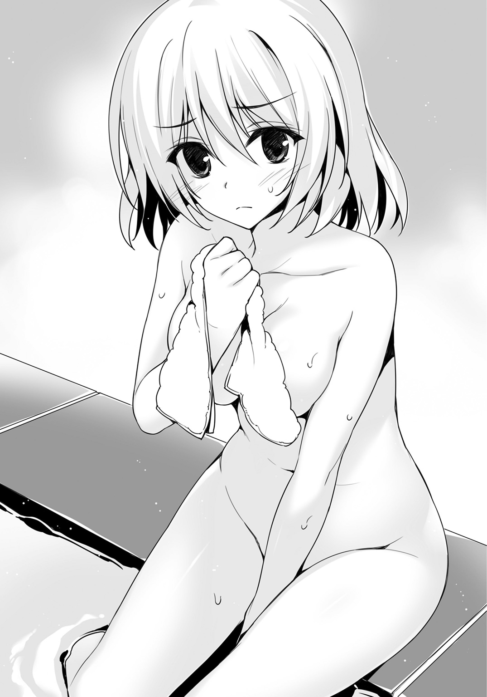
チームメイトのために、怒った。
（いえ......単にチームメイトのため、なの？ それともアリスちゃんって廻人のこと......）
好きなの？
言葉に思い当たったとき、不意に月佳は不安に駆られた。
その感情の理由は月佳にはわからなかった。
Ｃｈａｐｔｅｒ Ⅱ
Ⅰ
「はい。一分経過ね？」
翌朝――午前八時一分。
八時になると同時に乃愛とユーリに勝負を挑んだ生徒たちがいた。
炊事場でハムエッグやトーストを焼いて食べているときだった。
食事中の乃愛とユーリの背後から、一気に距離を詰めて光撃と防闘が襲撃したのだった。
だけれどユーリも乃愛も紙一重で攻撃をかわすと一瞬ののちにはユーリが生体響刻武装を装着、ピンポイントで襲撃者の武装を撃ち抜いた。
ユーリの放つ矢は光撃の斧を、防闘の盾とメイスを破壊した。とてつもない破壊力だ。
生体響刻武装が破損した生徒たちは力が抜けてうずくまる。
その後、何事もなかったように食事を再開するふたりがいた。
「マ、マジかよ......なんだアレ。宮野先輩の攻撃、なんも見えなかった......」
「つうか後ろから攻撃してんだぞ？ どうしてかわせるんだ。副会長もただ者じゃない」
一年生たちがざわつく。
「予想通りの実力ってところね......って廻人、ちゃんと見てた？」
「ん？」
卵三つと大量のハムを焼いて朝からがつがつと食べていた廻人。
「あー、うん、強かったんだろ？」
「それだけじゃなくて」
「たぶん小細工とか通じないよ、あの人たち。会長と同じ感じするもん」
廻人は廻人なりに感じているところがあるようだ。
「でも作戦は考える必要があるわ」
「おう。それは月佳の仕事だよな！」
「............」
「こ、怖ぇー目で見るなよ......ってかちゃんと飯食っといたほうがいいぞ」
アリスは、はもはもとトーストをかじっていたが月佳はほとんど手つかずだった。
「なんでよ」
「おかしいと思わないのか？ あの先生がこんな簡単に飯食わしてくれるわけねーよ」
仁科は迅引科の担当教員だから廻人のほうが彼女をよく知っている。
「ふだん、どんな授業受けてるのよ......」
「ほら。おいでなすったぞ」
廻人が指差したのは、拡声器を手に炊事場へやってきた仁科だった。
《はいはーい。全員注目ー。今からみんなの携帯電話を没収しまーす。代わりにサバイバルキットを配布するからねー》
え、とか、は、とか言う余裕はなかった。教師たちが鉄製のバケツを持って生徒たちの間を歩いていく。そこへ携帯電話を入れろということらしい。
最初は渋っていた生徒たちも、ひとり入れ、ふたり入れしていく。
それにしても「サバイバルキット」とは――なんとも不穏な響きだ。
「お前たちも出せ。〇点はイヤだろ？ 少なくともケータイを差し出せば一点やる」
恫喝気味に廻人たちに言ったのはヤ○ザ......もとい体育教師の杉下だった。
廻人はさっさとバケツに携帯電話を放り込む。
がしょん、と音が鳴った。
代わりに配布されたのは各討伐班にひとつずつの、背負えるタイプのバッグだった。中になにが入っているかはわからないが、そう重くはない。
《はい、全員ぶんそろったねー。隠し持ってたりしてないよねー？ 隠し持ってるヤツがいたら〇点どころか命令違反で停学にするから》
ぎくり、とした生徒が数人立ち上がってあわてて隠していた携帯電話を差し出す。
《よしよし、素直な生徒は好きだよ。さて、それじゃー朝から課題行ってみようか。今日は......『自由行動』にしまぁす！》
は？ という顔の生徒たち。
《海で遊んでも観光してもダラダラしても構わない。ただし島から出ちゃダメ。自衛隊基地や民家の敷地も立ち入り禁止。商店はオッケーだから安心して。君たちは今日、自由だ！》
おおおおおおおおおお！
生徒たちがヒャッホーと叫びだした。歓喜の声がこだまする。
だけれど廻人だけは違った。
「月佳、早く食べ終えろ。皿は......戻してる余裕なさそうだな。置いておこう」
「どうしたんですか？ はっ、そうかっ、廻人くんは早く遊びに行きたいんですね」
「ちげーよ!?」
「廻人の言うとおりよ、アリスちゃん。見て――あのふたり」
月佳が示したのは生徒会からやってきたユーリと乃愛だ。
ふたりは食事を終え、なぜかストレッチをしている。
これからなにかが始まるかのように。
《みんな喜んでくれてなによりだよー。ところでみんな『鬼ごっこ』は知ってるよね？ 知らない人はー、いないね？ それじゃあ説明はしないよ。今日の鬼はこちら！》
仁科に促されユーリと乃愛がゆっくりと手を挙げる。
《手でタッチされたら、タッチされたほうも鬼だよー。ちゃんと誰が誰にタッチしたかはカウントしているからね。鬼になったら赤いハチマキつけてもらいまーす。赤鬼でーす》
「せ、先生、どういうことですか......？」
なにがなんだかわからないという顔で生徒のひとりが聞くと、
《だから、今日の課題は『鬼ごっこ』だよ！ 最初の鬼は生徒会から来たふたり。逃げ切れるなら海で遊んでも観光してもなにしてもいいよ》
課題――。
ようやく、なにかが始まりだしたと気がついた生徒たちの顔に緊張が走る。
《制限時間は明日の正午まで。逃げ切ったら一〇点、鬼になってもタッチした数が多い人から上位三〇人には八点あげちゃう！ 誰かひとりにでもタッチできれば六点から三点の間で調整して加点する。ただ鬼になっただけで誰にもタッチできなければ一点だけ》
携帯電話と引き替えに配られたサバイバルキット。二八時間逃げ回る鬼ごっこ。
最初の鬼は、生徒会役員の二名。
単純な内容。だけれど理解するには――あまりに唐突だった。
《それじゃぁ、始め！》
楽しそうに仁科が言った瞬間だった。
「武装召喚」
ユーリが声を放った。
彼が生体響刻武装――翡翠のような鮮やかなグリーンのコンパウンドボウを手にしてもなお、なにが起きたのかわかっていない生徒が多かった。
「はぁい、タッチ」
「......え？ え？ なんですか、副会長――」
乃愛は手近な生徒たちを手当たり次第タッチしていく。
勘のいい生徒のうち逃げ出している者もあった。
始まったのだ。
鬼ごっこが。
「――狙った人は逃さないんだ。恋でも、戦いでもね――」
ユーリが言った直後、五本の矢が空を切り裂き、逃げる五人に襲いかかる。
「ぐげっ!?」
「ぐお」
「きゃああああっ!?」
制服には生体響刻武装による攻撃を反発する機能があるため、矢は突き刺さらない。
だけれど衝撃がゼロになるわけではなく、高速で飛来する矢が身体に触れるや思いっきりぶん殴られたような衝撃が走る。
倒れる生徒たちへと乃愛が走っていって背中をタッチする。
「うわあああああああ!?」
その事態に至るまで、およそ一〇秒。
すでに二〇を超える生徒が鬼へと変わっていた。
恐慌状態に陥った生徒たちは食事もそこそこに走り出した――。
「は、始まってるのかよ!?」
「遊べるんじゃ!? 遊べるんじゃないの!?」
「逃げろ！ 急げッ!!」
土地勘もない島内だ。
ユーリと乃愛に反撃を試みた生徒もあったけれど一瞬で返り討ちに遭った。
「うんうん。やっぱり校外実習はこうじゃなきゃねぇ」
にこにこと仁科はうなずいた。
夏の校外実習後には実に三〇を超える生徒が自主退学を決意するという。
地獄の校外実習が、本格的に始まったのだ。
Ⅱ
「よし、もう大丈夫だな」
仁科が「始め」を言うと同時にトリニティは広場を脱出していた。
その後、響いてきた叫び声を聞くに、判断は正しかったと言えるだろう。
廻人たちのように異変を察知して――あるいは先輩から「とんでもない課題がある」と聞いていたので――逃げた生徒は全体の一割程度だろう。
同じ方向に逃げたチームは、輝井たちのチーム五人だった。
炊事場の森を抜けて島を東西に走る都道に出る。
正面、都道の下には砂浜と海が広がっているがここで遊ぶ余裕はおそらくない。
「君たちはどこに行くんだ？」
「んー。とりあえず山に行くよ。そっちは？」
「僕らは先に町へ行く。昼食を確保しておきたい。全力で走れば大丈夫だろう」
「そっか――そんじゃな。直角も、がんばれよ」
「......ああ」
直角は、チーム移動可能と聞いてすぐに輝井の討伐班へと入っていた。
戦力が欠ける元の班からは相当恨み節を言われたらしいが、それでも「勝ち」に行った。
「じゃ、私たちも行きましょう」
かなりの速度で走っていく輝井たちを見送った廻人に、月佳が告げる。
都道を東へと進む。照りつける日射しで、午前中であるというのにすでに暑い。
星降島の北側はずっと山がちになっており崖が続く。
南には砂浜があり東西に走る都道が幹線道路となっている。
西端に港や商店のある町がある。夏祭りが近いのか、あちこちに提灯飾りなんかが出ている。自衛隊基地や災厄技術庁の施設もそこだ。
宿泊施設はちょうど島の真ん中から西寄りにある。
つまり、東にはなにもない――森や、ペンションがちらほらあるきりである。
「東に行くべき」と言ったのは月佳だ。
最初の乃愛たちの襲撃で大量に鬼になった生徒は、おそらくたいした能力はない。真っ先にやられてしまう程度の緊張感で臨んでいるのだから。
そうなれば乃愛は、彼らを使って森の捜索はしない、と読んだ。
次になすべきは「使える鬼」を手に入れること。
乃愛とユーリは「町」に向かうはずだ。
持久戦に備えて食料を確保するのは順当だし、実際に輝井たちもそう考えた。
乃愛やユーリが来ても逃げ切れると輝井は考えたようだが――ほんとうにそうだろうか。
（おそらく、町で最初の激戦がある）
月佳の推測は、的中する。
「え......どうして、ここに」
買ったばかりのパンの入った袋を取り落とした生徒。
額には汗が浮かんでおり、肩で息をしている。
全力で走ってきた。町で唯一の商店まで。
食料を買い込んで山に逃げる。
山で一夜を明かして明日の正午まで逃げ切れば、一〇点獲得。楽勝！
とは、いかなかったのだ。
彼の鼻先に突きつけられていたのは翡翠色の矢。
コンパウンドボウを引き絞ったユーリ。
その横にはにこにことした乃愛。
ふたりとも汗ひとつかいていない。
落ち着いていれば、災厄技術庁所有のＳＵＶが停まっているのが見えたろう。
鬼が自動車を使わない、とは仁科も言わなかったのだ。
「逃げろ！」
同様に店内にいた輝井は叫びながら店舗の奥へと走った。
「あらあらまあまあ。裏口はここをまっすぐ行ったところよ」
店番の女性は慣れっこで、輝井たちに道を示す。
二〇人ほどの生徒は狭い通路に殺到して裏口から外へと飛び出していく。
一方で店の入り口に呆然と突っ立っていた生徒は乃愛にタッチされ、
「はい、あなたもこれで『鬼』ね？」
と言われ、我に返る。
「うおぉー！」
鬼となった彼はきびすを返し猛然と走り出す。通路で転んだ生徒たちにタッチする。
表通り。
開幕早々ユーリたちにタッチされた生徒たちが、息を切らして走ってくるところだった。
乃愛が振り返って彼らに声をかける。
「みんな！ ここが最初の戦いよ。走って疲れたでしょう。突然始まった課題が理不尽だと怒っている人もいるでしょう。でもね――災厄が襲ってくるのはいつだって突然なの」
鬼の証である赤いハチマキをつけた四〇人ほどの生徒たちは、ハッとする。
「これは課題であり、訓練でもあります。みんなは最初に失敗した。でもね、今は幸い訓練。挽回できる。みんなには――私と、宮野くんがついています！」
「僕についておいで、ひな鳥たちよ！ この翡翠の矢が撃ち抜いた者を、僕たちの仲間に引き込むのは君たちの仕事だよ！」
ユーリが倒すから、タッチのカウントを増やしてもいい――心強い申し出に、疲れていた生徒たちの目に光が戻る。
おおおおっ、と生徒たちが叫ぶ。「武装召喚」の声とともに生体響刻武装を身につける生徒たち。そして、歩けば一〇分程度で横切れる商店街へと散らばっていく。
「輝井！ 前から四人！」
「右からは三人組が二セット」
「正面突破だ！」
輝井の討伐班は五人とも健在だった。もともとは四人チームだったところへ、直角が入って五人。チーム構成上限いっぱいである。
「武装召喚！」
光撃の輝井。遠炎の直角。
それに防闘、停鈍、弱破とそろっている。三人は全員女子だがタイプのバランスはいい。
自然とリーダーになった輝井が指示を出すと、メンバーが手足のように動く。
正面の四人は遠炎、遠炎、防闘、調善という組み合わせ。
「近づけば勝てる！ カナ、頼む！」
「あいよっ」
敵の遠炎に向かって飛来したのは停鈍のムチだ。伸縮自在で、最大二〇メートルまでは伸びる。
ムチが遠炎に届こうとしたところで敵防闘が入り込む。彼の長槍にムチは絡みつく。
「あっ」
ぐい、と防闘に引き寄せられて停鈍の身体が一瞬浮く。
「行かせない！ リノ、食料を頼む！」
輝井が買い込んだ食料を足下に置いて、両腕で停鈍を受け止める。綱引き状態。
その間にも敵の遠炎二名が矢を放つ。
「私の後ろに！」
カイトシールドを持った仲間の防闘が輝井たちを守る。ガンガンガンッと鈍い音を立てて矢が盾に弾き返される。
直角は横に走った。彼の武器はクロスボウだ。右腕に籠手のように固定される。他の遠炎――和弓タイプやコンパウンドボウタイプに比べれば威力は劣るが連射に優れている。
「防闘が停鈍を受け止めるとは――浅はかだぞ」
走りざま一五本の矢を連射する。
一本が敵調善のスカートに引っかかり、彼女は引きずられるように横倒しになる。
遠炎のひとりは防闘の陰に入ったが、もうひとりは三発をまともに食らって吹っ飛んだ。
「崩れた！ 行け！」
「てえええええいッ！」
味方の防闘がカイトシールドを構え突進、真正面から激突する。
直角の攻撃で体勢が崩れていた敵防闘は、容易に弾き飛ばされた。
「くっ」
残った敵遠炎がコンパウンドボウを引き絞る。
「遅いっ！」
そこにはすでに輝井が迫っていた。
「ケガしたくなかったら全力で防御してくれよ――」
輝井が持っていたのは両刃の大剣だ。
彼の髪の色をそのまま映したように金色に輝いている。
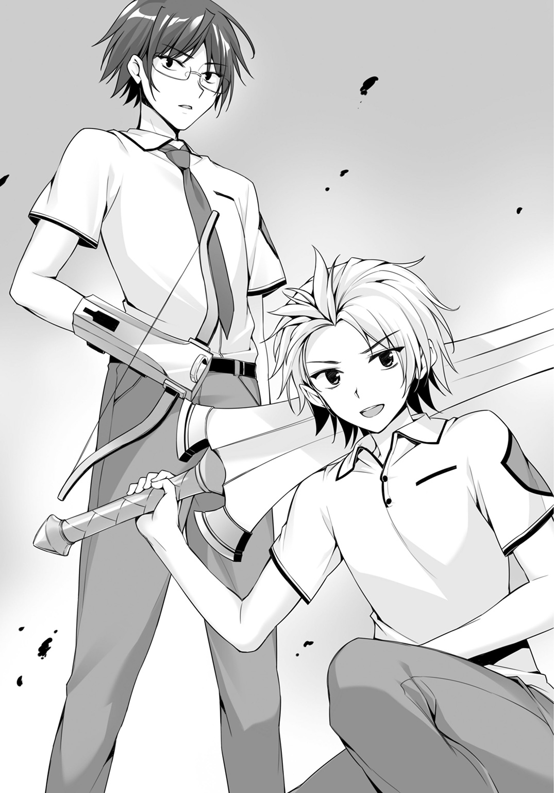
太陽の下、光の柱のようなその武器は、コンパウンドボウで受けようとした生徒をそのまま吹き飛ばす。
コンパウンドボウは半分で折れ、彼は「くの字」になって数メートル飛んだ。
「響刻値」は生体響刻武装の性能に直結する。
輝井がＡプラスであり、直角はＡだ。
いまだドリームチームは完成していないものの「シャイン」はすでに学年屈指の高レベルチームである。
「走れ！」
輝井の号令とともにチームは走り抜けていく。
これで町を抜ければ、北側の山へとつながる道路に出られる――はずだった。
「後ろッ！」
直角が叫んだが、間に合わなかった。
背後から飛来した翡翠色の閃光は、停鈍のスカートへ引っかかるやぐるぐるぐるんとフィギュアスケートのスピンもかくやというほどに彼女を回転させる。
「カナっ！」
彼女のもとに駈け寄ろうとした防闘は、正面――立っていたユーリに驚愕の視線を向ける。
ユーリは確かに、彼女たちの正面に立っていた。
だけれど距離が一〇〇メートルはある。
その距離を射貫いたというのか――。
「来るぞ！」
輝井が叫ぶや防闘はカイトシールドを構える。
だが、予想もしなかったことが起きた。
ユーリが放った二射目は、カイトシールドに直撃し――貫いた。
三射、四射。
ザンッ、ザンッ、と矢が突き抜けていく。
三カ所に穴を開けられたシールドは、真ん中からぱかりと割れてしまった。
「あ、あ、あ......」
自らを守るシールドがいともたやすく破られたという衝撃。
そして武装の破損からくる極度の疲労に彼女はその場にくずおれる。
「くっ――」
輝井が身を翻したが、遅かった。
ユーリは次の矢を放った――輝井へと向けて。
とっさのことに輝井は、幅広の刀身でこれを受けようとする。
「解除しろォッ!!」
直角の叫びに輝井の身体が自然と動く。
「武装解陣」
フッ、と大剣がかき消える。
だがそのせいでユーリの矢は、輝井の左肩にめり込んだ。
左肩から真後ろへ突き飛ばされるように、輝井は身体を斜めにして宙を一回転して地面に叩きつけられる。
「輝井ィッ!! 立てるな!? 逃げるぞ!!」
「ぐ......」
輝井に手を貸す直前、直角はクロスボウの矢を放つ――ほぼ真上に向けて、一五本。
それを見たユーリは我先にと飛び出そうとする生徒たちを制止する。
「待ちたまえ――死の雨が降るよ」
時間差で降り注ぐ一五本の矢は、どこに落ちるか予想できない。
ユーリとてかわしきるまでは次の矢を撃つ手を止めざるを得ない。
アスファルトに、雨のように降ってきた直角の矢が突き刺さったとき――傷ついた輝井たちのチームは逃げ出したあとだった。
「ふうむ......あの準役員。ひな鳥はもう、卒業かな？」
楽しそうにユーリは言った。
午前中に勃発したこの町なかの戦いで、鬼の数は実に八〇名を超えた。
中には自ら降参を申し出て、追う立場に鞍替えする者もあった。
逃亡中の生徒は、約二一〇名。
生徒たちのほとんどは北側――森林、山岳地帯に逃げ込んでいた。
Ⅲ
「はぁ......なるほどね」
月佳はひとり、ため息とともにぼやいた。
「よくよく考えれば用意周到だったってことよね。『携帯電話を取り上げた』のは生徒同士に情報交換をさせないため。鬼側にスパイがいれば簡単に逃げ切ることができる。それに『制限時間が明日の正午まで』っていうのもくせ者。追っ手の不安と戦いながら夜を越さなきゃいけない。観光データはともかく島内の等高線や湧き水の位置なんて調べてるわけもない。災厄討伐作戦が不測の事態で大幅に変更されたときの対応力を見たいってこと？ それに、鬼ごっこだけじゃない。隠れた課題も含まれているかもしれない......」
精神力を鍛え、なおかつ現場力も磨く。
そんな意図が見え隠れしていた。
考えれば考えるほど、意地の悪さや厳しさが伝わってくる課題だ。
「うはははは！ すっげーなー、海の色、こんなの見たことない！ あ、そういや俺、海っつっても鎌倉以外見たことなかったわ――」
「ふぇぇ、カニさんがいますぅ――」
「――それなのに、なんなのようちのチームはっ!?」
月佳が叫ぶ。廻人とアリスは靴を脱いで波打ち際で遊んでいるのだから。
「え？ 月佳も遊びたいって？」
「言ってない！」
「月佳ちゃん！ カニさんです！ こんな色のカニさん見たことないですぅ！」
「捨てなさい！」
先ほどから何度かこの課題の難しさについて説明をした月佳だったが、「まーた月佳がなんか言ってる」「ふぇぇ、大変ですぅ」という反応が返ってくるだけだった。
このふたりは図太いのだと今さらながらに月佳は感じた。
Ⅳ
午後四時を回ったところだった。
「鬼ごっこ」参加の二九八名のうち、鬼はすでに一八〇名を超えていた。
星降島にある数少ないレストランのひとつに乃愛と仁科がいた。
仁科は昼から生ビールを飲み、わさびではなく洋辛子をつけた刺身を肴にしていた。
「これじゃあ今日中に全員『鬼』になっちゃうかなー？」
手元のタブレットＰＣには刻々と「鬼ごっこ」に関する情報が送られてきている。
乃愛はティーカップを持ち上げると上品に口をつけた。
「それはないでしょう。まだシャインは残っていますし、それにトリニティも」
「成家くんのところぉ？ へー、生徒会がやたらと期待しているねぇ」
「先生こそ期待しているのでしょう？ だから、本来光撃の教師であるあなたが迅引科を引き受けた......。六条くんは仁科先生に教わりたかったと言っていました」
「わたしゃヒマなところがよかっただけよぉ」
洋辛子をたっぷりつけた白身魚を仁科はぱくりと食べる。
「てっきり成家くんを六条くんの対抗馬に仕立て上げるつもりなのかと」
「あははは。迅引が光撃にかなうわけないじゃあないかね」
「うふふふ。ふつうならそう考えますよね。ふつうなら」
「あはははははははははは」
「うふふふふふふふふふふ」
不気味な笑い声が店内に響いた――ときだ。
からんからん。乾いたベルの音とともにひとりの女性が店内へと入る。
乃愛も仁科もその女性を認めるや、目を見開いた。
島の住民だとは考えにくい、光沢のあるブランドもののシャツとパンツに身を固めた女性だった。
彼女も同様に乃愛と仁科に気がつく。そしてにっこりと微笑んだ。
「き、来ましたぁ......！」
「黙って、アリスちゃん」
ぎゅうとアリスを背後から抱きしめる月佳は、太い木の幹を背にしてしゃがみ込んだ。
丈の高い草が周囲に生えている。これでふたりの姿は遠目からは見えづらいはずだ。
――なにか聞こえなかったか？
――そうかあ？ 気のせいじゃ――。
――きゃああああ!?
――なんだ、敵襲――うお!?
廻人がひとり、迎撃していた。
迅引は光撃や遠炎に比べれば攻撃力に劣るが、ここは森の中だ。
適材適所、水を得た魚、鬼に金棒――まさに森は超有利な場所である。
田舎育ち一五年。踏破した山は数知れず。山中で過ごした夜は幾百。中学卒業を記念して木の上に作った秘密基地は最終的に２ＬＤＫという間取りに落ち着き、今でも後輩たちが根城にしていると聞いている。
隠れる場所、どこが死角になり、どう罠を張ればいいのか。
廻人は熟知しているのである。
「いっちょあがり、っと」
五分後、八人の鬼は廻人の襲撃を受けてちりぢりになり、三人が昏倒していた。
「終わった？」
戻ってきた廻人に――森の中、廻人はまったく迷うことなくふたりのところにやってきた――月佳が問いかける。
「おう。でも数人逃がしちまった。あれは仲間を呼びに行ったって感じだな。向こうはこっちにタッチするだけでいいんだから不公平だよなー」
「こ、殺しちゃったんですかぁ......？」
「殺してねーよ!? なにマジで怯えてんの!?」
廻人たちは都道に留まり続けるのはさすがに不用心だと考え、食糧確保の意味合いもあって森に足を踏み入れた。
最初は小川に沿って北上し、食べられる野草や茸、木の実を廻人が集めた。
喉が渇いた――と月佳が言ったので小川に戻ったところで他の生徒を発見したのだ。
「これから暗くなるから、落ち着いたところでキャンプを張るべきだな。向こうも暗くなったらほとんど探索できないと思うけど」
「......それはそのとおりなんだけど、なんだかそれだけで終わらない気がする」
「怖いこと言うなよ」
「明るいうちに食事もしておきましょう。煙でこちらの場所が知れたとしても、明るいほうが逃げやすいし」
「うーん......でも夜の森ってマジで危ないぜ？ 探索しにくるかなぁ」
山の申し子が言うのであれば確かに危ないのだろう。
「それでも、今のうちに食事はしておきたい。時間があるうちに」
「ん......わかった。俺も腹減ったし」
さらに森を奥に進むと上りになった。
北側の山に向かっているからだろう。
小川からそう遠くない場所に開けた土地を見つけ、廻人たちはキャンプ地とした。
配布されていたサバイバルキットの中身はおよそこんなところだった。
三角巾、包帯、痛み止め（錠剤）、ペンシルガン、発煙筒、飯ごう、フォーク、塩、ライター、サバイバルナイフ、水質検査キット、水筒、寝袋。
「これって......大規模の討伐戦で前線に送り込まれたときに持たされるようなヤツよね」
「そうですねぇ。携帯食料とかも入ってればまさに......」
廻人が水を汲みに行っている間、月佳とアリスはキャンプ地に腰を落ち着けていた。
アリスはもちろん、基礎体力のある月佳も疲労が溜まっていた。慣れない土地で朝から歩き通しだ。しかも森では道も整備されていない。
「アリスちゃん、平気？ 疲れてない？」
「はぃ。でも月佳ちゃんも廻人くんもがんばってるですから、アリスだけ弱音を吐いたりはできませんっ」
ぎゅっ、と両手を握ってみせたアリスがあまりにも健気で、思わず月佳は抱きしめてしまいそうになった。
それを思いとどまったのは――聞こえたからだ。
斜面を、もつれるように下る足音を。
ひとりじゃない。
「!!」
立ち上がった月佳が見たのは――。
Ⅴ
うっすらと暗くなり始めた。
いくら夏で日が長いとはいえ、森の中は暗い。
水質検査キットで小川の水が飲用可能だとわかったので廻人は飯ごうと水筒に水を汲む。両手ですくって顔をバシャバシャバシャと洗ってそのまま口をつけて水を飲む。
「ぷはーっ、うめぇ！」
もとは湧き水なのだろう小川の水は、冷たく、清涼感があった。
急いでキャンプ地へと戻ると――月佳やアリス以外の気配があった。
警戒して近づく廻人だったが、そこにいた人物が誰なのかすぐにわかった。
「直角じゃん！ それに輝井」
しかし様子がおかしい。制服はあちこちほつれているし、顔も身体も泥だらけだ。
特に輝井の疲労がひどい。ぜえぜえと荒い息をついて木に背をもたせかけている。
「すまない、成家。水をもらえるか」
「あ、ああ」
水筒を直角に渡す。直角は自分もすこし飲んでから輝井に渡してやった。
それから廻人は小川とこことを二往復して水を持ってきた。
日が沈んでいく。廻人は集めた枝を使って火をおこした。
輝井の左肩は痣になっており、紫色に変色していた。ユーリに撃たれた箇所だ。
月佳の推測通り午前中に街中で激戦があった。
その後、シャインは――。
「五人で山へと走った。だけど追いつかれて五回くらい戦ったかな。輝井はケガがひどくて動きが鈍くなっていてな......これ以上は無理だと判断し、次からは逃げようと提案した」
するとシャインの女子メンバーが言った。
――直角、アンタが囮になってよ。
輝井が止めた。
「ひとりを犠牲にして他のメンバーが生き残るなんていうのはゲスだ......僕はそう思った。だけれど、彼女たちの考えは違った」
――輝井くんは響刻値Ａのメンバーを集めたチームを作るために、直角が必要だしね。
――止めなよ、カナ！
――もうこれ以上我慢できないよ！ わかってんの!? あたしたちは二学期で輝井くんに捨てられるんだよ!? 所詮ＢプラスとＢじゃ輝井くんの理想には合わないんだから！ いくらリノが輝井くんのこと好きでも、捨てられるの!!
口論が終わるのは突然だった。
鬼の出現だ。
「そこで、いきなりカナがチームを抜けた。カナは停鈍だから、俺たちを縛り上げて逃げることもできる。今までチームメイトだった彼女が敵に回ったんだ......」
うめくように直角が言った。
「最終的には女子三人と、俺と輝井のふたりに分かれることになった。サバイバルキットは俺が持っていたが、逃げることに精一杯で、食料を全部持ってかれたのは気づかなかった」
「そうか......まあ、食えよ」
「え？」
差し出されたのは飯ごうだった。
小川の水を使って野草とキノコを煮込んだ。味付けは塩だけだが。
木の実はそのまま食べられるものだ。
「食ったら元気出る。トリニティの分も十分あるからさ」
廻人が示すと、おそるおそるアリスがフォークで野草を口に運んでいるところだった。
「お、おおっ!? 美味しいです!?」
「だろ？ 夏だからさすがに硬くなっちまってるけど、ちゃんと食べられる。ほんとは春先がいいんだけどなー。山菜の王様って言われてるアイゴとかマジで美味い。天ぷら最強」
「山菜って言ったらノビルとかそういうのを想像してましたぁ」
「ノビルにゼンマイも美味いよなぁ。アク抜き必要だけど」
廻人たちが山菜トークで盛り上がっている横で、輝井は暗い目をさまよわせていた。飯ごうは彼の前で湯気を立てている。
「......僕たちは食べられないよ。これは、トリニティが手に入れたものだ。シャインはシャインで行動しなければならない」
苦労して買った食料は失った。直角も輝井も、空腹はピークであるはずだ。
直角が深くため息をつく。
「お前、これを作ったのが成家じゃなければ食べただろ」
「そんなことは――」
「会長が認めたチームはトリニティだった。だから、施しを受けたくない。違うか」
「違う！ 僕は、僕は――自分たちの力を証明したいだけだ」
輝井が直角と言い合いを始める。
「......くだらない」
ぽつり、と月佳が言った。
「なに？ くだらない、とはどういうことだ」
気色ばむ輝井とは対照的に、冷ややかに月佳は告げる。
「あなた、チームを放り出されるメンバーの気持ちを一度でも考えたこと、あるの？ であれば裏切りだって予測がつくわ。それにあなたは直角くんをチームに入れた。直角くんの元のチームが窮地に陥ることを承知で」
直角の眉間に寄せられた皺が一段と深くなる。
「そうまでして手に入れたかったのは、なに？ ちっぽけなプライド？ 違うでしょう。この課題での高得点でしょ？ 手段を選ばずトップになると決めたのなら、とことん最後まで貫きなさいよ。夕飯ひとつで意地を張るの？ くだらない――くだらないわ」
真正面から突きつけられた正論に輝井も直角も黙り込む。「怖いぜ」「怖いですぅ」と身を寄せる廻人とアリスを、ぎろっと月佳がにらむ。
「............いただこう」
輝井は月佳の言葉を受け入れた。
廻人の作った食事を、口に運んだ。
彼が月佳を見つめる瞳に――怒りではない、熱っぽい感情が込められていたことに気づいた者はいなかった。
キャンプ地からさらに東に移動した。
星降島の最東端に近づいており、山と海岸線が近づいている。
一帯に民家はなく、森の中ではただ虫の鳴く声が聞こえているだけだった。
都道から三〇〇メートルほど奥まった位置。斜面を登れば山側の道路に出られる。
野良犬ならぬ野良山羊が数頭うろうろしていた。
直角たちと合流してから探索に来ている鬼は見当たらない。気配もなかった。
時刻は午後十時を回っていた。
夜になってもやることはない。なにがあるかわからないから寝ておこう――というわけで順番に寝袋にくるまった。
やっぱり、夜の探索はなさそうだな――と廻人は安心していた。
「......どこへ行く？」
警戒のために起きていた廻人へ声をかけたのは直角だった。
「散歩がてら、偵察だな。眠れないのか？」
廻人は直角と連れ立って歩き出す。
「気をつけろよ。明かりもないし、ここで足をくじいたら絶望しかない」
「その割に成家はすいすい歩いていくな」
「うちの実家の裏山はこんな感じだし」
廻人が苦笑すると直角も笑ったようだった。
「......いい、チームだな」
ぽつりと言う。
「火見沢さんがどうして『チーム移動をしない』と公言しているのか不思議だったんだ。Ｂマイナスの迅引に復慈......バランスもなにもないチームじゃないか」
「あー、うん、そうだなあ」
廻人の響刻値はおそらくＳＳだが、実測していない。Ｓ以上の響刻値を測定するには災厄技術庁の研究所が所有する特殊な機器を通さなければならないからだ。
そこまでする必要はないし、響刻値なんてただの目安だと廻人は思っている。だから表向きにも書類上でも廻人の響刻値は、光撃用の測定器で測定したＢマイナスのままだ。
「バランスが悪いとは思ってないんだ。むしろ奇跡みたいにバランスがいいって思う」
木々の切れ間から見える夜空――こんなにも夜空は明るかったのかと思えるほどに無数の星が瞬いている。
「......お前たち、災厄レベル１ｓｔの討伐許可を得ているんだな」
「げっ、知ってんのかよ。んだよ、会長が言うなっつうから黙ってたのに」
「そうか――うらやましいよ。お前たちは奇跡のようなチームだ」
「直角と輝井も相性いいと思うぜ」
「そうか？」
「なんか......『トラブルメーカーの輝井』と『苦労人の直角』というか......」
「なんだそれは」
呆れる直角に廻人は申し出る。
「明日の昼まで、『トリニティ』に入るか？ なにかあったときに連携できたほうがいいだろ。てか、どうやってチーム移動するのか知らないけど」
直角はすこし考えるように右拳をアゴに当てた。
「提案はうれしいが、止そう。俺と輝井は攻撃タイプだから恩恵を受けられるのは調善の火見沢さんの力くらいだ。単体で俺や輝井の攻撃を受け止められる一年はほとんどいない」
なかなかの自信だった。
「それに......輝井も、火見沢さんも嫌がるだろう」
そこが一番しっくり来た。
自分の力を証明したいと言い放った輝井と、目的をはき違えるなと喝破した月佳。
折り合うはずがない。
「なあ、成家、気づいているか？ チーム移動を可とした仁科先生の意図を」
「温泉で話してたことだよな？ 『特定のシューター・タイプに有利な設定』じゃないかっていう......んー、俺にはわかんないや」
「では、夕食の礼に教えてやる」
「え、わかったのか？」
直角はうなずいた。
「復慈だ」
同じころ、校外実習に来た生徒たちの寝床があるコテージ。
集まっていた生徒たち――ワケありの生徒たち三五名――は、仁科に詰め寄っていた。
「どういうことですか!? これじゃあなにもできないじゃないですか！」
声を放ったのは「シャイン」の防闘である少女だ。額には赤いハチマキを巻いている。
直角たちと分かれてからほどなくして鬼に捕まった。
「私の生体響刻武装見ました？ 壊れてるんですよ、カイトシールドが！」
防闘の生命線と言うべき盾はユーリの狙撃によって壊れていた。
破損した武装を装備するだけで極度の疲労を感じることになる。
「えぇ～？ ルール説明のときに言ったよね？ 『災厄技術庁施設、自衛隊基地には入ったらダメ』だって。修復班は自衛隊基地で別の課題を受けてるから接触はできません」
「それじゃあ壊れた武装はどうしたらいいんですか！」
「そうだ！ 横暴だ！」
「直せよ、俺の武器！」
そう、ここに集まっている生徒たちは、多かれ少なかれ武装を壊されていた。
鬼ごっこや、レインボーエッグを狙った生徒会役員ふたりへの襲撃で。
壊れた生体響刻武装は、学校にいれば修復専門の部署に頼んですぐに直してくれる。しかしこの星降島にはそんな施設はない。
「壊れた武装......？ 違うでしょ。君たちは、生体響刻武装を、壊したの」
仁科の口から放たれた言葉は冷酷にさえ聞こえた。
「君たちと一般の高校生との違いはなに？ 生体響刻武装を持っているかどうか、それだけだと思った？ そんなわけないでしょう」
言葉でぶん殴られたかのように生徒たちは呆然とした。
「生体響刻武装は災厄と戦い、人を守るためにある。その人類の叡智を、災厄と戦うための武力を――手にしていいのは『覚悟』を持つ者だけよ。簡単に武装を壊してしまうような人間が、己を、守るべき人間を守り切れると思う？ ――足手まといは要らないの」
ナイフのような言葉に、泣きだす生徒もいた。
青い顔で震えるだけの生徒もいた。
一方で頰を赤くし、怒りを宿す生徒もいた。
ここであきらめる生徒はいつか災厄に食われる。人間を食って災厄は成長する。なら、早いうちに学校を辞めてもらったほうがいい――そういう方針が戦厄高校にはある。
戦厄高校とは学校であり、訓練所であり、兵器を扱う施設でもあるのだ。
「ぐずぐずしているヒマはないわ。鬼はもう二二〇名を超えてる。残り生徒は七〇名強。ちなみに今のとこ鬼のタッチ人数で最多は『九』ね。八点を獲得できる三〇位以内に入るのに必要なタッチ人数は最低『三』。宮野くんが鬼を指揮して動いていることは知ってるよね？ さあ、誰が八点を取るの？」
言葉に触発されて、一〇人を超える生徒たちが走り出した。
しかし泣き崩れて動けない生徒もいるし、それを慰めている生徒もいる。
仁科は感情のない視線を彼らに残して立ち去った。
「......なるほど、今回のカギは復慈――アリスちゃんってわけね」
「ふぇぇ」
廻人と直角が戻ると月佳やアリス、輝井も目を覚ましていた。
こんな状況でなかなか眠れるものではないし先ほどから蚊まで飛んでいた。
ぴしゃりと首元に止まった蚊を叩いて仕留めた輝井は隣にいる直角に言う。
「あのとき武装解陣しろと言ったのはそのせいか......」
ユーリの矢が飛来したとき、とっさに輝井は剣で受けようとした。
押しとどめたのは直角の放った一言だった。
「剣は横からの衝撃に弱い。あそこで折れでもしたら今後の課題に影響が出る。考えてもみろ、まだ第二課題だ。ケガを負ったのは仕方ないが......」
ケガをしても課題は続けられるが、剣を折られればほぼ復帰不可能だ。
「課題はもう第三まで踏み込んでいると思うわ」
口を挟んだ月佳に直角が疑念を込めた目を向ける。
「どうしてそう思うんだ？」
「第一の課題がパラシュート降下だけだった。それに比べて鬼ごっこは長すぎるわ。第三の課題も含んでいると考えるほうが自然よ。『課題を発表することもあればしないこともある』って言ってたでしょ？」
「なるほど。確かに二年生は『発表されない課題が高得点へのカギを握る』と言っていた」
「あなたたちって去年の実習内容とか聞いていたの？ そんなのずるいじゃない」
「内容までは聞いていないよ。それに毎年課題は変更されるし大きく有利とはならない――はずだ。なにより俺たちもこれほど厳しいとは知らなかった。勘に過ぎないが、前年より厳しくなっているんじゃないかという気がする」
「まー、実習に来る前から課題が始まってるって思えば、事前に調査して対策を立てた生徒が有利ってのもしょーがねーよなー」
あっけらかんと廻人は言った。
「......まあ、そうね。復慈が討伐班に入ったのも今年からだから今までとは事情が違うし」
昨年まで復慈は修復班にしか在籍しなかった。
だから全員が武装の破損によるデメリットという点で平等だった。
しかし今年は違う。
「討伐班に入っている復慈って何人いるんだ？」
廻人の問いに答えたのは輝井だった。
「千早川さんを含めて、三人だ。明日から彼女たちの取り合いが始まるだろうな――もう始まっているかもしれないが」
「ふぇぇ」
アリスが不安げな顔を見せる。
それは明確な未来予想図だった。
破損した生体響刻武装を直せるのは復慈三人しかいないのだ。
チームの移動は自由ときている。
武装の破損によって残りの課題が絶望的である生徒からすれば、なにを措いても復慈の獲得に東奔西走するだろう。
「アリスちゃんを......取り合い？」
月佳がぽつりとつぶやいたが、その言葉は直角の言葉によって上書きされた。
「破損だけじゃない。遠炎の矢の本数も問題だ。遠炎の矢は無制限に撃てるものじゃない。調善の射撃もそうだし、復慈自身の復慈効果も有限だ。フィフティ・チャレンジの一番の肝は生体響刻武装という限られた資源をいかにして有効に使うか、だ」
放った後に回収できない仕様の武装は、当然のことながら残量が減っていく。
月佳のショットガンも、アリスの修復機能も、有限である。
ただし調善の消耗はそう多くない。復慈も、光撃の武器一本まるごとの修復などをしなければかなり長く使用できる。
「ちなみに直角の矢はあとどんくらいあるんだ？」
「......三〇本といったところかな」
その答えに反応したのは輝井だった。
「そ、そんなに少ないのか!? お前、五〇〇本以上は撃てるはずだろう！」
「逃走戦で使ったからな。俺は宮野先輩とかと違ってクロスボウタイプだ。数を撃ってなんぼというところもある」
絶句する輝井。
仲間の矢の残量すら把握できていなかったことを悔いた輝井は天を仰ぐ。
「......あ、あのぅ、直角さんの矢、増やしましょうかぁ......？」
アリスがおずおずと申し出た。
「い、いいのか？ ――いや、ダメだ。それはトリニティにとって必要なものだ。俺がもらってしまうわけには」
「いいよ、直角なら。なあ、月佳？」
「構わないわ」
言った月佳だったけれど――廻人は思いがけない月佳の表情にぞくりと鳥肌を立てた。
彼女の身体から漂っていた気配。
怒りに、満ちていた。
四人全員が、気づいた。じり、と数センチ後じさってしまう。
「その代わり、協定を結びましょう。シャインはトリニティと協力して戦う」
「あ、ああ、それは構わない――」
気圧されたように直角が輝井を見ると、輝井もこくこくとうなずく。
「よかったわ。......私ね、この理不尽な『課題』とやらにすこし頭に来てるの。アリスちゃんを取り合い？ 上等よ。うちに手を出したらどうなるか、思い知らせてやりましょう」
立ち上がった彼女はまるで悪の化身であるかのように黒々とした影に包まれていた。
「生徒会を叩きつぶすわよ」
Ｃｈａｐｔｅｒ Ⅲ
Ⅰ
午後十一時を回っていた。
廻人たちのいるキャンプ地一帯が――いきなり、明るくなった。
《そこに隠れているのはわかっているよ、ひな鳥たち》
都道に並んでいる三台の四輪駆動車。
投光器を搭載していた。
まるで逃げ込んだテロリストグループを追い詰めるかのようなものものしさだった。
拡声器から聞こえる声はもちろん、宮野ユーリのものだ。
《現在逃亡中のひな鳥は五〇名を切ったんだ。そろそろ本命を赤鬼に変えようかと思ってね――いるんだろう？ 君たちがここにいる確率は九七パーセント以上だ》
自信満々に言うユーリの裏では一年生たちがささやきあう。
「マジでここにいんのかな？」
「いると思うぜ。宮野先輩、ドイツの大学で統計学を研究している教授の息子なんだよ。この星降島を一〇〇メートル四方の方眼で区切って潜伏してる場所の確率を割り出してた」
「そ、そんなことできるのか？」
「『事前確率』とか『確率の重み付け』とか言ってたけど......ここに来るまで何度か探索して見つけられなかったろ？ 外れれば外れるほど当たる確率が増えていく理論らしい」
たった一〇回でも探索をすることでハズレすらも有益な情報として組み込んでいくユーリの理論は、的確に廻人たちのいる場所を絞り込んでいた。
森の中。
強烈な光の筋が木々をすり抜けて廻人のすぐそばまで伸びていた。
「クッソ、さすがに見つけてきたか。しかもなんだよあの装備、ずる過ぎね？」
「ああ。圧倒的に僕たちが不利なようにできている。だけどな、成家――六条会長は、それでも五〇点を獲得した」
そう。
あの六条誠一郎は満点を獲得したのだ。
「チームに恵まれず、レインボーエッグは獲れなかったと聞いたけどね。目指すんだろう、あの人を？」
挑発的にさえ聞こえる輝井へと、廻人は答えた。
満面の笑みで。
「目指す、じゃない――超えるんだ。このチームで！」
山側の道路、海岸側の都道には討伐班が待機していた。
現時点で鬼である二五〇名のうち、機能している三〇チーム一二〇名の鬼である。
投光器を載せた三台の四輪駆動車は都道に並んでいる。
中央のひとつ、投光器の隣、荷台に立ったユーリはマイクを手にしていた。
《動かないのかい？ 籠城は美しくないね......だけれど君たちがそれを選ぶのなら》
藪から、空を切り裂く音が連続して聞こえた。
《伏せて！》
ユーリは投光器の陰に隠れる。バンッと音を立てて三台の投光器が次々に破壊される。
突き刺さっていたのはクロスボウから放たれた矢だ。
《正面左――直角くんが西に向かって走っているよ》
ざざざざと音を立てて走る人影。ざわついた都道側の生徒たちは西へと展開する。
「追え！」
「逃がすなよ！」
八チーム三二名が直角を追って走る。
「うわああああ!?」
その直後、東側で悲鳴が上がった。
投光器を失い、外灯もない。
星明かりだけが頼りとなる薄暗い都道に現れた――金色の大剣。
「右手だけでも......振り抜くことくらいはできるんだよ？」
ユーリに撃たれた左肩は腫れ上がっている。
だけれど輝井は片腕の力だけで大剣を担いでいた。
急襲された生徒たちは一瞬あっけにとられたが、すぐに雄叫びを上げて彼へと迫る。
「うわっ、全員かよ!? 武装解陣!!」
輝井は背を向けて東へと逃げる。
七チーム二八名が輝井を追う。
「......ふむ、二手に分かれればどちらかは逃げられるという算段......」
ユーリはそう考えた。大勢に囲まれれば正面突破は難しいはずだ。
彼らには明日の正午まで「逃げる」ことしか選択肢にないからだ。
戦って全員を倒すことは不可能――。
今、ユーリの周囲には二チーム八名がいた。
八名は誰も、反応できなかった。
「俺たちがあきらめたと思った？」
反応できたのはただひとり。
「ッ!?」
ッギイイイイインと金属同士のぶつかる音が響いた。
廻人の握りしめるダガーは、ベースとなるブルーに、紅、金の光が溶け込んでいた。
暗闇から飛び出してきた廻人は真正面のユーリを狙った。
ユーリは手にしていたコンパウンドボウで廻人のダガーを受け止めていた。
――折られる。
直感したユーリは廻人へと蹴りを放つ。
下方から上方へとバットでも振り抜くような速度の蹴りに、廻人は背後へ飛ぶ。
《敵だよ！》
ユーリが叫ぶや廻人の姿にようやく気づいた二チームが動き始める。
しかしユーリは廻人を見ていなかった。
彼が見据えたのは森だ。
ちらりと見えた金色のショートワンド――。
「危ない、アリスちゃん!!」
身体の芯が冷えるような殺気を感じた月佳がアリスの首をつかんで引きずり倒す。
「ふぇあ!?」
引き倒された直後、甲高い、空気を切り裂く音。木の幹をかすめて背後に消える。
ドンッ、ビイイインと続けて打ち込まれた衝撃は、月佳とアリスが隠れた幹に突き刺さった矢が伝えたものだ。
「ハァ、ハァッ......」
冷や汗が月佳の額から滴り落ちる。
ほんのわずか顔を出すことも、ユーリは許さないだろう。
姿を見せた瞬間狙撃される――。
「み、見えないと廻人くんとの距離がわかりませんっ、直せませんっ......！」
泣きそうな顔でアリスが言うが、月佳としては顔を出させるわけにはいかなかった。
「いいの。想定してたわ、これくらい」
「......当たらなかったか」
廻人をサポートするふたりを討ち取れなかったことに、ユーリは整った眉根を寄せる。
その間にも廻人と二チームの戦いが続いており――決着がそろそろつきそうだった。
一〇秒。
月佳の調善効果が切れる前に、廻人は二チームの主要なメンバーを昏倒させていた。
遠炎と弱破である。
迅引にとって防闘や光撃は近づかなければいいだけなので恐るるに足らない。停鈍は厄介だが、目視でかわせる。
逆に、弱破の効果は全方位的でかわすことができない。
そして遠炎は潜んでいる月佳やアリスを危険に晒す。
遠炎と弱破、ついでに調善のあわせて三名を倒した廻人は残りを無視して車上の黄金獅子を見やる。
「戦うのかい？ 君を助けるふたりは動けないよ」
廻人のブーツも、ダガーも、純粋に青色の光をまとっているだけだった。
「つまり条件は同じってことだろ？」
「迅引は速いね――これじゃあ遠炎の鋭き矢は当たらない。ただの遠炎なら......ね」
走り出した廻人は常人ならば目で追うことすら適わない速度。
風に乗った紙飛行機が気流の間をすり抜けるように廻人は滑らかに走る。
だがユーリは、迷わなかった。
「！」
きらり翡翠色の光が瞬いたと思ったら廻人の鼻先には鏃が迫っていた。
首をひねってかわす。
矢は廻人の左耳をわずかに切って飛ぶ。
「当たったらどうすんだよ！」
バランスを崩した廻人は地面に右手を突いてくるんと体勢を立て直す。
「訓練中に未熟な命が散ることは、よくあることさ」
見下ろすユーリから矢が降ってくる。アスファルトに何本もの矢が突き刺さる。
車体の陰に廻人が隠れる。
そのまま走っていく先へと狙いを移動させたが、廻人が出てこない。
「たまにはパターンを変えないとつまんねーでしょ？」
声は、ユーリの頭上から聞こえた。
両手にダガーを構えた廻人がユーリへと降ってくる。
「――警戒していないと思ったのかい？」
空中――意表を衝くにはいい手段だ。
だが、宙に浮けば方向転換ができない。
即座に態勢を整えたユーリは迷わず矢を放つ。
降ってくる廻人へと矢が迫る――。
この光景を見つめていた他の討伐班メンバーは、死んだ、と思った。殺してしまった。ユーリが、一年生を殺してしまった。
それほど的確に矢は廻人の顔面へと迫っていた。
「!?」
翡翠色の矢を受け止めたのは、鮮やかなブルーの切っ先だった。
切っ先と切っ先がぶつかった。
ギインッと金属音は鈍く響く。
矢が、裂けた。
廻人のダガーを、裂けた矢が挟み込む。
矢が裂ける、などという事態は、正真正銘の真正面からぶつからなければ起きない。
よほどの剣の達人でもなければできないことだ。廻人は武芸の達人ではないはず――。
だけれど、ユーリは違う。ユーリは洋弓の達人だ。廻人は知っていた。自分の身体の中心にユーリの矢が飛来することを。
そこに、刃を構えただけだ。
「もらったぁ！」
廻人は矢に挟まれた右手のダガーをあきらめ、左手のダガーを振り下ろす。
「くっ」
ユーリがコンパウンドボウで攻撃を受け止めた――瞬間、弓は鈍い衝撃とともに折れた。
弦の張力に従ってふたつに折れた弓が躍る。
ジープの荷台に降りた廻人は、ダガーをユーリに突きつける。
「俺の、勝ちっすね」
「............」
ユーリの瞳に刹那、激情のごとき光が点る。
しかしそれは持ち前の飄々とした笑顔によって覆い隠された。
「――これはレインボーエッグへの挑戦と受け止めていいのかい？」
生徒会への挑戦権。たった一回、一分きりの権利。
「..................え？ ああ、違うっすよ」
否定され、さすがのユーリも「あれ？」という顔をする。
「これは、俺たちからの宣戦布告っすよ。挑戦するのはふたりがそろってるときに。だって、先輩がレインボーエッグ持ってるかどうかわかんないし」
晴れがましい顔で放たれた言葉は、勝利宣言以上に挑発的だった。
だけれどユーリは楽しそうに笑った。
「ふっ......僕らは特別に武装の傷を癒すことができる。戦士がひとりからふたりになる――それは戦力が倍になる、ということではない。共鳴はさらなる力をもたらす。それでも、ふたりのときの僕らに挑戦するんだね？」
「トーゼン。っつーか、俺たちなんて三人もいるんだから何倍になるかわからないっすよ」
「ふふ......ふふふふ............あっははははははははは！」
ユーリが高笑いを上げる。
落ち着き払ってなにを考えているのかいまいちわからないユーリらしからぬ行動に――ただ、眺めることしかできなかった一年生たちはあっけにとられる。
「行きなさい、若き鷹よ」
「そっすね。もう月佳たちもだいぶ逃げたころだろうし。それじゃ」
廻人は荷台から飛び降りると走り去った。
月佳たちもだいぶ逃げたころ――この言葉の真意にユーリは気がついて、もう一度高笑いを上げた。
彼は、成家廻人は、最初から一対一で戦うつもりだった。
ユーリを相手に負けるなんてこと、考えてすらいなかったのだ。
Ⅱ
散発的な一年生チームの追撃を回避し、廻人は月佳たちと合流した。あらかじめ集合地点としていた場所にはすでに輝井がいて、夜中の三時には直角とも合流できた。
この時間になると追跡者はもういなかった。
五人は交代で見張りをしながら、寝袋にくるまり睡眠を取った。
「......ん」
月佳が目を開いたとき、森の中は朝霧に包まれていた。
明るい。
腕時計を確認すると朝の五時だ。
仮眠で疲労が回復するはずもない。
今、鬼が何人いるのか。逃亡者は。情報があまりにも少なく、孤立していた。
月佳は寝袋から抜け出すとぐっと背伸びをした。身体中が凝り固まっている。
うすっぺらの寝袋はかろうじて外の自然と肉体を隔てる繭だ。
お世辞にも居心地がいいとは言えないそんな寝袋にもシューターを続けていればやがて慣れるようになるのか。
喉が渇いた。
月佳が歩いて湧き水のそばにやってきたとき、せせらぎとは違う水音を耳にした。
それは――上半身をはだけた廻人だった。
固く絞った布で身体をぬぐっている。
汗や汚れを拭いているのだろうとは見当がついた。
意外なほどに引き締まった肉体だった。筋肉はくっきりとわかるし余分な肉は一切ない。この高校生活で廻人の身体は研ぎ澄まされていったのだ。
だけれど月佳の目が奪われたのは、傷痕だった。
ペルセクチオーネに斬られた左腕のものではない。
廻人の背中に、斜めに走る三〇センチほどの傷痕があった。
ひきつり、廻人の肉体にはっきりと残っている傷痕。
「お？ 月佳か？ どうした。眠れないか」
廻人の半裸を凝視していたと気がついた月佳はあわてて目をそらす。
「寝袋ってなかなか寝にくいもんな」
「そんなことよりあなたのその......背中の傷痕」
「ん？ ああこれ？」
ぐいと、見えるわけもないのに廻人は首をひねって自分の背中を見ようとする。
「まあ、田舎じゃありがちなことだよ」
「ありがちなの？」
「うん」
あっけらかんと言われたので月佳は拍子抜けする。なにか重大な事件に巻き込まれたのでは、とかそういうことではないのだ。
（どれほど危険なのよ、田舎って）
間違った認識だけが月佳に植えつけられた。
夜中に、廻人が採った野草と木の実の残りを食べたきりで空腹感はまだあった。
もう炊事の火を焚くこともできない。煙が、廻人たちの位置をバラしてしまうからだ。
夜が明けてから正午まで、最後の戦いだ。
正午までじっと隠れるべきかを検討したけれど待つだけではじり貧になると判断した。
ヒットアンドアウェイ。先攻で鬼を叩いて他の鬼をおびき寄せ、その間に別の場所に逃げるという作戦である。
ろくに寝ていないために眠気が襲ってくる。追っ手はちゃんと眠り、食事もしたのだろう、元気だった。
きちんと連携できている討伐班もちらほらある。なかなか押し切れない。廻人が囮になってその間に月佳たちが逃げるという作戦へと切り替わっていった。
幸運だったのは、統率の取れている鬼のほうが追撃に手を抜いていたことだ。
「有能な鬼はすでに『タッチ数』を稼いでいるんじゃないかしら」
星降島の北側、山に沿った道路を駈けながら月佳が言った。
彼女の言う「タッチ数」とは「鬼を増やした数」のことだ。
「私たちと本気で戦ったところで八点以上は増えない」
「その戦いで武装が破損すれば彼らにとってはデメリットだけ、というわけか」
月佳の推測に直角が付け足す。
直角は逃げる間も輝井に肩を貸したり、廻人が逃げるために援護射撃したりとこまめに活躍していた。
「上位三〇位ギリギリにいるメンバーのために、他の『鬼』を邪魔するかもしれない」
鬼同士が足を引っ張り合う――月佳の予測は当たった。
何度か鬼と戦っているとき、他の討伐班が割り込んできて、鬼同士で言い争いをすることがあったのだ。もちろん、その隙に逃げさせてもらった。
そうこうするうちに午前十一時半を過ぎた。
正午は目の前だ。廻人たちは気づけば西端、町まで逃れていた。
危険だった。
腹を空かせている逃亡者が町に来る――誰でも思いつく。
「追われているこの道を引き返すべきか、危険を知りつつゆくか」
輝井が荒く息をついた。
七月下旬の日射しが五人を焼く。アスファルトからじんわりと熱気が立ち上る。
「じゃ、行くか」
「......おい、成家、ずいぶん軽く決めるじゃないか」
「どっちみち危険なら、進むほうが性に合うからさ」
笑う廻人を、まったく理解できないというように輝井が首を横に振る。
「廻人。最優先で冷たい飲み物を買いましょう。アリスちゃんが」
「ら、らいじょうぶ、れす......あと三〇分ですし......」
「ね？ 全然大丈夫じゃないでしょ？」
アリスの足はコンニャクみたいになっていた。月佳が彼女を抱きかかえている。
基本的に森を移動してきた彼女たちは日陰にいることはできたけれど、そのぶん森の中は走りづらく体力の消耗が激しかった。
水筒はカラだ。自動販売機は町にしか設置されていない。
店舗に入ることは無理だとしても、自販機くらいはなんとかなるかもしれない――。
こう暑いと、町をうろつく人影も少ない。
生ぬるい風に、夏祭り用に飾られた提灯がふらりと揺れる。
どこで飼っているのか鶏が一羽よたよたと道を横切っていった。
「あっちぃな～......」
ヘラは討伐班のメンバーといっしょに喫茶店のテラス席にいた。
彼としては空調の効いている室内がよかったのだけれど、「まだカーくんがひとりも『タッチ』してないからすぐに動ける外がいい！」とチームメンバーのひとりが駄々をこねたのだ。その「カーくん」とやらはもちろん彼氏のことであり、テラス席はいちゃつくカップルで埋め尽くされていた。
詰まるところヘラのいるテーブルだけが「お一人様」というわけである。
「俺、なにやってんだろ」
二学期になればメンバーは恋人同士で討伐班を編制するだろう。
ヘラはチームから放り出される。
人気の光撃や遠炎、調善でもなく「まあチームにいてもいいかな？」程度の停鈍である。
受け入れてくれるチームはあるのだろうか？
「ま、いいか......」
あきらめが早いのがヘラの特徴である。
飲もうと手を伸ばしたクリームソーダ（一二〇〇円なり）は注文後に即飲み干したことを思い出してヘラはゴフゥと息を吐く。
ぼったくり価格である。観光地だからとぼったくられる俺ではない――ヘラは立ち上がった。どうせ外で飲むのだから自販機を探そうと思った。
「あの、俺さ......」
チームメンバーに一応言っておこうと思ったヘラだったが、
「ねーねー海行っちゃわない？ 海！」
「ばぁか、俺はこれから鬼増やすっつの。海なんかいつでも行ける。夏休みは始まったばっかだろ？ 俺はこの実習でキッチリ記録残して......二学期からお前と同じチームだ」
「キャー！ ありがと！」
なんかもう完全にヘラの存在は忘れられていた。
背を向けてヘラはテラスから路上へと出ていく。
「......俺も、彼女作ろう」
ここで「俺はトレーニングが生きがいなんだ」とならないのが、やはりヘラだった。
「あ～あ......あの、スポーツカーに乗ってた女の人と運命的な出会い！ とかないかなぁ......ねぇよなぁ......」
ヘラが目撃したと力説しているスポーツカーの美女は、実は今日もなお他の生徒によって目撃されていたのだが、そんなことをヘラが知るはずもなかった。
Ⅲ
「いたぞ！」
「逃亡者だ！」
声が放たれるやどこにいたのか小道という小道から赤ハチマキの鬼たちが湧いて出た。
「いっぱいいたな～おい」
「なんであなたは楽しそうなのよ......」
「そりゃやっぱりこう、逃走劇の最後は派手な戦闘と爆発だ」
妙な映画にでも感化されたのか廻人が楽しそうに肩の関節を鳴らす。
「後ろのほうが人数多い。正面突破だ」
「残り一五分か。直角、ここからは手は貸さなくていい。僕も戦う」
直角と輝井もすでに心が決まっていた。
「――ふひゅぅ」
アリスだけがますますぐったりしていた。
「廻人、私は――」
「アリスのこと、頼んだ」
つまりこの戦いは、廻人、直角、輝井の三人で切り抜けなければならない。
廻人の右に直角、左に輝井が並んだ。
「矢は足りるか？」
「問題ない。成家こそ、走りまくってブーツを壊すなよ」
「よーし。そんじゃ、男を見せるいい機会ってわけだな～？」
「なんだよその時代錯誤の考え。僕は嫌いだな」
「うっせー。左肩つっつくぞ」
「僕の肩に触ったら君から斬るからな」
「おー怖い怖い」
三人は声をそろえた。
「武装召喚！」
正午――タイムリミット直前。
両手に目が覚めるほどに青いダガーを持ち、ブーツを装備する。
右腕にセットする濃灰色のクロスボウが現れる。
片手で振りきれるのかと思えるほどに巨大な刀身の剣を右手だけで持つ。
「行くぞ！」
「承知した！」
「ああ！」
三人が前方に駈け出していく。
たかだか三人――迎え撃つ鬼たちはそう思った。
防闘が前面に出て調善が光撃や遠炎を強化する。
まずは防闘で足止めをする――そう鬼たちが考えたときだった。
「あぐっ」
「うわあ!?」
後方にいるはずの停鈍、遠炎が叫び声を上げた。
矢が、直撃した。うずくまる者、倒れる者が続出する。
連射性能の高いクロスボウはその分、精密射撃には向いていない。
にもかかわらず、である。
直角の放った矢は、きわめて高い精度で後方部隊を射貫いたのだ。
昨日からの逆境に次ぐ逆境で、直角は遠炎としての新たな境地に覚醒していた。
「廻人ッ！」
「わあってら！」
停鈍、遠炎の脅威がないとなれば迅引の出番だ。
「受け止めろ！」
「つぶせ！」
二チームが連携して防闘二枚を先頭にして廻人に迫る。
その距離三メートル。
当たる――と思った瞬間。
廻人の身体は、消えた。アスファルトから立ち上る陽炎をそこに残して。
目を疑った防闘たちは直後、背後に気配を感じた。
「ダブルチョォォォォップ！」
振り返る時間はなかった。首筋に叩き込まれた手刀で前のめりにぶっ倒れる。
ちなみに言えば廻人は気絶させるつもりだったが、手刀で相手の意識を刈り取るなどという高等技術は持ち合わせていない。
その廻人に迫っていた光撃がいた。
「どけ、成家！」
廻人は声を頼りに前方に飛ぶと輝井と入れ替わる。
敵光撃が振り下ろす両手斧がすさまじい勢いで輝井を襲う。
チリチリチリチリッ――地面をこする輝井の大剣は火花を放つ。
「はああああああああああああああああッ！」
遠心力を利用し、片手で振り上げる輝く大剣。
斧と、剣が衝突する。
衝撃波が周囲の空気にヒビを入れる。
片手で振り上げた剣、対して重量のある斧。
誰が見ても斧に軍配が上がる――はずが。
輝井は身体ごとねじり、振り切った。
斧を構成する分厚い刃は細かい破片になって飛び散る。
「ハァーッ、ハア、ハァッ......」
生体響刻武装を破壊されたことで急激な肉体疲労に襲われ、動けなくなる敵光撃。
輝井は荒い息を吐きながら告げる。
「響刻値Ａプラスなんだよ、僕は。こんなところで立ち止まるわけにはいかない」
このとき初めて鬼たちは自分たちの立場を認識した。
討伐班同士の干渉、影響を気にして連携できない鬼は、つまるところ個人別の能力勝負を挑むことになる。
「行けるか、輝井」
「ハァッ......迅引のくせに......足を止めるな......ハァッ」
「減らず口っすなー」
ふたりは左右に跳んだ。
「ハァッ、ハァ、散々追われてきたんだ......！」
「今度はこっちが暴れる番だぜ！」
そこから先は、三人の逃亡者が大量の鬼を相手に暴れまくる展開となった。
光撃の持つ武器を正面から輝井が折っていく。回り込もうとする遠炎や防闘はとてつもない速度で接近する廻人が蹴り飛ばす。隙を衝いて邪魔をしようとするシューターには直角のクロスボウが容赦ない射撃を叩き込んだ。
彼らが切り開く道を、アリスを抱えた月佳が進んでいく。
同じ一年生でどうしてこんなにも差がついたのか――響刻値の差だろうか？
違う、と月佳は思う。
トリニティはペルセクチオーネと戦ってから、すべての特訓メニューを「対災厄」を想定したより実践的なものへと切り替えた。
単に、生体響刻武装を扱うだけのトレーニングはすっぱり止めた。
訓練を繰り返せば繰り返すほど、チームでの動きが、考え方が身体に染みつく。
だから自然と今も、輝井や直角という、チーム外のメンバーとも共闘できる。
同様に輝井や直角も実戦を想定した訓練を積んでいるようだった。生徒会チームを身近で感じている彼らの目標が「トップチーム」であることは間違いない。
同じ学校で同じように授業を受けている。
しかし、部活に打ち込んだり恋愛ゲームを楽しんだりしている生徒と差がついていた。
「突破！ 行けるぞ月佳！」
「廻人は冷たいもの買ってきて！ 早く！」
腕の中のアリスはぐったりして声も出ないようだ。もう、正午まで時間はない。ここで廻人が戦線離脱したところで問題はないだろう。
青色の光を残して、廻人は脇道へと飛び込んだ。
がこがこ、がこん、とくぐもった音を立てて自動販売機がペットボトルを吐き出した。喉がカラカラだった。額の汗をぬぐってヘラは冷たいペットボトルを取り出す。
先ほどから大通り方面でワーワー喚声が聞こえてくる。捕り物が始まったのかもしれない。さっきまでいたテラス席からは「行かなきゃ」とか「ヘラはどこ？」とか「置いてけ、足手まといだろ。俺ひとりで十分だ」とか「キャー！ カーくんカッコイイ！」とか聞きたくもない声が淀んだ熱気に乗って聞こえてきた。
そっちがその気なら俺だってサボッてやらぁ......と啖呵を切るほどの覇気もなく、ただぼんやりと直角は自動販売機を探して歩いた。
民家と民家の間にぽつねんと立っている赤色の自動販売機。五〇〇ミリリットルペットボトルは特別価格で三〇〇円である。
一二〇〇円のクリームソーダに比べればマシか、と暑さでどうにかなってしまった頭で考えつつヘラはペットボトルのキャップを握った――ときだった。
ギャリギャリギャリッ、とアスファルトを削って急ブレーキをかけた少年。
「あれ、ヘラ？」
「お、廻人」
ヘラの額には忌々しい赤色のハチマキが巻きつけられてあるが、廻人にはなかった。
まだ逃げてるのか――ご苦労なことだ、とヘラは感心したというか呆れた。
鬼のヘラを警戒したのか廻人がダガーを構える。
「おいおい......冗談止せよ廻人。俺がお前を追っかけて捕まえられるワケねーだろ。大体、響刻構成体だって今持ってねーし」
「あ、ほんとだ。んだよヘラ。やる気ねーなー」
「こんなクソ暑いのにやってられるかっつうの」
廻人は身体のあちこちを泥だらけにしていた。擦り傷もこさえている。見ても、感心するのではなくやっぱり呆れるヘラである。バカにつける薬はねーんだろうなぁ、なんて。
「んで、なにしにきたんだ」
「あ、そうだ！ 自販機で水買おうかと――」
言いかけた廻人が、絶句する。
「......廻人、お前もしかして金がねぇとかそういうこと言うんじゃないだろうな」
「ぴ、ぴんぽーん......。やべー！ どうしよう！ アリスが具合悪くなっちまって」
はー......とため息をついて、ヘラはポケットからじゃらりと小銭を取り出した。百円玉を三枚投下。そして自販機の前をどいてやる。
「......ほら」
「え？」
「買えよ。おごりはしねーぞ。貸しだ、貸し」
ペットボトルのキャップをひねってヘラは口をつけた。炭酸の爽快感が喉を伝い落ちる。
「サンキュー！ 愛してるぜヘラ！」
「気持ち悪いこと言うなよ......。ほんとなら女の子紹介してくれればいい、って言うとこだけど、お前にそれは期待できねーし」
「うはははは。俺にできるわけないじゃん」
廻人はミネラルウォーターを買った。がこがこ、がこん、とペットボトルが落ちてくる。
「......なあ、廻人。お前、マジで最強のシューターとかいうもんになりてぇの？」
かがみ込んでペットボトルを取り出した廻人は、
「おう。そうだぜ」
こともなげに答えて立ち上がる。
「そっか......がんばれよ」
ほんの少しだけうらやましい気持ちと、やっぱり呆れたような顔でヘラは言った。
いい友人を持った、とでも言いたいのか、廻人は誇らしげな顔をする。
「ヘラ......マジでサンキューな」
「おう。気にすんな」
ふたりは拳と拳を打ちつけた。
「じゃあ――」
と、廻人は走り出そうとして、
「あ......」
「..............................あ」
気がついた。
午前十一時五十八分。
成家廻人、鬼になる。
Ⅳ
「バ、バ、バ、バカじゃないの......!?」
赤いハチマキをつけて帰ってきた廻人から一部始終を聞いた月佳はめまいがした。
廻人が戻るとちょうど正午の鐘が鳴ったところで、月佳とアリスが通り抜けた道には鬼たちがうずくまり、ぶっ倒れ、泣き伏し、怯え――とまさしく阿鼻叫喚の図が広がっていた。
水を飲ませてからアリスを診療所に連れていった。医師の診断は軽い脱水症状であり、今日は安静にしてくださいということだった。
同じように輝井の肩もアイシングがなされた。先発で出場し延長一五回まで投げきったピッチャーみたいに左肩がごっつくなっていた。
「ぶふーっ！ 成家くん、最後の最後で鬼になったの？ 一点なの？」
聞きつけて診療所にやってきた仁科にもバカにされる始末だ。
実はヘラは、鬼ごっこ開始直後に乃愛にタッチされ、その乃愛がどんどん生徒をタッチしていくのを見てルールに気づき、最初の五分で四人にタッチをしていた。それからはまったく行動していなかったが最後に廻人を鬼にしたことでタッチ数が「五」になり、見事上位三〇までに入ってめでたく八点を獲得していた。
「なんか、悪りぃな......」
所在なさげなヘラに、廻人は弱り切った笑顔を返す。
これでトリニティはレインボーエッグなしでの平均四五点は不可能になった。
だけれど廻人はもともとレインボーエッグを獲るつもりなので今のところ、問題はない。
「次がんばるよ次！ センセー、第三課題はいつなんだ？」
「んー」
見れば仁科は手にタブレットＰＣを持っていた。彼女は廻人たちの持っていたサバイバルキットをチェックしているようだ。
「ふうーん。ちゃんと夕飯も食べたんだ」
「そりゃ、塩と飯ごうあったら大体なんでもいけるでしょ」
「チッ」
「え、なんで俺舌打ちされたの？」
「第三課題――トリニティの三人とシャインの二名は一〇点だな......」
いきなり告げられた得点に、廻人はぽかんとし、月佳は眉根を寄せ、ベンチに横たわっていたアリスはむっくりと起き、輝井は動かないはずの腕を使って万歳しかけ、直角のメガネのレンズにヒビが入った。
「第三課題は、サバイバル能力と積極性を確認するものよ。鬼ごっこは夜中にも続いていたし、このキットを使えば夜間行動ができる。追うほうが楽をしていいわけじゃないからね」
「え、ちょ、え？ 先生、俺昨日、ひとりでコテージ戻って寝てたんですけど」
「兵良くんは〇点。というかほとんどの鬼が〇点だよ。夜間行動という選択肢を私は与えた。活用しなかったのは君たちよ」
「へぇー......ま、確かにそれもそうっすね」
「なんで兵良くんは平気な顔しているのかね？」
「だって、俺が第二課題で八点なんてできすぎでしょ。第三課題が〇点なら平均で四点。まあ、そんなもんかなって」
「はぁ......君は欲がないというか卑屈というか」
首を振り振り仁科は診療所を出ていこうとして、
「あ、そうそう。逃げていた君たちはほとんど寝ていないでしょう？ 夕食まではなにもないからきちんと寝ておきなさい。これはアドバイスではなく、命令よ」
はい、と廻人たちが応えるのを聞いたのか聞かないのか、仁科は去っていった。
「しかし――僕たちまで第三課題が一〇点というのは......」
輝井が言いかけたとき月佳が機先を制した。
「シャインと共同戦線を張ると言ったのはこっちよ。当然の得点でしょ。その後の戦闘でまったく活躍しなかったと思うのなら、今から先生を追いかけて点数を返上してきたら？」
「......そうか、そうだな」
真正面からやり込められて輝井は素直に受け入れた。そしてうれしそうに口元を緩めた。
そんな輝井を怪訝な顔で見ていたのは直角だ。
プライドの高い輝井が、納得できないことを、他人から指摘されてこんなにも素直に受け入れることは滅多にない。しかも楽しげですらある。
直角の結論は、
「輝井も成長しているのだな」
という性善説的なものに落ち着いた。
午後六時――太陽がゆっくりと茜色を帯び始めていた。
不意打ちのような第三課題の発表に生徒から囂々たる非難が上がっていたけれども教師陣は涼しい顔で黙殺し、生殺与奪の権は体制側にあるのだと改めて思い知らされた。
そんな一騒動があったことなど知らない月佳は、コテージを出ると、冷気が混じり始めた外気を吸って「ん～」と伸びをした。
アリスはまだ眠っている。食事の時間まで散歩をしようと決めた。
コテージ周りには生徒の姿がちらほらあった。今度こそほんとうの「休憩時間」だと知った生徒は海に繰り出したりお土産を買いに出たりおしゃべりをしたりして過ごしていた。
そんななか、他の生徒たちが自分をちらりちらりと見ている気配があった。他人からの視線にはふだんから慣れている月佳だったが、今日の視線は違和感があった。
なんだろう――と考えて、ひとつ、思い当たった。
今、月佳は第三課題まで終わって三〇点――満点だった。
輝井や直角も満点だが、実のところ三〇点はこの三人だけだった。
（ふん。私の実力なら満点なんて当然よ）
と思いながらも思わずニヤニヤしてしまう。満点を取ってうれしくないはずがない。
もちろんそれだけに、詰めが甘い廻人が腹立たしい。
（えーっと......私が三〇点、廻人が二一点、アリスちゃんが二〇点だから、チームでは七一点か......。チーム平均で四五点を目指すなら、最終成績で一三五点。残りふたつの課題で満点の六〇点を取っても届かない。やっぱりレインボーエッグか）
自然と月佳の目標もチーム平均四五点になっていた。
廻人が、災厄技術庁のシューター・チームの訓練に参加したいと思っているから。強く願っているから。
廻人にとって憧れのシューターと会えるチャンス。廻人が目指す最強のシューターに近づくチャンス。今回の「ご褒美」について語る廻人は心の底から喜んでいた。ただでさえ幼い彼が、いっそう子どもっぽく見えた。
「そのくせ甘いのよねー、アイツ......」
今ごろぐっすり寝ているだろう廻人のことを思いながら月佳は都道に出た。
腰までの高さの塀が続いている。
眼下には砂浜と、海――この時間になると誰も泳いでいない、海。
「......あ」
するとそこに、いた。寝ているだろうと思っていた廻人が。
廻人も月佳に気づいたようで両腕をぶんぶんと振った。
その両手には貝。
湘南の海では見られないようなごっつくて大きい貝。
無邪気に――まるで小学生みたいに笑っている。
「バカイト」
言いながらも月佳は、つられて笑ってしまった。
降りていってみようかな――そう思ったときだった。
遠くからエンジン音が聞こえる。低く、空気を震わせる、排気量の大きいものだ。
これでも月佳は国内屈指の自動車メーカーの創業者一家に生まれている。自動車の知識に関しては人後に落ちない。
「......イタリアのシルバ社のグラニス・スポーツシリーズ。排気量は四五〇〇ＣＣで最高時速は二八七キロ......日本に輸入された数はおよそ二〇〇台程度」
真っ赤なイタリア製オープンカーは速度を上げて月佳の背後を通り過ぎる――かと思いきや、停車した。
なんだろう、と振り返った月佳は――絶句する。
ツーシーターの左ハンドル。
サングラスをかけた彼女の髪は鮮やかな紅のショートヘア。
口元のルージュはなまめかしく、着ているのはオフホワイトのワンピースだ。
クリーム色のレザーシートに、
「よぉやく」
彼女は立ち上がった。
「見つけたよぉ月佳!!」
助手席のドアを踏み台にして彼女は飛んだ。
真っ赤なピンヒールがアスファルトを踏んで、そのまま月佳に飛びつく。
「どぅわああああ!?」
後ろに転びそうになるのを月佳はなんとかこらえる。
女性の細く白い両腕が彼女の首を抱きすくめる。
「――――」
むせかえるような香水のにおいに、月佳は呆然とつぶやく。
「お姉ちゃん」
貝探しに夢中になっていた。海を見る経験すら少なかった廻人にとって、こんな南国の海は初めてもいいところだからだ。
「あれ？」
さっき見かけた月佳のそばに、もうひとりの女性がいることに気づいたのはしばらくしてからだった。
月佳がちらりとこっちを見たので両腕を振ってみたが、彼女は手をひらひらと振ってみせただけだった。
「？」
なんだか――不思議な感じだった。遠目だからはっきりとは言えないけれど、会ったこともない大人の女性。それなのに少し、親しみさえ感じたのだ。
月佳は突然現れた姉に驚く一方で、呆れもしていた。
「なにしに......来たのよ」
「なにしに、って、ここには火見沢家の別荘があるでしょう？」
月佳が過去に星降島に来たことがあったのは、火見沢家の別荘があるがゆえだった。
五〇〇坪を超える敷地。
屋外プールや広々とした庭園もあり、ヘリポートまである。
「というのは建前でぇ～す！ ほんとは月佳ちゃんに会いたくて来ちゃった」
今年二六歳になるという姉――火見沢陽那は子どもっぽい笑顔を見せる。
昔からこうだ。
なにかと、十も年が離れた妹をかわいがる。うっとうしいほどに。車の免許を取得すれば学校への送り迎えをやると言いだし、勉強を教えると言って月佳の部屋にやってきては最終的に「いっしょに寝る！」と言うので廊下に放り出したことも一度や二度ではない。
「私は会いたくなかった」
「うう、ひどぉーい。昔はお姉ちゃんがいないと怖くて眠れないって言ってたのにぃ」
「いつの話よ、いつの......」
「月佳ちゃんが戦厄高校に入ってから全然会えなくなっちゃったんだもん。だからこの島へ合宿に来るって聞いてスケジュール調整しちゃった」
「合宿、ね」
苦々しい顔をしながらも月佳は、この、年の割に行動の幼い姉に感謝している面もある。
東京戦厄高校への進学はあらゆる人から反対された。
みんなが言うには、学業も優秀なのだから一流校に進み、一流大学を出て、ホムラに入社すべきだと。百歩譲って別の企業でもいいがゆくゆくはホムラに入れと。
火見沢家に生まれた者の義務だ――。
しかし姉だけは、月佳の肩を持ってくれた。
すでに兄と姉がホムラに入社しているから月佳は必要ないと。
最終的には姉と父の争いになり、ひどいケンカ状態になって、そのまま受験期に突入した。月佳はすべてをうやむやにしたまま東京戦厄高校を受験した。
「仕事......忙しいんでしょ？」
「あらぁ？ 月佳ちゃんがお姉ちゃん心配してくれるんだぁ。ふーん。なんか変わったなぁー。お姉ちゃん寂しいなあ」
「私は私なりにきちんと成長しているだけだけど」
「そーぉ？ 恋でもしたのかと思った」
「はぁ？」
「たとえばあの男の子とか――」
陽那が指差したのは波打ち際にいる廻人だ。
ちょうど廻人がこっちに両腕を振ったので手をひらひらと振って返す。
こっち見なくていいから。
「月佳ちゃんの変わり方が私の想像とは違ったんだよね。もっとさ......キンキンに尖って、『男なんてケダモノよ。触れたら殺すから』みたいになってくのかなぁって」
「なに変な期待してんのよ!? そんなふうになるわけないでしょ」
「あ、もう時間だ」
陽那が腕時計で確認するのと、それがやってくるのはほとんど同時だった。
バラバラバラ......と上空から降りてくるヘリコプター。
鈍い音を立てて道路のど真ん中に降り立った。
吹きつける風に髪を押さえながら陽那は声を張り上げる。
「もう行かなくちゃ！ 経営会議に呼ばれてんのよね！」
「そんなに忙しいのにわざわざ......」
「あ、感謝はいいよ！ うん！ 私は月佳ちゃんに会いたかっただけだから」
まさか、感謝じゃなく呆れていただけとは言いづらい雰囲気ではある。
「そうそう――これは伝えておきたかったんだ！」
最後に、陽那は言った。
「お父さん、まだあきらめてないよ」
どきり、とする。
「だからくれぐれも、目立たないで。あなたが学校で活躍すればするほどお父さんは焦るから。力尽くでも真っ当な道に戻してやるって思うはずよ――」
そして陽那は月佳の耳元に口を寄せる。
「あと、砂浜の彼氏は今度紹介するように」
「――なっ!? なに言ってんの!?」
「いーからいーから！」
「そういうんじゃないっての、ほんとに！ 帰って！」
月佳が両手で「あっちいけ」をやると高らかに笑って陽那はヘリコプターへと歩いていく。ワンピースをなびかせて。
彼女を乗せたヘリコプターは空へと舞い上がっていく。
残されたのはスポーツカーと、姉による不穏な言葉だった。
「お、おい、月佳――今のなんだったんだ？」
廻人がやってきた。
「......ただの家庭の事情。私は戻るわ」
月佳は無人のスポーツカーを置いて歩き出す。そのうち別荘の人間が取りに来るだろう。
考えなければいけないことが、不安要素が、増えた。
「こんな島で家庭の事情？」
廻人が首をかしげたけれど、その相手をする余裕はなかった。
父が月佳を連れ戻そうとしている。
（やりかねない）
ホムラの三代目にして政財界にも影響力が強い父。
創業者である一代目は技術の人だった。二代目はバランス感覚に優れていた。そして現在の三代目は――辣腕家だ。
国内ではロビー活動をして自動車業界に有利な法整備をし、海外では生産拠点を増やすために世界を飛び回る。
父が信用しているのは、身内だけ。
だから姉も、兄も、ホムラに入社させた。
月佳が戦厄高校で現実を知れば――災厄討伐なんてろくでもない仕事なのだと身に沁みれば、火見沢家に戻ってくるだろうと父は考えているフシがあった。
だからこそ「戦厄高校で活躍するな」という姉の忠告はもっともだ。
骨の髄までシューターになってしまえばホムラに戻すことはできなくなる。
災厄技術庁は内閣府の下部組織だ。内閣府を仕切る官房長官と父は、学生時代からの友人だ。圧力をかけ、戦厄高校の生徒ひとりを脱落させることなど父にとっては朝飯前だ。
父に見つからないようひそやかに、地道に実績を積むのが一番――それは、今回の「課題」で高得点を取りたいと思っている廻人の考えとは逆行する。
だからといって、校外実習で好成績を残すことで、自分が学校を辞めさせられる事態になるのならそれこそチームへの裏切りではないのか――。
どうして今、姉は言ったのか。
もう課題も終盤にさしかかっているのに。
悔やんでも、もう戻れない。すでに月佳は現時点パーフェクトという、目立つ以外ないところまで来ていた。
「ふゃ？」
コテージでひとり目覚めたアリスは、部屋に誰もいないことに気がついた。
十分な水分と睡眠を取ったおかげでさっぱりした。今見ていた幸せな夢――ずっと昔に読んだ本がそのまま現実になったような内容――が後を引いていて、自分が校外実習に来ていることを忘れかけていた。
「はぅう......」
夢の中とはいえ彼女は王女だった。クーデターを企む一派がアリスを亡き者にせんと刃を持って彼女を取り囲む。もうダメ――と目を閉じたときにヒーローが現れた。
――大丈夫か？ 俺がここから連れ出してやる。
そんなシチュエーションはアリスの大好物だった。彼とやがて結ばれる――とかなんとか勝手に思っていたところで目が覚めたというわけである。
「起きたの？ アリスちゃん」
ちょうど戻ってきた月佳は夕食の知らせに来たらしい。ぐぅ、とアリスのお腹が小さく鳴った。よくよく考えれば未明に野草と木の実を食べたきりだった。
炊事場で廻人とも合流した。チームメンバーから絶縁状を突きつけられたシャインのふたり、それに「サボッた」罰としてひとりチームを干されたヘラもいた。
夕食には私服で来るようにということだったので、全員ラフな格好だった。
廻人はＴシャツにハーフパンツ、それにサンダルだし、ヘラや直角も似たようなものだ。輝井だけはボタンダウンのシャツで清潔感が漂っていた。ただし左肩は相変わらずアイシングのせいでもっこりしている。
ワンピースにカーディガンというスタイルは月佳だった。ファッションモデルが誌面から抜け出てきたようなその容姿に、アリスは何度見てもほぅと息をついてしまう。アリスはといえば、タンクトップの上にだらんとしたロングのＴシャツ。下はデニム生地のスカート。
現時点三〇点を記録している三人がそろうと目立つのか、周囲の視線が注がれているのを感じた。だけれど――自分に向けられた視線にもアリスは気づいた。どうしてだろう？ と思ったけれど、考える前に、彼女の思考は吹っ飛んだ。
《集まったかお前らァァァァァァアアアア!!》
仁科の絶叫が拡声器によってさらにデカくなって響いてきた。
彼女の顔は真っ赤であり足下もフラフラしている。
《んだよ、その目はぁ？ ああ？ 彼氏彼女でいちゃつきやがって！ こちとらいまだに男もできねーっつうの！》
いきなりの告白に全員ドン引きである。
《酔ってねーよ！》
先に自分から疑惑を否定したが、紛う方なき酔っ払いである。
《そんなお前らにぃぃぃ......持ってきたくなかったけど......すごくイヤだけど......これもルールだから仕方なく持ってきてやったぞぉぉぉ！》
横から教師たちががらがらがらとリヤカーを引いてきた。白い布がかぶせられている。
仁科がバッと布を剝ぐと――そこには丸太のような大きさの豚肉、生前の形がはっきりとわかる鶏肉、今どき俵に入った米、大量の野菜、そして発泡スチロールのボックスには氷詰めされた魚介類が詰まっていた。
《食え！ 食えよ！ 食材を蹂躙せよ！ ......あれ？ なんでなんも反応ないの？》
確かに食材はすばらしかった。
だけれど生徒たちは、誰ひとり歓声を上げなかったのだ。
「で、これはなんの課題ですか？」
落ち着き払った月佳がたずねると、うんうんと生徒たちも同調してうなずいた。
《これ課題とかじゃないって！ なに言ってんだよ火見沢！》
「からの～？」
《からのもなにもない！ 黙れ成家！ なんでだよぉ、なんで信用しないんだよぉ！》
今までのやり口見てれば誰も信用しないだろ......と生徒全員が思いを一つにしていると、
《ちゃんと食べさせないと人権団体が文句言ってきたりすんだよ......》
という仁科の本音で全員が信じた。
これは、正真正銘、我々に与えられる食事だ――。
そこからは大騒ぎだった。
餓えた生徒たちが食材に殺到し、なかには「武装召喚」と叫ぶやつもいて「私服じゃ無理だろ！ おい、制服を取りに戻るな！」と輝井が怒鳴ったりした。
「わ、廻人くん、そんなに持ってきてくれたんですねぇ」
廻人が両手に抱えていたのはレンガのようなベーコンブロックにキャベツ、ニンジンといった野菜、それに南国らしい色鮮やかなブダイだった。
迅引として訓練を積んできた廻人にとっては武装がなかったとしても殺到する人の間をすり抜けて食材を引っこ抜くくらいは朝飯前――夕飯前のことだった。
「おう！ アリスが料理してくれんのか？」
「はいぃ。あ、道具持ってきますね」
サバイバル能力はないが、ちゃんとした食材なら――料理はアリスの得意分野だった。
「......道具？」
アリスがコテージから持ってきた――四種類の包丁を見た廻人たちは絶句した。
磨き込まれた刀身。だけでなく使い込まれて磨り減っている。出刃に柳刃、菜切りに牛刀と和洋あわせた包丁である。
「では......」
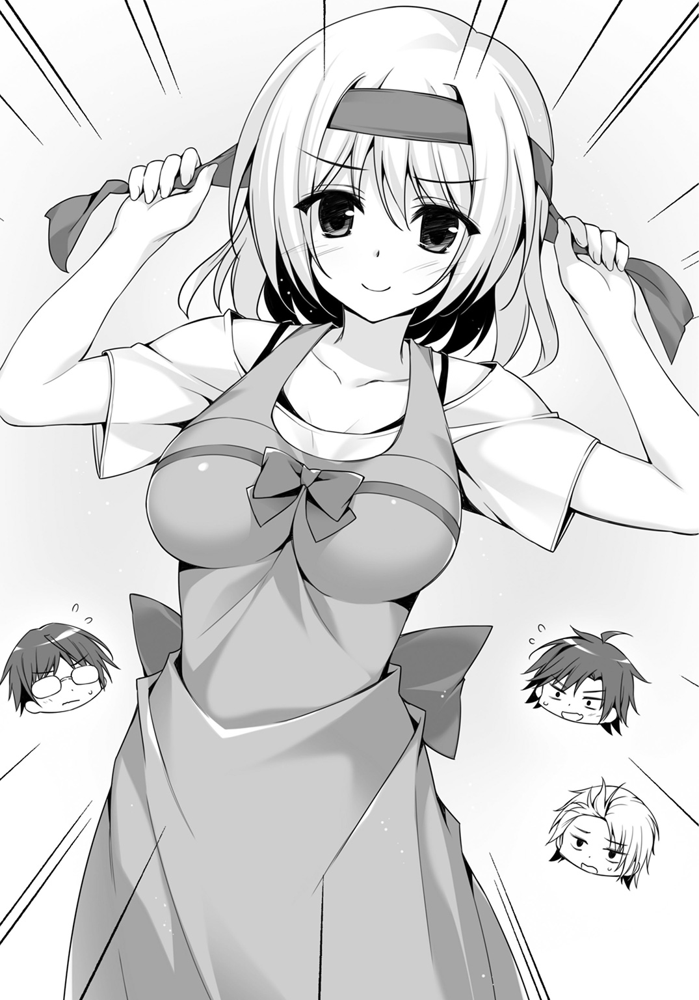
エプロン――というより前掛けを腰で締め、頭にはバンダナをキュッと巻いた。
「始めます」
言うが早いかアリスはキャベツをざく切りにし、ニンジンの皮を剝く。剝かれた皮はつるりと一本のままで流しに横たわった。
見ものはアオブダイだった。出刃の背でジョリジョリと鱗を剝ぐや頭を落として内臓を搔き出す。背中から包丁を入れて三枚に下ろした後の中骨に残った身の薄いこと。
「ブダイ......というよりイラブチャーですよねぇ。イラブチャーはお刺身でも美味しいですけど、磯臭いから嫌いな人も多いので、香草と合わせてホイル焼きにしちゃいますねぇ」
「あ、はい」
アリスの豹変についていけない廻人はハイとうなずくことしかできない。
「廻人くん、ちょっと手伝ってもらえますかぁ？ 食材のところにハーブがあると思うんですけど、持ってきてくださぃ」
「あ、はい」
イエスマン誕生の瞬間である。
ダッシュした廻人は何本かハーブを引きちぎって持ってくる。
「そしたら次はぁ、炊飯をお願いしますぅ」
「あ、はい」
素直に廻人が米をとぎ始めると、
「お、俺もなにか手伝おう」
「僕もなにか――」
「俺も！」
直角と輝井とヘラが手を挙げるとアリスはてきぱきと指示を出した。火をおこし、アルミホイルをちぎり、調味料をそろえ、バターを他のチームから分けてもらい、切ったそばからまな板を洗い――作業のひとつひとつを誰でもわかるような手順で言葉少なく指示を出す。これから作る料理のすべてを完璧に把握していなければできないことだった。
一方でなにもできなかったのは月佳である。
あらゆる家事という家事から解放されていた火見沢家では、料理を作るのは料理人であり、洗濯や掃除をするのはメイドであり、運転をするのは運転手だった。お菓子だって契約しているパティシエがわざわざ家まで作りに来た。しかも中学校まで通っていた女子校は月佳と同様にお嬢様がそろっていて家庭科のカリキュラムはないがしろにされてそのぶん礼儀作法の授業が充実しているという始末だった。
月佳は生まれてこの方、包丁なんて握ったことがない。
呆然としている間にも料理はできていく。イエスマン廻人は交渉に強い輝井を連れて他のチームを回り、食材を得ては対価として半分しか使わなかった野菜を提供する。原始に存在し現代に忘れ去られた物々交換が行われた。きまじめな直角とずぼらなヘラは意外といいコンビでシェフから受けた指示をさらに細分化して直角がヘラを操っていた。平社員のヘラ、中間管理職の直角、営業部隊の廻人と輝井、取締役本部長のアリスという社会の縮図である。
「できたぁっ」
と、まるで某料理番組のようにアリスが宣言すると「お疲れ様でした本部長」とイエスマンたちは拍手する。結局のところ月佳はなにもしなかった。
廻人たちのテーブルにはやたら豪勢な食事が並んだ。紙皿なのが残念だったけれど、肉、魚、野菜で彩られた食卓。飯ごうで炊いたお焦げ混じりのご飯もいいアクセントだ。
いただきます――と言って月佳はアラブだかクラブだかいう名前の魚にハシをのばした。アルミホイルに包まれて焼かれ、バターと胡椒が利いている白身の魚を口に運ぶ。
「！」
思わず、言葉が漏れる。
「お、おいしぃ」
確かにイラブチャーには磯臭さがある。だけれど火を通し、ハーブを合わせることで「潮の香り」という特徴に変化していた。味を深めるのがバターだ。味に起伏をつけるのが胡椒だ。切って、材料をぶち込んで、焼く。それだけなのになんと奥深い味になるのだろう。
「えへへへへ。月佳ちゃんにそう言ってもらえるとうれしいですぅ！」
満面の笑みでご飯をほおばっているアリスのほっぺたにはご飯粒がついていた。
「ど、どうして、アリスちゃん、こんな......」
「えと、アリスは病弱でよく家にこもってた話、しましたよねぇ？」
「逆ハーレムが好きっていう」
「そ、そこは言わなくていいですぅ！ 本だけじゃなくて、お料理もしてました。寝ているばかりでもよくありませんでしたし。そうしたら思っていた以上にお料理にはまってしまって、お父さんとお母さんが包丁を誕生日プレゼントに買ってくれたんですぅ」
「そうなんだ......あの、ごめんなさい。私、なにも手伝えなくて......」
「なに言ってるんですか？ 月佳ちゃん、昨日からずっとアリスのこと励ましてくれたじゃないですか。アリスがフラフラになっても月佳ちゃんはずっとアリスのこと励ましてくれました。月佳ちゃんだっていっぱいいっぱい大変なのに......。それを考えたら、お料理くらいじゃ恩返しにしても足りなさすぎです」
料理ができないことで劣等感を覚えたことを、月佳は恥ずかしく思った。
同じチーム。
できないことは誰かがサポートする。
そう、決めたのに。
「ありがと、アリスちゃん」
「ううん。月佳ちゃんにこそ、アリスはいっぱいいっぱいありがとうです！」
ふたりは寄り添うように食事を続けた。
まだまだお互いに知らないことがあるのだと改めて思った夜だった。
Ⅴ
《はい、宴もたけなわのところでぇ～......》
酔っ払ってグロッキーになっている仁科に生徒たちは注目した。
あらかた食事も終わり、片づけも終わっていた。
だけれど「まだコテージには戻るな」と教師からの指示だったのだ。
《ではこれから......》
ごくり、と誰かがツバを呑む。
《........................肝試しをやるぞオラァー！》
最後の力を振り絞って仁科は叫ぶとそのまま足下のバケツに顔を突っ込んで盛大に思いの丈（胃袋の中身）をぶちまけた。そりゃ彼氏なんてできるわけねぇだろ、と思った生徒が半分、肝試し、って中学生じゃないんだぞ、と呆れた生徒が半分。
だが、
《えっと......それじゃあ私が仁科先生の代わりに説明しますね？》
乃愛が後を引き取ると生徒たちの反応はがらりと変わる。
《今回の肝試しは生体響刻武装を使いません。男女のペアで行うものです。私と宮野くんも参加するのでくじ引きで当たった人はよろしくね》
組み合わせはくじ引き――必ず男女のペア――乃愛とユーリが参加する――断片的な知識が満腹気味の生徒たちの間を駈け巡っていく。
キャーともヨッシャーともとれる声が上がったのはそれからすぐだった。
肝試し、と言っても誰か脅かし役がいるとかそういうものではなかった。ただ、コースが五パターンあってそのどれを選ぶかは男女のペアで選択する。「これは課題のひとつに違いない」「いや、武装しないんだからただのアトラクションだろ」「明後日の朝には撤収なのに未消化の課題がふたつ残ってる」「点数のつけようがない」などいろいろな憶測が飛び交っていたが、教師陣はだんまりを決め込んでいるので決定打はなかった。
肝試しの方法は簡単で、目的地まで行って、帰ってくるだけというもの。
すべてのコースの終点は同じでそこに教員がひとりいるのでチェックをしてもらえばクリア。帰りはみんな同じ道を通る。
五パターンのコースの内訳はこんなところだ。
第一コース、平坦で舗装された道。民家が数軒ある横を通る。
第二コース、森の遊歩道を歩く。手入れがなされている。
第三コース、森の獣道。手入れがなされておらず、小川を何本か越える。
第四コース、つぶれた廃ホテル内を突っ切るコース。舗装はされている。
第五コース、第二次大戦時の防空壕跡地を通るコース。舗装はされていない。
「怖さ」に差があるのは明らかだった。
肝試しを「恐怖を克服する第四課題」ととらえた者は第五コースか第四コースを志願する。「武装を使わない夜間行軍能力が課題」ととらえた者は第二コースか第三コースを選択する。第一コースは論外である。
しかしただの「肝試し」だととらえる者も多く、そうなると「わざわざ怖いところに行かなくてもいい」という気持ちが働く。
そして肝心のくじ引きでは、
「ふぅん」
「え......僕と？」
月佳と輝井がペアになった。
アリスは他のクラスの男子生徒と組むことになった。
そして廻人は、
「あらあら。あなただったの？」
大ブーイングの中、乃愛とのペアになったのである。
「あー......センパイっすか............」
「ご不満？」
乃愛がたずねるとまた周囲からブーイング。
「や、なんとなくやりにくいっつうか」
ふわりとしたブラウスであるのに乃愛の胸の大きさがはっきりとわかる。ショートパンツからすらりとのびる生足は白い。足下はミュールだ。
他の女子とは違う、大人びた空気――大学生みたいだと廻人は思う。
「ちゃんとエスコートしてね？」
耳元でこそっと囁かれるとそれを見た男子生徒によるブーイングがまたも起きる。
やりにくいことこの上ない。
ともかく――くじ引きはひととおり完了した。
月佳と輝井は「積極果敢」を絵に描いたようなペアだからか、第五コースを選んでいた。選んだペアからスタートするらしく、スタートラインに集まっていた。
人気があるのはやはり第五コースか第三コースだった。三番人気が第四コース、そして第二コースと続き、第一コースを選んでいるのは今のところいない。
「私たちはどうするのかなぁ？」
廻人は乃愛からコースの選択は任せると言われた。
密着するほどに近いところで乃愛に聞かれ、彼女から放たれるなにが由来かわからない甘ったるい香りに廻人が困惑しつつ、
「んー......そっすねえ。じゃあ、第一コースで」
あまりに意外な回答だったのか、乃愛の眉がぴくりと動いた。
「ん、成家ペアは第一コースでいいのか？」
教師がやってきて聞く。
「はい。それで」
ちら、と教師は乃愛を見て、それから離れていった。
第一コースを選んだ生徒は現時点では他にいなかった。いまだにコースを決められない生徒が三〇人ほどは残っているから、そういう生徒なら第一コースを選ぶかもしれない。
月佳たちはすでにスタート済みで、アリスのペアはどこに紛れ込んだのか見えなかった。
「じゃ、行きますか」
廻人は乃愛とともに歩き出した。ちらちらとこちらを見ている男子生徒も多かったが、そのほとんどが「なんだアイツ、第一コースなんて選んで」「怖いコースに行ったほうが怖がる先輩に頼ってもらえるかもしれないのに......バカなのか？」といった目だ。
ふたりは都道を進んでいく。外灯もあるし、足下も問題ない。風が吹き抜けて涼しい、いい夜だった。
「ねえ、成家くん。どうしてこのコースにしたの？ あなたのことだからてっきり第五コースを選ぶのだと思ってた」
「あー......」
「ひょっとして幽霊は怖いとか？」
「いや、そういうのはないっすよ。幽霊は話せばわかってくれるし」
「ん？」
「実家の裏に山があって、山向こうは墓地になってんすよ。そこで夜中とか走り回ってると会うんですよね。でもたいていは恨めしいとか殺してやるとか全然なくて、寂しいだけなんですよ。だから俺は話し相手になったりして」
乃愛は黙り込んだが、それは廻人が本気なのかどうか迷っているふうだった。
ちなみに言えばガチである。
「ま、たまには殺すぞって追っかけてくるヤツもいたけど」
「いたんだ」
「昔から足速かったからまきましたよ。それからは塩持ち歩くようにしたけど」
「すごいのね......あなたのご実家......。なら、むしろ第五コースを選ぶべきじゃない？」
「いや、だって第一コースだけでしょ。民家があるの」
けろっとして廻人は言った。
「ならそういうところを回ったほうがいいじゃないすか。俺たち、災厄を討つ者なんだし。できるときにはパトロールしなきゃ」
乃愛の目が――ふだんは眠そうな乃愛の目が、大きく見開かれる。
桃色の瞳に映った少年が、二年前に見た少年とオーバーラップする。
彼も確かに同じことを言った――なぜこの島ではパトロールをしないのですか――と。
「星降島には災厄が出現しないから......パトロールは必要ないのよ」
「そう聞きましたけど、今まで大丈夫だったからこれからも大丈夫ってことはないでしょ。ほら、災厄警報がついてるし」
廻人は電柱を指差した。数軒の民家へと電力、電話回線を届ける電柱だ。その上には災厄警報が鎮座している。
「そっか......そうね。あなたの言うことは正しいわ」
廻人は知らない。同じく二年前、災厄警報の存在を指摘して「万全を期すべきだ」と進言した少年の存在を。
彼が現在、自分たちの高校の生徒会長を務めていることを。
「......まあ、それに」
「ま、まだなにかあるの？」
こくり、とうなずいた廻人は、言いづらそうに、
「センパイ......その靴？ サンダル？ だと歩きづらそうだから、舗装されてる道のほうがいいだろうな、って」
「――――」
この少年は、自分のことを気遣っていた――。
車なんて滅多に通らないというのに車道側を彼が歩いていたのも、その表れなのだ。
東京戦厄高校トップチーム「黄金獅子」に所属し、生徒会副会長を務めているこの自分を。
あたかも、ふつうの女の子に接するように。
「――うおっ!? な、なんすかセンパイ!?」
うれしくなってしまって乃愛はふたつ年下の少年に抱きついた。
Ⅵ
第五コースはうっそうとした森を抜け、その先にある防空壕のなかを通っていく――なんていう「安全」という言葉からはかなり遠いものだった。
もちろん防空壕は通り抜けができるもので、横道に逸れて迷子にならないよう鉄柵があったのでその点は問題なかった。
ここを越えればそろそろゴールか――と月佳は考えた。
冷たく湿った防空壕内にふたりぶんのハンドライトが心細い光を投げる。
両腕を広げても余裕のある広い通路。
輝井は無言だった。月佳から話しかけない限りは話してこない。興味のない話をぶつけてくるおしゃべりな男よりはマシなので月佳も黙っていた。
沈黙が訪れると考えてしまうのは廻人と乃愛のペアについてだった。
（あんな先輩にでれでれしてたら絶対に許さないから）
生まれてこの方彼女なんていたことがないだろう廻人だ。女の魅力の体現者である乃愛がそばにいるだけでのぼせあがるに決まっている――と、自分だって生まれてこの方彼氏なんていたこともないのに勝手に考えている。
そのとき、ぴたり、と輝井が足を止めた。
「......火見沢さん。聞きたいことがある」
防空壕のど真ん中だ。
幽霊なんて信じてはいないが、不快感はある。さっさと抜け出したい月佳は、
「なに？ 今話さなきゃいけないこと？」
あまりにもつっけんどんな言葉が口を衝いて出たことに自分でも驚く。輝井だってびっくりした顔をしている。全部廻人のせいだ。
「う、うん......今、話したいんだ」
「......じゃあ、話して」
丁寧さを心がけよう――。
「火見沢さんは付き合っている相手とか、好きな相手とかいるのか？」
廻人の顔がちらりと脳裏をよぎる。
「いないわよ！」
丁寧さはどこにいったのか。
いないわよ、ないわよ、わよ、わよ......と通路内にこだまする。輝井が、虫でも食わされたような顔をする。
「ご、ごめんなさい......なんでもないの。聞きたいことはそれだけ？」
「あ、いや、そ、そうじゃなくて」
しどろもどろだった輝井は、持ち前の甘いマスクを不意にきまじめなものに変えた。
「それなら、僕と付き合ってくれないか？」
彼からにじみ出ているのは自信と誠実さだ。
「僕は君が好きだ。正しいことを正しいと言い、間違っていることを間違っていると言える君が好きだ。僕なら君のことを――」
「断ります」
「――幸せにでき、え？」
「話、終わった？ 行きましょう」
くるりと輝井に背を向けて月佳は歩き出した。
「えぇ......？」
こんなにも簡単に、間髪を容れずフラれた経験なんて輝井にはなかった。
というよりフラれた経験がなかった。
考えるような仕草をする子もいたが、それはフリだ。駆け引きだ。そこから輝井が二言三言畳みかければコロッといった。全戦全勝である。
「あ、あの、火見沢さん」
「早く行かないと次のペアが来るわ」
「今、聞き間違いだったのかな、あの」
「『断ります』と言ったの」
「............」
「『あなたとお付き合いはできません。断ります』。理解した？」
「..................はい」
捨てられた子犬のように輝井の目尻に涙がにじんだ。
手の甲でぬぐって月佳の後を追う。
百戦百勝の恋の王子様も、相手が悪かった。
廻人やアリスには言っていない――というより言う必要も感じていないが、月佳は入学してから今日まで、二ケタを超える回数で告白されている（うち三人は女子からだ）。最初はどう断っていいかわからずまごまごしたところ、すわ脈アリかと勘違いされた。
学んだ。断るときは迅速に。
はっきり、はやく、はねのける。三つの「は」を実践している。
（あーあ、バカイトはもうゴールしてるかな）
学年トップのイケメンに告白されようと、月佳の頭にあったのはおバカなチームメイトだったのである。
そのころ、アリスは別のクラスの男子生徒と第二コースを歩いていた。
足下もちゃんとした歩道だ。昨日、森で一夜を過ごしたことを思えばなんてことはなかった――感覚がマヒしているだけ、とも言えるかもしれない。
「う、うおっ、なんだよ......葉っぱか」
「ふぇぇ」
「あああ!? なにあれ、コ、コウモリ？」
「ふぇぇ」
同行している男子生徒は怖がりなのかびくびくしてアリスの後ろからついてくる。
もともとアリスも話し上手ではなくて、やがてふたりは無言で歩いていくようになる――のだが、
「............あ」
「ふぇ？」
そこはすこしだけ広くなっている場所だった。
木立に囲まれた広場と言ってもいいかもしれない。
ルートは真っ直ぐなのでこの広場に足を踏み入れる理由はない。
だけれど彼は、なにかを拾い上げた――それは、道ばたに落ちていた、蛍光イエローの発光体だ。パキンと折ればしばらく光っているというアレである。
「ちょっと、そっちに行ってくれないかな......」
突然、彼の顔が怖いものに変わった気がした。
アリスが断ろうとすると腕をつかまれた。広場へと引っ張っていかれる。
「な、ななな、な、なんですかっ――」
木立の陰からひとり、またひとりと生徒が出てくる。
合計で八人。
見たことはあるけれど話したことのない、他のクラスの生徒ばかりだった。
男子もいれば、女子もいる。割合は半々だ。
彼らは一様に切羽詰まったような表情をしていた。
「......千早川さん。お願いがある」
そして彼らは――頭を下げた。
「頼む！ 俺の武器を直してくれないか？」
「私、遠炎なんだけど弓の弦を切られちゃったの」
「俺のは盾なんだ。壊れたらもう防闘としてやってけねえ......！」
彼らのすべてが、武装を壊された生徒なのだ。
もう、戦えない。次に戦闘が絡む課題があれば自動的に脱落となる――〇点だ。
「頼むよ、復慈なんだろ!? 俺たちの武装を直すのが仕事だろ!?」
しかし復慈とはいえ無制限に修復することはできない。
昨晩から、廻人だけでなく輝井たちの武装も修復している。厄介なのが遠炎の矢だ。撃ったら消失してしまう矢は、補充しても補充してもすぐに足りなくなる。
以後、廻人だけを修復するとしても、全力で戦うことになればそう長くはもたない。
「あ、あのあのっ......それはできないんですぅ......」
「なんでだよ！」
両肩をつかまれてアリスは涙目になる。
「だ、だってぇ、廻人くんは生徒会チームと戦いますしぃ......そのためにはアリスが復慈として動ける状態になきゃ......」
「はっ、生徒会になんて勝てるわけねーだろ!? ほんとうは嫌がらせだろ。討伐班に復慈が突っ込まれて、ふだんからいじめられてんだろうし。その仕返しか」
「そんなんじゃ......」
「ふだんお荷物なんだからこういうときに役に立てっつってんだよ！」
激昂する生徒を他の生徒が押さえ込む。
「お、おい、頼むにしてもさすがにやり方あんだろ」
「そうよ。気持ちよくやってもらうべきだわ。――ね、うちのチームは四人だし、あとひとりぶんなら入れるから二学期から入ってもいいよ？」
「なんだよそれ。そうやって入れといて三学期で外すんだろ？」
「当たり前でしょ。でも、悪くない取引でしょ？ 二学期の間は居場所がある――」
この人たちは、なにを言っているのだろう。
アリスには理解できなかった。
ただ自分たちの利益のためだけに利用されようとしていることだけはわかった。
「......廻人くん......月佳ちゃん......」
鼻声でアリスは言った。
「助けてっ......！」
Ⅶ
「......あの、センパイ」
「なあに？」
「......その、近すぎっつうか」
「あら？ 私言ったでしょ？ ちゃんとエスコートしてね、って」
「......あの、その......腕に、あの......」
さっきから乃愛はぎゅうっと廻人の腕にしがみついている。
女子の身体ってこんなに柔らかく温かいのかよ――と驚いた。
そして――胸、である。
当たっている。
重い水風船のような、ずっしりとした感触が廻人の腕に。
なんとか離れてほしい。さもないと頭がどうにかなってしまいそうである。田舎育ちの純朴少年とて、そりゃあ女の人に興味のひとつやふたつや百は千、あるんである。
だけれど乃愛には離れる気がないようだ。
厄介なことになった――女ってのはよほど相手を好きじゃない限り、こんなふうにべたべたしないんじゃないの？ そういえば村にも「魔性」と呼ばれる女性がいて、あの人は男と見れば誰彼構わず腕にしがみついていた。昨年、八九歳で大往生を遂げたけれども。
廻人の浅い経験ではまったくわからない。
乃愛のようにキレイな人もいなければ、いいにおいのする人も見たことがなかった。廻人の周囲にいた女子と言えば、よく日に焼け、蛇を素手でつかみ、男子からイタズラされれば百倍返しが標準レートという、月佳やアリスが聞けば眉にツバしそうな傑物ぞろいだった。
廻人の頭はパニクった――ゆえに、足下への注意がおろそかだった。
「あ――」
歩道の段差にけつまずいて前のめりに倒れ込む。
ふだんならバランスを取るところが今日は半身を乃愛に奪われている。彼女を巻き込むようにふたりは地面へ。
落下していく途中で廻人が考えたのは――センパイだけは守らなきゃ――ということだ。乃愛の下敷きになるよう無様に背中から落ちたが、彼女の身体は正面から受け止めた。
「ぶはっ」
桃色の豊かな髪の毛が廻人の顔面に広がって、むせるような甘い香りになぜだか目がちかちかした。
「う......」
「あ、だ、だ、大丈夫っすかセンパイ――」
彼女を起こそうと腕を突っ張ったとき、廻人は柔らかいなにかをつかんだ。
いや、つかもうとしたが、つかみきれなかった。
それくらい大きくて巨大な――。
「......あんっ」
乃愛が吐息とともにつややかな声を漏らす。
自分がつかんでいたものが、乃愛の豊満な胸だと気づいた廻人の体温は一気に六五度くらいまで上昇して常人なら即死するところだったが田舎育ちなのでセーフだった。
指がブラウスに沈んでいる。
ブラジャー越しであるにもかかわらずなお、柔らかさがはっきりと伝わってくる。
「あら......奥手なのかと思ったら、アグレッシブなのね？」
手が胸に触れているどころか危うく揉みしだきそうになっていることに気づいて、
「すすすすすすみまへん！」
猛スピードで飛び起きるや電柱に飛びついて三メートルくらいまで上った。
「ほんとすんませんっした！」
「あらあら」
「いやほんと俺なんてひどいことしちまって......！」
「あらあら」
コアラのようになった廻人を見て乃愛が口に手を当てる。
「......確かにいきなりだったわね？ 同意がなければそういうことをしてはいけないわ」
「は、はいぃ！」
「だから、今度からはいつでもいいわよ？」
「はい――はいっ!?」
廻人は乃愛から顔を背けた。危うく鼻血が垂れそうになったのだ。手で鼻をつまみたかったがあいにく両手は電柱を抱くのに使ってしまっていた。
「！」
そのとき、だった。
「......聞こえた」
「え？」
「俺、呼ばれたみたいで――」
電柱から飛び降りた廻人は、北側の森を見やる。
都道を外れればすぐに茂みがあり、その先には木々がこんもりとしている。
誰かが自分を呼んだ――そう、感じたのだ。
廻人は道を外れ、草むらに足を踏み込んだ。
「ちょ、ちょっと成家くん!?」
「俺、呼ばれたんで行ってきます」
「――ダメ」
走り出そうとした廻人の腕を乃愛がつかむ。
「ダメよ......成家くん。行ってはいけない」
「俺には聞こえたんです」
「気のせいじゃ......」
「そうかもしれないっすけど、確かめなきゃ」
「ダメ」
乃愛は頑なだった。
「......これ、第四課題なの。肝試し」
意外ではなかったので廻人は小さくうなずいた。
「ゴールするだけで一〇点がもらえる、いわばボーナスステージなの。どのルートでも同じよ。ここでリタイアしたら、あなたは一〇点をもらえないわ」
「そうなんですか」
「わからないの？ あなたは今、二一点しかない。ここと次とで一〇点ずつとって、ようやく四一点――レインボーエッグを取れれば、五一点になる。六条くんの記録を超える」
乃愛の手に力が込められる。
「私をガッカリさせないで。あなたは、会長を超えられる可能性を持っている唯一の人材なの。声が聞こえたなんて......もし、誰も呼んでいなかったらどうなるの？」
「だったら、いいじゃないですか」
「え？」
「誰もが無事だったら、それが一番いいに決まってる。......でも、万が一、俺の勘が正しくて、月佳やアリスがピンチだったとしたら......」
廻人は乃愛の手首をつかんで、離した。
「助けに行かないで、なにがチームっすか」
その直後、走り出した。
迷わず茂みに飛び込んで森へと突っ切っていく。
残された乃愛は呆然と――暗闇に消えていく青い髪の少年を見送った。
Ⅷ
じりじりとアリスの包囲網は縮まっていた。
シューターにとって最も頼れる相棒であり、自分自身でもある生体響刻武装。
破損された彼らは、取り戻すために必死なのだ。
幾筋ものライトがアリスに当てられる。恐怖に怯え、目尻の涙が光る。
「頼む......」
「直してよ......」
「うん、って言えよ......」
逆光に、彼らの顔は目だけが爛々と白かった。
本物の幽霊よりもおぞましかった。
「ひゃんっ!?」
後じさるアリスのかかとが木の根に引っかかって尻餅をつく。
その彼女に、全員が一気に歩み寄る。
「あ、ああ、ああああああ......」
アリスがぎゅっと目をつぶった――ときだった。
「――なにしてんだよ、お前ら」
アリスに当たっていた光は一斉に背後へ向けられた。
立っていたのは、
「廻人、くぅん......！」
彼女のチームメイト。ここにいるはずのない少年だ。
肩で息をしている。身体中に葉っぱやら枝やらをくっつけている。
「大丈夫か？ 俺がここから連れ出してやる」
「え......？」
アリスはどきりとした。
その言葉は――夢の中で聞いたセリフとおなじだったから。
「お前ら、アリスから離れろ。なにしてんだよウチのチームメンバーに」
「これは俺たちの取引だ。お前は引っ込んでろ」
ひとりが言い返すと、
「迅引ごときが出しゃばるなっつの。たまたま復慈がいたからラッキーなだけじゃん」
「引っ込めよ！」
ひとりが杖になりそうなサイズの枝を拾い上げる。
「俺は言ったぞ。さっさと帰れ」
脅しだ。暴力も辞さない、という。
「生身の人間がこの人数差――げっ!?」
「レイジキィィィック！」
相手が話し終わる前に廻人は距離を詰めていた。
枝を構えられるよりも先に跳び蹴りをくれた。少年は後ろ向きに倒れ、背後にいた女子が叫び声を上げて逃げる。
「て、てめぇ、不意打ちなんて卑怯だ！」
多勢に無勢でよってたかってアリスを囲んでいた人間がなにを言うか。
「うるせーんだよ！ 俺は今クソほど腹が立ってんだ！」
「おらあっ！」
廻人に殴りかかった男子。それは死角からの一撃だったが気配でバレバレだ。
難なくかわした廻人は彼に足を引っかけて前のめりに転ばせる。
この程度、普段から災厄討伐戦を想定している廻人にとってはトレーニングにすらならない。
ぎろりとにらみつけると、女子は後じさる。
「クソ......お前、迅引だろ！ 俺たちの邪魔すんじゃねぇよ！」
「そ、そうよ！ 迅引なんてお荷物でなんの役にも立たないシューターじゃない！」
「復慈を独占すんな！」
「今回の実習でようやく役に立てるんだろ!? 譲れっつってんだよ！」
生身の戦闘では勝てないと思ったのか、口々に罵声を発する。
聞いていたアリスの目に涙がじわりと溜まるほどのひどい言葉だ。
だけれど廻人は平然と無視し、アリスのもとへと歩いていく。
尻餅をついたままのアリスに手を差し伸べる。
「ケガはないか？」
ぽろぽろとアリスの両目から涙がこぼれる。
廻人は笑っていた――アリスの不安をすべてぬぐい去るかのような、温かい笑顔。
アリスの手を取って立ち上がらせると、ふたりは森の奥へと消えた。
声が届くだなんてアリスは思ってもいなかった。
だけれど廻人は助けに来てくれた。
他の生徒にバカにされても、邪魔をされても、暴力を振るわれても、アリスの無事だけを喜んでいた。
アリスは手を引かれて――手をつないで歩いていた。
森の中、道なき道。アリスが転ばないよう細心の注意を払ってくれている。
目が覚めるような青色の髪も、意志の強いまなざしも、いつも見慣れた成家廻人じゃないと思った。
優しい少年だとは知っていた。
だけれどこれほどまでに温かい人だとは知らなかった。
（アリスの、王子様......）
きゅう、と胸が締めつけられるように感じた。
切り立った崖の上。ガードレール越しに眼下に広がる森が見える。その向こうには海がある。星降島が緩やかに弧を描いているのがよくわかる。
「はぁ――」
ガードレールに両手をついて廻人は息をついた。ここまで逃げればさすがに安心だ。
「あいつらなに考えてんだよ......ちょっと強引すぎるよなぁ、アリス？」
「え、あ、は、はひっ」
アリスの様子がおかしい。なんとなく頰も赤いし熱でもあるのかと思ったけれど、さっきの逃避行で興奮しているのかもしれない――。
「アリス――ごめんな」
「え？ なにがですか？」
「この肝試し、課題だったみたいだ。ゴールするだけで一〇点もらえるんだって。途中で抜けたらどうなるかわかんねーんだ」
「あ......」
アリスが考えたのは、今の廻人の点数だった。
廻人が望んでいる「特別なご褒美」はチーム平均四五点が必要だ。この第四課題での脱落は大きなマイナスになるはずだ。
それを知っててなお、廻人は助けに来てくれた――。
ふくれあがる思いが、感情が、胸で詰まってアリスは思わず涙をこぼしそうになる。
「どうして......ですか。どうして廻人くん、そんなに、そんなにアリスに、優しいんですか......優しくしてくれるんですか」
涙がこぼれないように顔を上へと向ける。廻人の瞳と出合う。
「......大切な人だから」
ストレートな言葉。
温かい言葉。
一瞬、違った意味を期待してしまいそうになる言葉――。
「俺にとってトリニティはなによりも大切なんだ。だから、アリスももちろん大切だ」
少しだけ、失望したような色がアリスの顔をよぎる。
「そう......ですよね」
「？ なんか、変なこと言ったか、俺......」
「ううん。そんなことないです。アリスにとってもこのチームが......とっても大切です」
「だよな！ よし、とりあえず帰ろうか」
歩き出した廻人のあとをアリスはついていく。
胸がどきどきする。
ふたりきりのこの時間が、なんだかこそばゆくて、むずむずして、それでいてずっと続いてほしいようにも感じられた。
廻人の顔を見られない。だからアリスは彼の手を握った。
「ん......どうした？」
「......あ、あのあの......まだちょっと怖くて」
自分でやったことの大胆さに驚き、拒絶されるかもしれないと思い当たるや、当然あり得る残酷な未来にアリスは青ざめる。
「そりゃそうだよな......手、つないでればちょっとは落ち着くか？」
拒絶、されなかった。
それがうれしくて、アリスはうつむいたままこくりとうなずく。
こんな素っ気ない態度で嫌われたらどうしよう。ありがとうも言いたいのに。
でも――顔を上げることができなかった。
手をつないで歩く今がうれしくて。
月に照らされた誰もいないこの道を歩けることがうれしくて。
（ああ、ようやくわかりました。アリスは......きっと）
この人を好きになったんだ。
Ｃｈａｐｔｅｒ Ⅳ
Ⅰ
「......かいちょ、まだ残ってた」
夜の九時だというのに東京戦厄高校生徒会長室にはまだ明かりが点っていた。
六条は書類に目を通しては書き込みをしたりメールで返事をしたりしていたが、そんな彼を発見したのは棗だ。
棗はデスクにぴょんと飛び乗って、会長に半分背中を向けるように座った。
「芙蓉と宮野がいないと、いろいろと滞るからな」
「仕事なんてほっとこ。遊びに行きたいケド」
「そうはいくまい。副会長と役員を向かわせたのは俺だからな」
生徒会長の仕事は夏休みに入ったところで減らない。むしろ、増える。
高校生シューターはふだんは学校があるため身動きが取りにくい。そのせいで、ディザスター・シューターへの理解を深めてもらうための地域イベントへの出席、災厄技術庁教育課との打ち合わせ、防衛省との会合などやるべきことが休暇とともに訪れる。
棗はつまらなさそうにフーセンガムをふくらませた。
「どうした」
「......かいちょ、ほんとは自分が校外実習行きたかった」
六条の、書類をたぐる手が止まる。
「去年は行けなかったからな。それに一年のとき......俺は、ヤツを逃した」
淡々とした口調だったが、言葉尻に怒気がにじむ。
過去の自分に向けた怒りのようだった。
「あんなノ、どう考えたってムリ」
「芙蓉と宮野ならなんとかするだろう。ヤツは災厄技術庁生態研究課たっての依頼だ。悲願と言ってもいい......」
「アイツ、また出てくるノ？」
なにかを思い返すように六条はゆっくりとうなずいた。
「フィフティ・チャレンジなどそのためのお膳立てだ」
結果からすると廻人とアリスは第四課題が〇点とはならなかった。
歩いた地点までは得点になる。そのため、ふたりそろって六点だった。
アリスを脅迫した生徒たちについて教員に文句を言ったが、基本的に生徒同士の争いについて教員は口を挟まないというスタンスだった。
確かにいちいち仲裁に入っていたら、あんな本気の鬼ごっこなんてできなかった。
剝き出しの敵意、誰を信用し誰を裏切るか――そういう極限状態を経験することこそが校外実習の目的だったりするが生徒に説明はされない。
「おいおいおいィ！ 廻人ォ！ てめぇ副会長ほっといてどっか行ったってマジかよ!?」
コテージに戻るやヘラが絡んできた。説明が面倒なのでどうしようかと思っていると、横から直角が、
「ヘラは荒れているぞ。なんでもペアになった女子に『鼻息が荒くて気持ち悪い』と言われ、肝試しの最中、半径三メートル以内に近寄るなと命じられたのだそうだ」
「うおおおんおんおんおん......」
ヘラが男泣きに泣いた。
「あれ、輝井は？」
まだ戻ってきていないのか――と思うと、輝井はベッドで横になっていた。こちらに背を向けて完全に気配を殺している。
「いるんだが......戻ってきてずっとあの調子だ」
「ふうん。なんかみんないろいろあったんだな。――直角は？ なんかあった？」
「俺か？ 同行した女子から『こいのはなし』をしようと言われて、したぞ」
「お、おお......すげぇな。直角が恋の話なんて......」
「こう見えても詳しいんだ。錦鯉はその模様の美しさから海外で注目されていてな、今では相当量が輸出されている。中には一千万円なんていう値をつけるものも――」
「待て直角。今なんて？」
「だから、錦鯉。『鯉の話』だ」
「............」
直角に恋バナを振った女子は、錦鯉が海外に空輸される話をされて、どんな顔をしたのだろうかということに廻人は思いを馳せた。
連日の課題で疲れ切って眠りこけていた――。タオルケットをはだけて非常口を示すピクトグラムみたいなシルエットになっている廻人、タオルケットを抱きしめ熱い接吻を枕と交わしているヘラ、死体安置所でもこんなにキレイな寝姿はないという直角、相変わらず胎児のように縮まっている輝井。
四人が四人らしい寝姿を見せていた――ところへ、
「起きろお前らァァァァァァァアアアアアアアアアアアアアアアア!!」
がぁんがぁんがぁんと鉄のバケツをハンマーで打ち鳴らす仁科が現れたものだから、廻人はすわイナゴが襲来したかと飛び起き、ヘラはもんどり打ってベッドの下に転げ落ち、直角はキョンシーのようにむっくり起きだし、輝井はタオルケットを頭からひっかぶった。
「イナゴは!? イナゴはどの田んぼを荒らした!?」
「ここは南国よ。イナゴなど飛来する前に体力が尽きて海に落ちるっての」
「なんだ、仁科センセーか......」
「なんだとはなによ。最後の課題を持ってきたのに」
課題――という言葉に全員が反応する。もとい、頭を打ったヘラだけは悶絶していた。
「ここには輝井くんと直角くんがいたか。あと一〇点を取れれば満点ね。すばらしい」
「課題の内容とは......なんですか。こんな時間に」
直角が寝る間もつけている腕時計を見ると午前二時を差していた。
草木も眠る丑三つ時である。
「こんな時間に健全な青少年のやることと言ったらひとつしかないでしょう」
仁科の笑顔はいつものとおり、
「夜這いよ！」
邪悪だった。
Ⅱ
ルールはシンプルだ。
制限時間は一時間。見回りの目をかいくぐって夜這いをしかける。それだけだ。
とは言ってもほんとうに夜這いをするわけではない。
この課題は成功で一〇点、失敗で〇点という極端なものだった。
成功条件は、それぞれ指定された女子コテージに合い鍵を使って入り、部屋のどこかにあるというＩＣチップで認証をするというもの。
合い鍵はスマートウォッチのように腕にはめるブレスレットだった。認証もこれで行う。
ただし強い衝撃を与えるとブレスレットは腕から外れてしまい、課題失敗となる。
「さあ、みんなこれをかぶって！」
仁科が嬉々として寄越してきたのは頭からすっぽりかぶり、目と口だけがのぞいているニット生地で――、
「目出し帽じゃねーか！ こんなんかぶって夜這い行ったら完全にアウトでしょ!?」
「性欲まみれの野獣のごとき男子高校生が目出し帽をかぶって可憐な女子高生に襲いかかる......ぐふふうう、なんて興奮するシチュエーション」
「誰か！ この頭のおかしい女を病院に連れてって！」
「青春ね！」
問答無用で目出し帽が人数分配布された。
深夜、目出し帽をかぶった男子生徒一五〇人はさながら少年テロリストか少年強盗団だ。
「武装召喚」の声とともに武器を持った日には向かう先は銀行か宝石店以外考えられない。
不承不承といった感じで彼らは森を駈け抜けていく。
走りながら廻人は、夜更けに叩き起こされたせいか空腹を感じていた。
「腹減ったなぁ......見回りの目をかいくぐるってなんだよ」
「......夜這い、ね。気が進まないよ僕は」
輝井が先ほどからと同じように気落ちして言うとヘラは、
「ぶほぉー！ 夜這いだってよ夜這い！ 昭和かっつうの！ でも......なんだろう、この、胸を焦がす熱い炎は......」
変態がここにもいたかと廻人は思った。
「いいよな、夜這い。男が夜、女のいる寝室へと忍び込む。ＹＯＢＡＩは海外にも誇れる日本の文化――ふごっ」
瞬間、ヘラが「く」の字になって背後に吹っ飛んでいった。
「敵襲！」
それが、遠炎の放った矢だと気がついたときには正面に生体響刻武装の放つ淡い光がいくつも――百以上、見えていた。
「そういうことか――」
廻人は理解した。
敵は、女子だ。
「なにあいつら!? 気持ち悪い、テロリスト!?」
目出し帽をかぶった男子集団と遭遇した女子から悲鳴が上がる。
あらかじめ彼女たちはレクチャーされていた。
攻め込んでくる男子勢を、防ぐべし。
これが最終課題だと。
「あ、つけてるつけてる。ほんとだ。みんな手につけてるよ」
「あれが一個につき一点か......」
彼女たちに支給されたゴーグルは、特殊なビーコンを感知できる仕組みを備えていた。
ゴーグルを通すと、ブレスレットが赤くちかちかと点滅して見える。
戦いの末、ブレスレットを勝ち取れば、一個につき一点がもらえるという仕組みだ。
男女に分かれた戦争が、始まった。
しかし始まってすぐ彼女たちは気がついた。
この戦いが、いかに厄介かということに。
「ちょ、ちょっと誰よ!? 弱破は引っ込んでて！」
「停鈍邪魔だって！」
「痛いッ!? 誰よ後ろから撃った遠炎！」
数十人単位での戦いになるとお互いの生体響刻武装が干渉しまくる。
光撃同士の攻撃がぶつかれば衝撃波が発生してそばの人間が倒れる。
調善の撃った光は木立に、敵に、他の味方に当たってなかなか届かない。
この暗さではチームメンバーの位置を把握することすら困難だ。
「はうぅ......どうしましょう、月佳ちゃぁん......」
アリスと月佳は争いの最後方にいた。
調善と復慈であるふたりが前線に出ることのメリットはない。
月佳はひとり考えていた。今、できることは考えるだけだ。
おそらくこの課題は今回の校外実習の集大成という位置づけだろう。
上空からの降下、肉体的にも心理的にも逆境で行うサバイバル鬼ごっこ、仲間との連携――災厄との戦闘、その最前線に送り込まれたときにどう振る舞うか。実践形式で学び、精神的にも成長させる。ある意味、強制的に。
たぶん――この第五課題もただの戦闘ではないと月佳は考えていた。
課題を真正面からとらえると、光撃と防闘が活躍でき、後方支援タイプの月佳やアリスが活躍できない課題となる。弱破なんてもってのほかだ。
しかし第五課題に「抜け道」があることに月佳は気づいた。
そのヒントは「なぜ携帯電話が取り上げられたのか」にある――。
「千早川さん！ 私の武装直して!!」
「あたしのも！」
来た、と月佳は思った。最初から壊れていた生徒もいれば今の戦いで壊れた生徒もいる。戦いは始まったばかりで彼女たちはひとつもブレスレットを獲得していない。
戸惑うアリスの前へ月佳が出る。
「断るわ」
「どうしてよ!? 女子は男子のブレスレットを奪わないといけないのよ！」
「もちろん、そうよ。じゃあ聞くけど、アリスちゃんがあなたの武装を修復したとして、あなたはアリスちゃんに一〇本のブレスレットを持ってきてくれるの？」
「え......？ そ、それは」
彼女たちはまず自分自身のブレスレットを確保するだろう。それから、チームメンバーに分け与える。その上で余裕があればアリスに持ってくるかもしれない。
しかし、ブレスレットの母数は男子生徒の数しかないのだ。男子は女子より若干人数が多いとはいえ、女子全員が一〇点を取るのは不可能だ。
「あともうひとつ。今、アリスちゃんが復慈をかけたところで自動修復しかできない。アリスちゃん、自動修復はどれくらい時間がかかるんだっけ？」
「えとえと......武装ひとつあたり大体一時間くらいですけど......」
一時間。
この課題のタイムリミットだ。
「ッ！ 最初から直す気ないんじゃん！ バカバカしい！」
武装が壊れればその時点で課題失敗なのだという事実を突きつけられた少女のうち、ひとりが月佳を突き飛ばす。
「うっ」
「月佳ちゃん！」
尻餅をついた月佳。たまたま水たまりがあって制服のスカートが泥だらけになる。
「平気よ」
去っていく少女たちは、満足な状態ではない武装で戦うことになるのだろう。
同情もなければ憎悪もなかった。
ただ――かわいそうだった。がむしゃらに戦うだけじゃない。シューターは、いついかなるときも冷静に状況判断をしなければいけないのに、彼女たちはわかっていない。
「私、一度コテージに戻って予備の制服に着替えてくる。......どっちみち私たちにできるのは待つことだけだからね」
「待つ？」
わからない顔のアリスに、月佳は意味深な笑顔を残した。
Ⅲ
そのころ、廻人の周辺には誰もいなかった。
離れた場所から喚声が聞こえてくるので戦闘は続いているのだろう。
だけれど廻人はそんな喧噪とはまったく関係ない場所にいた。
「おー、これか」
廻人がブレスレットを差し出すと、コテージのカギがかちゃりと音を立てて開いた。
そう、廻人はすでに女子コテージの集落の中にいた。
開戦してすぐに廻人がしたのは――「武装解陣」だった。
廻人は純粋に、課題の遂行をなすべきだと考えた。
正面突破する能力はない。だから、隠密行動に徹しよう、と。
月佳からも口酸っぱく言われていた「迅引なら迅引らしく振る舞いなさい」という言葉に従ったのだ。
生体響刻武装は確かに頼りになるが、光を放つ。
さらに廻人はブレスレットを右手で覆うようにして隠した。なんだかキィィィンという甲高い音が発せられていると感じたのだ。
もちろんこのブレスレットに埋め込まれたビーコンについて男子は知らされていない。廻人は野性の勘で気がついた。
武装を解除し、ビーコンを隠した廻人は迂回して女子コテージへと迫った。戦闘が始まるや女子全員が戦闘地域に殺到したようで、他の箇所はスカスカだった。
「ええと、中のどっかにＩＣチップがあるんだよな......」
暑苦しくて廻人は目出し帽を脱いだ。
女子のコテージ内部は廻人たちが泊まっているものと変わらなかった。
ただしこの部屋はふたり部屋のようで、使われた形跡のあるベッドがふたつと、空きのベッドがふたつある。
それに――なんだか、漂っているニオイが違う。
そわそわするような甘いニオイだ。
「ぶるぶるぶるぶるっ」
顔を左右にぶんぶん振って邪念を追い払う。ここに来たのは課題クリアのためだ。
ＩＣチップがどこにあるのかは教えられていない。丹念に調べていく。壁にかけられた時計の裏、トイレの棚の上、バスルームの換気口のなか、洗面台の裏――そして、
「お......」
ベッドの下をのぞきこんで、点滅する赤色の光を発見した。
壁際に設置されている。
隙間はちょうど人ひとりが入れるくらいだ。身体を伏せて廻人はじりじりとベッドの下に身体を滑り込ませていく――。
がちゃり。
コテージのドアが、開いた。ちょうど身体がすっぽりベッドの下に入ったところの廻人は、心臓を冷たい手でわしづかみにされた気分だった。
コテージに戻った月佳は、ふぅ、と小さく息をついた。アリスを狙って行動する女子がいるだろうとは思っていたけれど、考えていた以上に彼女たちは気が立っていた。
「............？」
室内に入ったとき、わずかに違和感を覚えた。なんだろうか。
「......気にしすぎかな」
つぶやいて、自分の使っているベッドに歩いていく。濡れたスカートが気持ち悪い。するりと下げると足下にポイッと脱ぎ捨てた。淡い花柄の下着一枚になる。月佳の、細めの太ももは精巧な作り物のようにすべやかな光を持っていた。
「う～......」
下着も濡れている。月佳はクローゼットにあるスポーツバッグへ手を突っ込む。替えのスカートと下着を引っ張り出す。ベッドの上にそれらを放り投げる。
スニーカーを脱ぎつつ下着に親指をかけた。
「............」
やはり、なんだか違和感を覚える。
すでに彼女の下半身はパンツ一枚だ。
つっかけたままのスニーカーでトイレのドアを開き、バスルームを確認する。
誰もいない。
やっぱり、気のせいか。
ベッドの下にいた違和感の正体は息を潜めて冷や汗を身体中から流していた。
（誰？ 誰なの？ 誰なんだよぉぉぉ！）
ぽつりとつぶやかれた声は月佳のものであるようにも感じられたが、確証がない。
そしてこの赤いチカチカがＩＣチップであるかも、確証がない。防犯センサーだったらことだし、身動きのできない廻人は位置がバレた時点でこの女子生徒にボコボコにされて課題失敗となってしまう。
（早く出てけ早く出てけ早く出てけ）
廻人は念じることしかできなかった。
だがコテージの主らしき少女はトイレやバスルームを確認していた。
誰かがいることに気がついたように。
気が気ではなかった。彼女が屈んで、ベッドの下をのぞき込んで、「見ィツケタ......」と耳まで裂けた口を開くところまで想像した。
幸か不幸か彼女は廻人のいるベッドまで戻ってきたが、その下を確認することはなかった。つっかけただけのスニーカーを脱いでそこに可愛らしい足を載せる。
「!?」
するりとパンツが降りてきた。さっきスカートが降りてきたからもしやと思ったがもしやは突然やってきた。廻人は恐慌状態に陥った。見てはならぬものを見てしまった。氷漬けになったかのように指先ひとつ動けなくなった。下半身全裸の少女が半径一メートル以内にいる。その少女はベッドに乗っかった。新しい服に着替えている気配が伝わってきた。ぎっ、ぎっ、とベッドが軋む。湧き上がる背徳感。視線の先にはスニーカーとスカートとパンツというこれまで見たことのないサンドイッチが完成している。
着替えが終わったらしい少女はベッドの上でもぞもぞしていた。紙を破く音が聞こえ、銀紙をかさかさ言わせる音が続いて、それから、パキンッ、と続いた。これがチョコレートを食べる音だとなんとなく想像がついた廻人だったが、その想像はとてつもなくイヤな予感につながっていた。
だけれど廻人に、そんな予感を気にしている余裕はなかった。
「ふにゃぁぁぁああああああ――おいしいよぉ！ やっぱりチョコレートだよね！ ああん、もう、ダメ、溶けちゃひそう！ よかったにゃぁ、この島でもチョコレート買えて！ アリスちゃんにはこんな姿見せられないしぃ！」
じったんばったんとベッドの上で跳ね回っている少女はいったい誰なのか。ヒントは、チョコレートが大好き。アリスと同室。
（......誰ダロウ......全然ワカラナイヤ......）
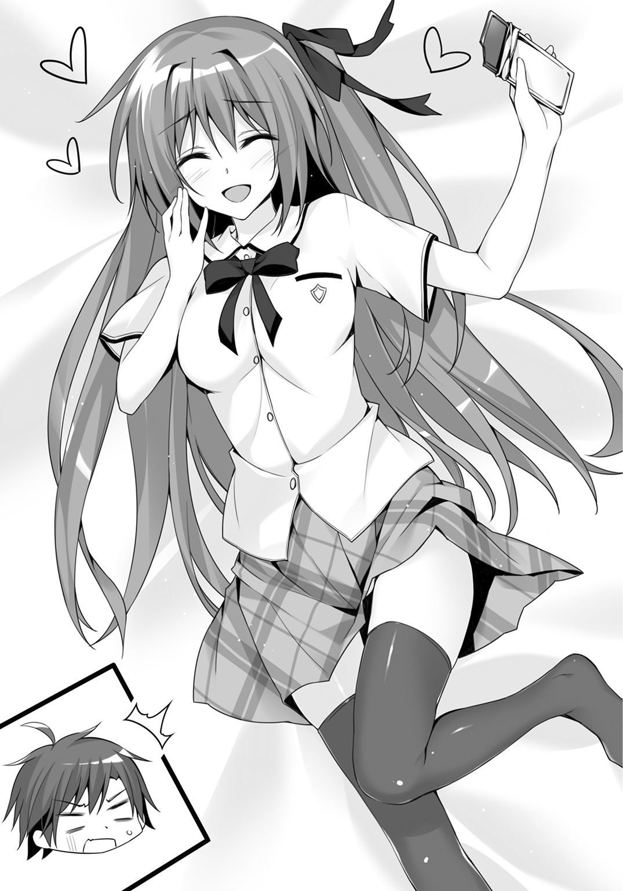
頭上で「ふにゃ～」「はふぅ～」なんて声を聞いていた廻人の顔は冷や汗から脂汗にまみれてコテージの床に水たまりを作る。どんなに仲が良くても、どんなに信頼を寄せるべき相手でも、知ってはならないことがある。知らなくていいことがある。俺は、床だ。このコテージの床の一部だ。そう信じ込むことにした廻人はそっと心を閉じた。
しかし不幸は終わらなかった。昨日から疲労を重ねている廻人の身体はエネルギーを求めていた。だからこそ廻人が先ほど感じたのが空腹だった。そしてここに来て、ゆっくりと、チョコレートの香りが降りてくる。廻人の鼻を甘い甘い香りがくすぐる。
ぐぎゅるるるるるるるるるる......。
世界の終末を告げる鐘の音よりも、腹の虫の声は絶望に染まっていた。
「ふにゅう～」とか「あぁぁん」とか聞こえていた声は止み、じたばた動く震動も止んだ。部屋に、深夜の霊園よりも重苦しい静けさが降りた。
廻人は瞳を閉じた。視覚情報を遮断するとともにすべてのしがらみから解き放たれ、一切の煩悩と欲望を滅却し、ありとあらゆる罪を赦す悟りを得ようとした。
チラッ。
薄目を開けた廻人はそこに、先ほどまでなかったものを見つけた。
だらりと床に落ちた紅の髪を。
逆さまになってこのベッドの下をのぞき込んでいる少女の首を。
瞳孔が開かれ深淵に呑み込まれた感情のない瞳を。
「――――ぃっ」
少年の絶叫がコテージ村にこだました。
Ⅳ
第五課題での男女に分かれた大規模戦闘は後半、状況を大きく変えた。たんこぶによって頭が常人の三倍ほどもある迅引が戦線を引っかき回した。彼の目は常に涙に濡れており「オ願イデス、モウ叩カナイデ......」「忘レタ......全部忘レタ......」とつぶやいていたという。
彼が――廻人が狙ったのは、男子だ。
課題をクリアして一〇点を獲得した廻人はトリニティとして活動を開始した。月佳とアリスのサポートがあれば、バラバラに戦っている男子は敵ではなかった。
月佳はこの課題の本質を見抜いていた。
いかにして自分のチームの男子をクリアさせ、チームとして他の男子を狩るか。
その点、迅引は大いに有利だ。誤算があったとすれば――廻人の攻略があまりにも早すぎたというだけで。
唯一チームを編制できたトリニティは圧倒的強さで男子を蹴散らしていく。廻人は月佳とアリスの得点となるブレスレットを拾い集めた。ブレスレットを男子が集めてはいけないという決まりはないのだ。
最初は順調に集められたが、男子の戦線が崩れると難しくなっていく。廻人が大量にブレスレットを持っていると気づいた女子が彼を標的にしだしたのだ。
そして――制限時間いっぱいとなった。
《そこまでぇ――!!》
拡声器に乗った仁科の声が深夜の森に響き渡ると、生徒たちはぐったりとその場に座り込み、あるいは大きくあくびをした。
獲得したブレスレットの数を教員が確認しに歩いていく。廻人は月佳とアリスのもとに戻ってブレスレットを渡した。
「ひとつ、ふたつ、みっつ......」
「一〇、一一、一二......」
数えていった月佳とアリスは最後のひとつを数えたところで顔を見合わせた。
「一七......」
「はうぅ。いっぱい集まりましたねぇ」
「悪りぃ......できれば二〇個集めたかったんだけど」
「いぇいぇ、すごいですよぉ。ふたりで一七点もあれば」
言いながらアリスは月佳の陰に隠れようとしている。
「......アリス、なんで俺と目を合わせない？」
「そそそそんなことないですよぉ。合わせてますよぉ」
目を合わせるどころかアリスは完全に月佳の陰に隠れてしまった。
このたんこぶお化けが怖いのだろうか、と廻人は勘違いとともに悲しい不幸を嘆く。
「でも、これで......月佳の五〇点がなくなったんだよな。やっぱ、悪いって思うよ」
ここまで満点だった月佳は、一〇点を獲れば六条誠一郎の記録に並ぶはずだったのだ。
「じゃ、じゃあ、こうしましょう！ アリスは七点、月佳ちゃんは一〇点！」
「待って。アリスちゃんを一〇点にして。私よりアリスちゃんのほうが低いんだから。私はもっと低くても――」
思わず本音が出た月佳はあわてて口を閉じる。
「......ん、なんか、変だぞ月佳」
「............」
「どうしたんだよ。いつもならお前、もっと点数欲しがるよな」
「そんなことないって！」
あまりに強い声だった。
「私......その、肝試しのときとかなにもできなかったから......いいのよ。これはアリスちゃんに使ってほしい」
取り繕うように月佳は言った。
「あのことは、月佳ちゃんが悪いってことないですぅ......」
「お願い、受け取ってアリスちゃん」
懇願するような言い方に、不承不承ながらもアリスはうなずいた。
「次は――お前らか。七二班はちゃんとチームで活動したようだな」
やってきた教員に月佳はブレスレットを差し出す。
「一七個あります。私が七点で、千早川さんを一〇点にしてください。それじゃあ――疲れたから、戻るね。おやすみなさい」
「お、おう、おやすみ......」
「あうぅ、月佳ちゃん。アリスも戻ります。か、廻人くん......おやすみなさいです」
頰を赤くしたアリスはぺこりと廻人に頭を下げて月佳を追う。
妙にすっきりとしない感じが残った。
よくよく考えればコテージであんなことがあったのだから月佳とぎくしゃくしてしまうのは仕方ないのだが、アリスの態度もなんだか妙だった。
「うーん......変な感じだ」
廻人には理由が、わからなかった。
男子コテージに戻ると、輝井も直角も第五課題をクリアできなかったらしい。というより、男子で一〇点を獲得できたのは廻人だけだという話だった。
「えっと、そうなると......輝井が四〇点、直角が四〇点」
「俺様は二一点だぜ！」
ヘラがいい笑顔をしたが、
「で、俺はと......」
「おい無視かよ廻人!?」
第一課題（パラシュート降下）――一〇点。
第二課題（鬼ごっこ）――一点。
第三課題（サバイバル能力）――一〇点。
第四課題（肝試し）――六点。
第五課題（夜這い）――一〇点。
「三七点かー......エッグ取って四七点......」
ばふっ、とベッドで大の字になる。
肝試しのときに乃愛に忠告されていた。
第四課題で脱落すればもう会長に勝つことはできない、と。
わかっていたけれども、やはり悔しい。
「本気でエッグを奪えると思っているのか？ 確かに昨晩は宮野先輩の弓を折ったが、先輩はきっと修復しているぞ。あとその腫れ上がった顔はなんだ」
直角が眉をひそめると、
「それくらい想定済みだって。でも俺たちは勝つよ。......顔のことは言わないで」
「ふん。ならば僕らシャインが先に取ってやる。明日は朝一番で行くぞ、直角」
「それはあきらめたほうがいい。俺の矢は、もうない」
「............」
「............」
直角と輝井は顔を見合わせたまま、はぁーっと深いため息をついた。先ほどの戦いで撃ち尽くしたのだ。
輝井も直角も一年ではかなりの実力者だ。でも、矢が尽きたらなにもできない。輝井だってケガをしている。第五課題はそれゆえにクリアできなかったのだろう。
（俺が三七点、月佳が四七点、アリスが三六点......合計一二〇点。チーム平均は四〇点だ............チーム平均四五点で、災厄技術庁のシューター・チームと訓練ができる。絶対に......エッグを獲る。絶対に）
Ⅴ
朝、早速生徒会のふたりに戦いを挑もうと鼻息荒く月佳とアリスと合流した廻人は、
「今日は海に行くわよ」
という月佳の、まったくもって予想外の一言に横っ面をはたかれた。
「海ぃ？ 生徒会と戦わないのか？」
「今日が最後のチャンスだからみんな戦いをしかけてる。順番待ちしても仕方ないわ」
「だったらさ、先に行くべきだろ？ 他のチームに獲られたらどうすんだよ」
「初日ならまだしも、武装がぼろぼろになった状態で先輩たちに勝てるわけない。すこしでも先輩たちの体力を磨り減らしてくれることを期待したほうがいい」
ふむ、と廻人はトーストにかぶりついた。
炊事場での朝食は一昨日とほぼ同じだった。バターをたっぷり塗ったトーストにカリカリになるまで火を通したベーコンと目玉焼きを載せる。
月佳とアリスはデザートを食べていた。白い果肉に黒いぶつぶつの種が入り込んでいる。東京新都ではなかなかお目にかかれないドラゴンフルーツだ。
「よかった。月佳、調子戻ったみたいだな」
「......別に」
月佳は冷たく返す。昨日のことは気にしていないのか、あるいは忘れようとしているのか、今までと同じように廻人と接している。
廻人としても「はにゃぁ」とか言っている月佳なんて知らないほうがよかった真実なので、忘れようと心に決めた。
「はうぅ......海ですかぁ」
アリスは乗り気ではないようだ。
「ん。アリスはイヤなのか？」
「イヤじゃないでしょ。ちゃんと水着持ってきてたの見たし」
「げ、月佳ちゃん！ 見てたんですかっ!?」
「同じコテージにいるんだから、見えちゃったってだけ」
こうして第七二災厄討伐班トリニティは朝食を終えるや、ぶらりと砂浜へ向かった。
「いよっしゃーッ！」
両手を腰に当ててヘラが叫んだ。
麦わら帽子とサングラス、アロハシャツを羽織り、海水パンツはブーメランパンツだ。
身体が貧相なので大変バランスが悪い。
「青い海ィッ！」
ビシッと人差し指で海を差す。
「白い雲ォッ！」
次は入道雲。
「ギラギラの太陽ォッ！」
太陽を差す。
「ここは南国星降島ァッ！ お前らハメを外して遊びまくる覚悟はできたかァッ!?」
すでに廻人や輝井は海に飛び込んでいた。直角だけは波打ち際できっちり準備体操をしている。「おーい、早くヘラも来いよ」「あいつはほんとうにバカだな」だなんて声が遠くから聞こえてくる。
「くっ......俺が夏の雰囲気を高めようとしているのにバカはどっちだよバカはよお――」
と、そのときヘラは背後に気配を感じた。
「お......おお、おおおおおおおおお......」
立っていたのはふたりの少女。
ふんわりとフリルのついた淡いピンク色の水着を身につけているのは月佳だ。
いつもとは違う印象なのは、長い髪をヘアバンドでまとめているからかもしれない。
彼女の透明感のある肌に、柔らかなカラーリングの水着がよく映えている。
アリスの水着は濃いブルーのチェックを基調とした水着で、スカートタイプだ。
アクセントで花柄の装飾があしらわれている。
なによりアリスは、背の低さや顔立ちの幼さからは想像できない大きさの胸が際立っていた。バスタオルで胸を隠しながら恥ずかしそうに月佳の陰から出てくる。
「暑いわね......日焼け止め塗ったけど、大丈夫かな」
月佳は誰にともなく言ったが、
「............」
「............」
「............」
「............」
男四人はふだん見慣れぬ水着姿に凍りついて動けなかった。
「廻人」
月佳が手で「来い」というジェスチャーをすると、波を蹴立てて廻人が戻ってくる。
「パラソル用意して。あとレジャーシート。それに冷たい飲み物」
「あ、はい」
イエスマン廻人再び。
走り出そうとしたところで、廻人は石像のように立ち尽くす。
「あらぁ。みんなここで遊んでいたの？」
声に、月佳も振り返る――ここで耳にするはずがない声が聞こえてきたからだ。
数人の生徒を付き従えた乃愛を、守るようにひとりが日傘を傾けていた。
彼女もまた水着姿だった。
パールホワイト――王道中の王道、白の水着だ。
光沢のある白にフラワーコサージュがほどこされている。
なによりも目を奪うのがその胸元。
アリスがリンゴだとしたら乃愛はメロンだ。声を発するたびにメロンは揺れる。廻人はメロンが口を利いているのではないかと錯覚する。
ブランドもののサングラスをかけた乃愛が、くいっとあごで示すと生徒たちが駈け出して砂浜にシートを敷き、ビーチパラソルを設置する。
乃愛は、優雅とも見える足取りで日陰に入るや寝そべった。
「なに見とれてんのよ！」
「ふぐっ!?」
月佳から肘鉄を食らった廻人は、
「ち、ちげぇよ......この人はレインボーエッグ持ってねぇんだなって思っただけだ」
なるほど、水着姿であればレインボーエッグを所持していないことがわかる。
だが、隠せないわけではない。
一カ所、乃愛ならば卵ひとつくらい隠せる場所がある――メロンとメロンの間とか。
「............廻人、それって私に対する嫌みとかじゃないでしょうね」
「え？」
「違うなら、いいけど......」
生徒会は生徒会、こっちはこっち、と気を取り直して月佳たちは海へと入っていく。
「んーっ、気持ちいい！」
「思ってた以上にあったかいですぅ」
「ひ、火見沢、さん、僕は、その――」
「ふう、準備運動完了」
「ビーチボール持ってきたぜ！」
「ナイス廻人！ 寄越せ！」
てんでばらばらに海へ入った六人だったけれど、ビーチボールを中心に投げたり打ったり弾いたりと輪を作っていく。
そこへ、
「――麗しい姫君よ、やはりこの清らかなる浜辺にいたんだね。畢竟、戦いは美しき者に奉仕する者の仕事であるべきかもしれないね――」
いつもどおり飄々と現れたユーリは、背後から襲い来る一年生チームに矢を放つ。
「ぎゃっ!?」
「きゃあああ！」
「ふごおぉっ」
矢は全射命中し、チームは悶絶する。
「――時は満ちたようだ。次のダンスを踊ろうか」
次のチームがユーリへと襲いかかる。
白い砂を巻き上げて戦闘が続く。
役員の働きぶりを波打ち際で見つめる準役員二名と、ヘラ。
「さすがだ......」
「うむ、すばらしいキレだ」
「生徒会つえーわ――って廻人、お前見てなくていいのかよ？ 獲るつもりなんだろ、レインボーエッグ」
ビーチボールで遊んでいる廻人だけでなく、月佳も、アリスも特にユーリには注意を払っていない。
「んー。あの先輩はもうわかってるから」
「ふたりで連携してくれるならともかくね......」
「ふぇぇ」
見る気がないらしい。
「にしても――課題って五つで終わりだよな？ 今日は遊んでていいのか？」
ヘラはつぶやく。
島を離れるのは明日だ。
教員からは特に、あれをしろこれをしろという指示は出ていない。
「ま、いっか」
廻人並みに深く考えることをしないヘラはそう言うと、飛んできたビーチボールを手にし、廻人たちに向かって走っていく――。
ビーチでは、戦闘と、くつろぎと、浜遊びなんていう混沌とした光景が正午近くまで繰り広げられていた。
Ⅵ
制服に着替えた乃愛とユーリが合流したのは町で昼食を摂った後だった。
ふたりきりで、海岸沿いの道を歩いていく。
交通量は少なく、波の音だけが聞こえている。
キツイ日射しに乃愛は日傘をさしていた。
「......まだ彼の者は現れないね」
「ええ。でも、やるべきことはすべてした――今日一日で出てくるのを待つだけ。私たちがなすべきは......必ずあれを倒すこと」
「おや、お楽しみの前に倒さなければならない相手が現れたようだ」
ふたりの正面には、制服姿の三人がいた。
一年生にしてレベル１ｓｔの災厄討伐を許可されている、第七二災厄討伐班トリニティ。
廻人を中心に、月佳とアリスが左右にいる。
彼らは、響刻構成体を手にしていた。
ユーリと乃愛もまた響刻構成体を手にする。
「――あなたたちが、最後。最後の挑戦者よ」
ふんわりと微笑んだ乃愛の顔が、
「そして他の者と同じように、私たちの前に膝をつくの」
すぅ......と感情をなくしていく。
ぞっとするような温度のない視線が、一年生チームに向けられる。
これまでの余裕は見せない。乃愛も参戦するのだ。
「俺はさ、どうしても災厄技術庁のシューター・チームに会いたいんだ」
廻人はその視線に負けなかった。
「踏み台にさせてもらうよ、センパイ」
「武装召喚!!」
五人の声は一斉に放たれた。
青色のダガーとブーツを装備する廻人。
他者をサポートする紅のショットガンを手にする月佳。
肩からストラップによって吊り下げた、本体がキーボードのみというＰＣに、破損状況をモニタリングする立体映像を周辺に展開するアリス。
百人を超える一年生の武器を、意志を、折り続けたコンパウンドボウを手にするユーリ。
どれほどの実力者なのかもまったくわからない――桃色のヴァイオリンを手にした乃愛。
一分間。
レインボーエッグをめぐる――いや、六条誠一郎を超える火見沢月佳の歴代個人最高得点を懸けた、そして、廻人の夢に一歩近づくための戦いが始まった。
ヒィウッと飛来する矢がまず狙ったのは、廻人の背後、アリスだった。
修復機能をつぶせば廻人は本領を発揮できなくなる。
先制攻撃を見越していたアリスは身をかがめながら椰子の木の背後に隠れる。
小柄な彼女をすっぽり覆い隠した木に矢が突き刺さり、震動はアリスにまで伝わって彼女を震え上がらせた。
「そっち見てていいのかよ――センパイ！」
その隙に廻人はユーリの真正面に迫っていた。
爆発的なダッシュによって削れたブーツはすぐにもアリスが修復していく。
コンパウンドボウで突き出される刃を受け流そうとしたユーリはしかし、刹那、照射された紅の光によって考えを改める。
調善照射によって強度が増した刃。一昨夜のように弓を折られる未来が脳裏を過る。
横に飛んだユーリは身体を横倒しにしつつ矢をつがえる。
このまま射ればすれ違いざま廻人の胴体に矢を撃ち込める――。
「!?」
放たれた矢は、空中へと跳んだ廻人によってかわされた。
その足下に紅の光がまとわりついていたことで、ユーリは理解した。
ブーツまで強化されている。
一回の照射でふたつの武装を強化するという離れ業をやってのけたのだ。
これに気づいたとき、ユーリの思考から彼らが一年生であるという認識は消えた。
「芙蓉！」
ふだんのユーリでは考えられない荒々しい言葉とともに、地面を転げて体勢を立て直す。
廻人は矢をかわした勢いで乃愛に迫っている。
「もらったぜ、センパイ」
「あら......私の身体はそこまで安くないわよ？」
乃愛はヴァイオリンを肩に載せていた。
今度は、廻人が、月佳が、アリスが衝撃に目を見開く番だった。
慣れた手つきで引かれる弓とヴァイオリンの弦が触れ合ったとき――この暑い夏にはふさわしからぬ流麗な調べが放たれた。
音波に触れた廻人のダガーは、輝きを失っていく。強化されていないときと同じ程度まで能力が下がっている。
月佳のショットガンもあたかも鉛の棒でも持っているかのように重くなる。
アリスが展開している画面はノイズが入るようになり文字の判別がしにくくなる。
乃愛に迫っていた廻人は、背後からの殺気に真横へ飛んだ。ユーリの矢だ。かわしそこねてズボンの裾に矢が当たり、道路上を転がっていく。
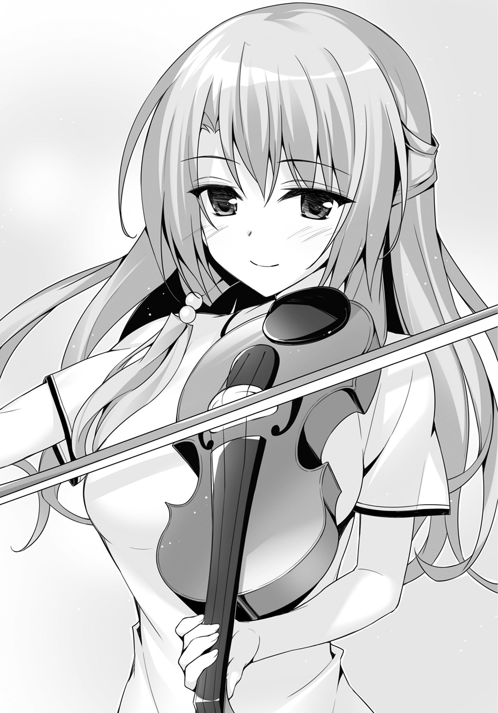
「廻人！」
「大丈夫！ 月佳、気をつけろ！」
飛び起きた廻人はこすれた頰から血がにじむのを感じる。
すでにユーリは守るように乃愛のそばにいる。
流れてくる調べは三大ヴァイオリン協奏曲の筆頭にあげられるベートーヴェンのニ短調作品六一。柔らかながらも雄大さを感じさせる格調高い調べ。
その調べは、あまりにも凶悪だった。
「あと、四五秒だよ」
ユーリが矢を引き絞る。
相性は最悪だ――と月佳は感じた。
ユーリは、威嚇として廻人に一発矢を撃ち込んでから、ひょっこり顔を出そうとしたアリスへと矢を放った。あわてて顔を引っ込めたアリスに、ユーリは声を投げる。
「そこにいなさい、ひな鳥ちゃん。同時性破損修復......すばらしい能力だ。だけれど、距離がつかめなければ直すこともできないだろう？」
月佳は調善効果の切れた廻人にもう一度照射をしてから横に走って逃げる。次は月佳へとコンパウンドボウが向けられていたからだ。
選んだ盾はガードレールだった。
しかし薄い鋼板はユーリの矢をたやすく貫通する。
これは走り回らないといけない――重い、ショットガンを抱えながら月佳は苦悩する。
「............？」
だけれど顔を歪ませたのはユーリもまた同じだった。
廻人のダガーが、ブーツが、修復されているのだ。
アリスは椰子の木に隠れていてこちらを見ていない。
「ざーんねんでした！ アリスはもう、俺の姿が見えなくても完璧に修復できるんだよ！」
「か、完璧じゃないですぅっ！」
「そういうことは言わなくていいんだよアリス！」
完璧ではない。だが、できないとは言っていない。
言葉は信憑性を増した。
ユーリの隙を衝いて廻人は左右にステップを踏んで迫る。
そう――廻人の言ったことはほんとうだ。
この戦いが始まる直前まで、アリスはある調整をしていた。鬼ごっこのとき、廻人の姿が見えず遠隔修復できなかったことをアリスは問題だと考えた。
見えずとも修復する方法――目視で距離を確認するのを、代替する方法は――。
生体響刻武装同士はリンクを結んでいる。
情報は暗号化された上で無線で通信される。その情報送受信に、いくつかのプログラムを混ぜ込んだ。
リアルタイムとはいえ、無線を通じての情報伝達にはタイムラグが発生する。このラグは距離に比例して大きくなる。
リンクしている武装から情報が返ってくる時間を計測し、距離を測定することが可能ではないか――無論、生体響刻武装のそんな使い方はどのマニュアルにも書かれていないし、ゼロからプログラムを組まなければならなかった。
アリスは鬼ごっこの空き時間、コテージに戻ってからは睡眠時間を削ってこのプログラムを仕上げた。
ユーリとの戦いではアリスが先に狙われる。絶対に必要なプログラムだった。
だが純粋に距離だけしかわからないので、方角や角度を勘で入力する必要がある。そのため修復効率は五〇％～八〇％といったところだ。
「そうか。それならば残り三〇秒――金なりともいう時を、無為に空費しようか」
ユーリは廻人を仕留めることをあきらめ、時間稼ぎに入る。
これも、予想できたことだ。
彼らは校内ナンバーワンの実力者。
その「実力」という言葉には、冷徹に状況判断をし、プライドに囚われず戦うことができるという意味も込められている。
ならば――月佳は廻人と視線を交わす。
うん、と小さくうなずきあった。
「おおおおおおおおおおおおおおおお！」
廻人がダッシュしてユーリと乃愛へ接近。
「血迷ったのかい！」
冷静に対応し、ユーリは廻人に矢を放つ。
「月佳！」
月佳が放った紅の光は廻人のブーツをとらえる。これでまた十秒、廻人は走れる。
速度を保ったまま廻人はぐるりと彼らを迂回するように走る。
廻人の影を射貫くように矢が連射されるが、なかなか追いつかない。
「ふうん――なかなか速い、だが」
みしり......ユーリの右腕が軋みを上げた。
筋肉が盛り上がり、彼は右手に矢をつかむ――今までとは違う、三本を。
「！」
円を縮めながら走っていた廻人の正面から、三本の矢。
「くっ――」
刃を振って二本を弾き、スローダウンしながら残り一本をかわす。
ユーリとの距離は、三メートル。
すでに次の矢をつがえている。
「チェックメイト――ッ!?」
「せええいっ!!」
ユーリの背中はがら空きだった。
迫っていた月佳に気づかなかった。
重くなったショットガンをバットのように両手で握って月佳がフルスイングする。
ユーリのがら空きの背中を狙って。
しかし硬いもの同士がぶつかる感触――コンパウンドボウがスイングを受け止めた。
まさか、この攻撃を受け止められるとは思わなかった月佳は一瞬棒立ちになる。
「か弱き者よ――」
風を切って放たれた回し蹴りは、ユーリが近接戦闘においても手練れであるというなによりの証拠だった。
防御もろくにできず直撃を受けた月佳は転がっていき、海岸沿いに設置された膝までの高さの壁にぶつかる。
「う、く――」
息を吐いて立ち上がる。
ひどいめまい。だが、彼女は見た。
廻人が、ユーリではなく乃愛に襲いかかり――刃がヴァイオリンを跳ね上げた瞬間を。
桃色に輝くそれは、弦を一本切られ、くるんくるんと宙を舞う。
廻人は、ユーリを振り返る。
同時に廻人に弓を叩きつけるユーリ。
廻人はダガーで弓を払いのけようとするが調善効果は切れている。
（当てる――）
演奏が止まり月佳の腕が軽くなっていた。
強化されたダガーならばコンパウンドボウをたやすく砕ける。
トリニティの、勝ちだ。
――だからくれぐれも、目立たないで。
耳元に姉の声がよみがえる。
勝てば、一〇点。
月佳は五七点を獲得し、歴代記録である六条誠一郎の五〇点を大きく超える。
多くの人間が彼女の快挙に注目する。
さらにトリニティは災厄技術庁のシューター・チームと訓練を行う。
父はきっと見逃さない。
（私は――家に、連れ戻される......？）
引き金を引く力が入らなかった。
ダガーとコンパウンドボウが激突する。ユーリが廻人の攻撃を上手くいなす。
撃たなければいけないのに。
廻人の背中を押すのが自分の仕事なのに――。
そのとき月佳の視線は空を向いていた。
「え......？」
めまいのせいで身体が背後へと倒れていた。
膝までしかない高さの壁を乗り越えて、彼女の身体は真っ逆さまに落ちていく。
高さ五メートルから砂浜へと――。
Ⅶ
月佳が、落ちる――廻人はそちらを直視していないのに把握していた。
ダガーがコンパウンドボウとぶつかって火花が飛んでいるのに、彼はダガーを投げ捨てた。
「!?」
あっけにとられるユーリを置いて走る――弾丸のように飛び出す。
弱破による邪魔はない。
ひらりと壁を乗り越えるや、
「あ、あ、あ、あ、あ、ああああああああああああああ!!」
壁を蹴って地面に向かって走り、月佳の身体に手を伸ばす。服をつかむ。引き寄せる。頭を抱える。そして、
「うおおおおおおおおおお!!」
壁を真横に蹴って砂浜を滑るように転げた。
熱せられた砂浜を、砂を舞い上げてスライディングしていった。
上から見下ろしたユーリと乃愛。アリスが叫び声を上げて走る。身を乗り出したアリスは、巻き上がった砂がぱらぱらと落ちていくのを見た。
「う......うっ」
「大丈夫か......月佳......」
「あ、う――」
ハッ、として月佳が起き上がる。
下敷きにしていたのは廻人だった。
「砂、って熱いのな......びっくりしたぜ」
「私さっき、落ちて、それから――廻人が、助けに......？」
それには答えず身体を起こした廻人は耳に入った砂を搔き出す。
「負けちまったな」
残りは十秒あった。だけれど、廻人はダガーを路上に放り捨てたままだ。戻って戦うことはできないだろう。
「............わ、私――私の、せい......」
「ちげーよ。チームなんだから誰かのせいとかはナシにしようって前にも話したろ」
「そうじゃない！ そうじゃない......の......」
声が、震えていた。
怯えるように。
彼女の両目から涙があふれ出す。
この南の島には似つかわしくない涙だった。
昨晩、コテージで醜態をさらしたときにも月佳はこんな表情をしなかった。
「ど、どうしたんだよ。どっか痛いのか？」
おろおろとしかできない廻人に、月佳は口を開く――。
すべてを、話した。
昨日、姉と会ったことを。父が自分を戦厄高校から連れ戻す可能性を。高得点で実習を終えるとその可能性が飛躍的に高まることを。
話しだすと一気に言葉があふれ出た。
「私は、このチームを続けたかった......だから、引き金を引けなかった......ごめんなさい、ごめんなさい、こんなの言い訳にもならない......」
涙声で、目元を手の甲でこすって、月佳は言う。
「......私たち、ほんとうは勝てた。それなのに――私があなたの夢を壊してしまった......」
事情を知った廻人は納得するようにうなずくと、
「月佳。この指は何本だ？」
人差し指を突きつける。
「............？」
「何本だ？」
「一本......」
「両手を開いて閉じてみろ。問題ないか？」
月佳はぐっぐっと両手で空をつかむ。
「身体のあちこちに触れてみろ。痛むところはないか？」
言われるがままに腕をさすり首をさすり胴をさする。
「痛くない......」
「そうか」
すると廻人は、
「よかった。ケガしてなくて」
破顔した。
真夏の海にふさわしい、底抜けの笑顔を見せる。
「ありがとな、月佳。話してくれて。家のことなんて言いたくなかったろ」
「......私には説明する義務があるし、それにあなたの夢を奪った責任を......」
「災厄技術庁のシューター・チームとはいつか会えるよ。そんなの気にしてないって。なんかさ......負けたとか、夢から遠くなったとか、そういうことよりずっと......不思議なんだけど俺、うれしいんだ」
「............うれ、しい......？」
濡れたまつげのまま、月佳はきょとんとした。
「月佳はなによりもこのチームを守りたかったんだよな。俺たちのトリニティが好きで好きでたまらないんだよな。それが俺、すげーうれしくて......そう思ったら、負けたこととか、今は全部どうでもよくなっちゃった」
廻人の手が――さっき落ちていく月佳をつかんだときのように、彼女の腕に触れる。
今度は、優しく。
「お前の父ちゃんのこと、いっしょに考えよう。きっといい考えが思いつくよ」
「でも、これは私の家の――」
「月佳がチームを守ろうとしたみたいに、俺もお前を守りたい」
「――――」
真っ直ぐな言葉に月佳の目が見開かれる。
彼女は、とくん、と胸が一度高鳴るのを聞いた。
屈託なく笑うこの少年に、胸が高鳴った。
その音はゆっくりと、しかし確かに、彼女の胸を打った。
夏の気温みたいに彼女の身体がどんどん熱くなっていく。
――あと、砂浜の彼氏は今度紹介するように。
姉の言葉がもう一度、月佳の耳に聞こえた。
ほどなくしてやってきたアリスに、ふたりとも無事だということを伝えるとふにゃふにゃとその場に崩れそうになりながらも、
「よかったですぅ......！」
と心底うれしそうに言った。
「ごめんよ、私が手荒なまねをしたせいだね」
心からの謝罪をしたユーリだったけれど、真剣勝負だ。謝られるいわれはない。
「あなたの甘さはいつかあなたを傷つけるかもね？」
乃愛から言われ、廻人としては苦笑するしかない。
「でも......それこそが、あなたのやり方なのね......六条くんにはない......」
「え？ なんか言いました？ センパイ」
「ううん、なんでもないわ――期待してただけにガッカリしたってだけよ」
「うへ、きっつい。てかセンパイ。結局どっちがレインボーエッグを持ってたんすか？」
廻人の問いに乃愛とユーリが視線を交わす。
「どっちも、よ」
「........................え？」
「どっちもひとつずつ持っていたわ。生徒会の役員をひとりでも倒せるのなら、それだけで一〇点以上の価値があるから」
「ええーっ!? それじゃあ鬼ごっこの夜に、センパイ倒しちゃえばよかったのかー！」
「そのとおりだよ、迅き者よ。あんなふうに手心を加えられて、私もいたく心に衝撃を受けたんだ......嵐の夜に雷に打たれたように、さ」
「でも、ひとりでいることも多かったですよねぇ、先輩たち......」
アリスの当然の疑問には乃愛が答える。
「こう見えて私、空手の黒帯だし、実践的な近接戦闘訓練をみっちり受けているの。生体響刻武装をもらって数カ月のチームを相手に後れを取ることはないわ」
「ひぇぇ......」
自信満々に言われたアリスは、乃愛の顔を見て、それから胸を見て、恐れ入る。
そのときふと廻人が空を見上げた。
「なんか――聞こえる」
ゴォォォォン......ゴォォォォン......遠方で鐘が鳴らされているような――。
その音がなんなのか、廻人にはすぐにわからなかった。ただ、かつてどこかで聞いたことがあったような気がした。月佳もアリスも同じような表情だった。
乃愛とユーリが反応した。
「ようやく彼の者が顕現したようだ」
「ええ――この島の警報は旧式なの。だから詳細のアナウンスもなければ発光体もついていない。ただ、アイツらの来訪だけはきちんと教えてくれる」
持って回った言い方だったが、廻人はピンときた。
乃愛は言う。
「行きましょう――災厄よ」
Ⅷ
ゴォォォォン......ゴォォォォン......と鐘の音が響くと、町は静まり返った。
庭で水やりをしていた人間は家に戻り、外出していた者は手近な家に入り込む。このときばかりは「どんな人間でも建物内に避難する」ことが徹底されていた。
打ち水をした家先、町に唯一ある交差点の信号機、古い自動販売機――どこに目を向けても人はいなかった。
だけれどみんな、息を潜めていた。
これから起きることを――知っていた。
「町の方向ね。急ぎましょう」
走り出した先頭のユーリ、乃愛に続いてトリニティも走り出す。
「ちょ、ちょっとセンパイ、ワケわかんねーっすよ！ どういうことなんすか！」
「滅びの使者が現れた......彼の者を屠るのは、光を持つ我らの責務。違うかい？」
「......あ、すんません、もちょっとわかりやすい言葉で言ってもらっても――」
「満月が潮を空へと引きずり出すように、時が満ちればこの島にも闇が生まれる」
（ヤベェ、全然わかんねえ。この人ヤベェ）
ユーリと廻人では話が進まないと悟った月佳が乃愛に水を向ける。
「星降島は災厄の現れない島だと聞いています。説明を求めます」
「ふだんは、と言うべきね。ふだんは災厄が現れないわ」
「......ふだん？」
「この島には年に一度だけ災厄が現れる可能性がある。災厄の出現条件は次の三つ。ひとつ、大量の人間が唐突に島を訪れること。ふたつ、全島に渡って人間が足を踏み入れること。三つ、争いを起こすこと」
「それってもしかして――『星降島の洗礼』の目的って......」
「ビンゴ。一五年前に星降島に寄港した客船についてニュースを知っている人は？」
廻人もアリスも首をかしげたが、月佳は知っていた。
「ドングヮ・オーシャン・シップ――六〇〇人を載せた中国の豪華客船でしたね。東京新都周辺が台風通過中だったため、一時的に星降島に寄港したとか......でも、その程度の小さなニュースだったはずでは」
「ええ。でもその後、船が向かったのは本来の目的地の東京新都ではなく、上海だった。つまりとんぼ返りした――させたのよ。日本政府が」
「政府が？」
「当時、税関がないから乗客は船内に閉じ込められた。でも、乗客は勝手に島に上陸したの。二日に渡って彼らは観光をした。こういう問題に対処するのは警察だけど、この島にあるのは駐在所がひとつだけ。応援を頼んでも台風のせいでヘリも出せない。住民は乗客の傍若無人さにピリピリして、争いが頻発したの。それで――問題が起きたのは、三日目」
ゴォォォォン、ゴォォォォン、と音が近づいてくる。
「災厄が、出現した」
星降島には今まで災厄が出現したことは一度もなかった。その時は念のためと置いておいた災厄警報が役に立ったのだ。
「日本政府は客船が災厄を持ち込んだと考え、国外退去を命じた」
「そんな話、聞いたことがありません」
「幸い被害者は出なかったから、公にする必要もなかった。中国が日本に災厄を持ち込んだのだとしたらとんでもない国際問題になる。日本も確たる証拠がない限り責任を追及することができなかった。中国国内でも災厄に関わる問題はすごくセンシティブだから」
「確たる証拠......災厄が出現する条件を見つけたんですね」
「災厄技術庁の生態研究課がいくつかの条件を『仮説』として立てた。実験を繰り返し、今の三つに至ったの。一昨年以来、毎年この災厄は出現する――させているわ」
やがて五人は町へとたどり着く。
誰も表通りを歩いていない町に、ゴォォォォン......と重苦しい鐘が響く。
「どんな災厄なんすか」
廻人はたずねた。
「シークレット。無色透明、形状は不明。過去、五回出現し、すべて取り逃がしている。災厄レベルは１ｓｔ」
１ｓｔなら――。
ペルセクチオーネ以来、初めての実戦。
髪の毛の逆立つような興奮が廻人を襲う。
「......俺たちも出て、いいんですよね。っつーか、出ます!!」
ぐっとダガーを握りしめる廻人の手に乃愛が触れた。
「なら、こうしましょう。一度武装を解除して」
「え、で、でも、武装を解除したら」
乃愛はふんわりと笑った――だけれど廻人は気づく。瞳の奥に、けして溶けない氷のように冷たい光が漂っていることを。
この人は――災厄と戦うことに、冷めている。徹底的に冷めているのだ――。
「討伐班構成人数は最大五人。私と宮野くんをトリニティに組み込むのよ」
討伐班の再構成は簡単なのだと廻人は初めて知った。
響刻構成体を触れ合わせ、声をそろえるだけ。
青色の響刻構成体は廻人だ。紅は月佳。金色はアリス。桃色は乃愛。翡翠はユーリ。
五本が、ちょうど星の芯を描くように中央で先端を触れ合わせる。
「武装連環！」
このとき――ほんの一瞬だけ響刻構成体が光を放った。
だけれどそれ以上に廻人は皮膚感覚で知った。
今、つながった。
ふたつも年上で、廻人よりも様々なことを知っている生徒会のふたりと、つながったと。
「武装召喚！」
五つの武装が展開したときにも、これまでとはまったく違う思いを抱いた。
武装が発する光に親近感を覚える。
頼るべき、頼られるべき相手だという確信が宿る。
乃愛のヴァイオリンだけは傷が深かった。廻人のダガーによって半壊しているのだ。
だがそこへ、金色の光がヴァイオリンに染みこんでいく。
増えた立体映像に目を走らせながらアリスがすさまじい速度でキーボードを叩く。
「ウソ......直った」
こればかりは乃愛も驚いたらしく目を見張っている。
「あ、あのぅ......何度かお友達の弱破さんの武装を直したことがあったので、パッチを流用してみました。すみませんです。時間がなくて、完璧にはできないですけど――ふぁっ!?」
「なにこの子!? すごぉい！ 『黄金獅子』にも欲しいわ！」
両腕で抱きつかれたアリスが乃愛のメロンに押しつぶされて呼吸困難に陥っている。
「センパイ、アリスは俺たちのなんであげないっすよ。っつーか、災厄いるんでしょ？ さっさと行きましょうよ」
「――それもそうね」
乃愛に解放されてアリスがよよよと体勢を崩したが月佳に受け止められた。
「若き鷹よ、その翼を広げるときだ」
ユーリの視線はすでに災厄がいるであろう方角、町の中へと向けられていた。
「行きましょう。あなたたちにしかできない最後の課題よ」
Ⅸ
走り出しざま廻人がたずねる。
「センパイ！ シークレットの特徴とかなんかあんすか!?」
「討伐記録は一回だけ。そのときは破片が海に散らばって回収できなかったわ――一昨年、災厄と知らず六条くんが斬ったの」
「会長が......！」
「生態研究課の希望は『捕獲』だけど、討伐が最優先。そしてもうひとつ重要な特徴がある。この災厄は人を襲わないの。逃げることに特化している！」
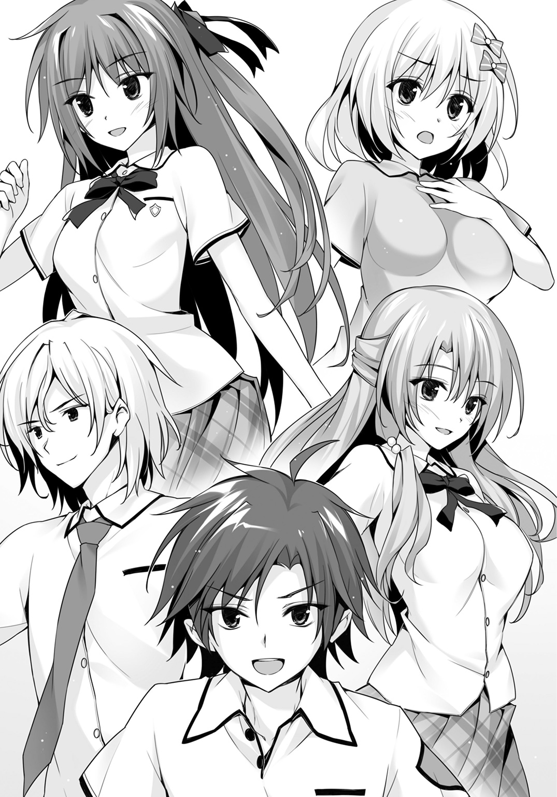
前方のアスファルトがチリッと音を立てて破片を巻き上げた。
目をこらさなければ見えないが、なにか陽炎のようなものがうごめいている。
「いたぁぁぁぁぁぁぁぁぁぁぁあああああああああああああ！」
廻人が全力で突っ走ると足下のブーツが割れる。
割れるその場から黄金の光が入り込み、修復していく。
アリスは、落ち着いていた。
廻人の顔を見ると胸がどきどきして頭がぽわっとしてしまう。
だから不安だった。
チームとして活動したら、自分が足を引っ張ってしまうかもしれないと。
でも――大丈夫。
表示される大量の情報を処理しているとき、心は穏やかになれる。
廻人のサポートをできる自分が誇らしくて。
夢を追いかける廻人に手を貸してあげたくて。
今はただ、コードを打つ。
ショットガンが紅の光を放つ。
引き金を引くのに、なんのためらいもなかった。
廻人の両足はブルーと紅の光が混じり合い、彼の身体は羽が生えたように軽くなる。
さっきとは違う。もう、外さない。
廻人を見つめていると心が熱を持ったようになる。
むちゃくちゃな速度についていくために彼の一挙手一投足を見つめなければいけない。
思いがあふれてきて目元がじわりとにじむけれど、冷静な自分がなんとか勝っている。
今は、廻人をサポートしなければ。
バカで、無謀で、だらしなくて――誰よりも優しい、彼を。
「標的は小さく見えにくい――私は彼の者と距離を詰めようか」
ユーリもまた常人ではない速度で走っていく。
「いい連携ね！」
立ち止まった乃愛がヴァイオリンを肩に載せる。
弓が弦に触れ、清らかな音を奏でる――先ほどとは違う、軽やかさを含んだ曲調だった。オーストリアの作曲家フランツ・フォン・スッペの「軽騎兵」序曲だ。
廻人のようにスピードで相手を翻弄する戦い方にふさわしい曲ではあったが、あくまで彼女の演奏する音楽は、敵に影響する。
迫る廻人に気づいたシークレットは地面を這って逃げていく。だが音速には負ける。その身体は速度を緩める。茂みに飛び込もうとした瞬間、
「おおおおおおおおおお！」
廻人は前方に回り込み、
「ライジングキィィィィック!!」
ブーツで思い切り蹴り上げた。
蹴っ飛ばした瞬間、めきょりとブーツのひしゃげる感触。
だが、災厄は軽い。
「――射撃」
すでに矢をつがえていたユーリは、三本の矢を一気に放つ。
空を切り裂いて迫る閃光のような一撃。
「!?」
その瞬間、シークレットの姿が見えた。
いや、見えたというより、あらゆるものを映した――身体全体が鏡面となったのだ。
形状は丸く、一方がなだらかにふくらみ、もう一方は凹んでいる。大きさは人間が一抱えする程度だ。
尾が長くピンと伸びていた。
そして足が何本か生えている。
この形を見て――月佳は連想する。
カブトガニみたい、と。
シークレットに矢が触れた瞬間、
「避けろッ！」
吠えるように発せられたユーリの声。
矢が、跳ね返った。
光が鏡に反射したときのように。
廻人の眼前に矢が迫る。
当たる――数センチのところで廻人は動いていた。
「こんなの聞いてねぇぇぇぇええええぞぉぉぉぉぉ！」
地面に落ちていくシークレット目がけて廻人が突っ込む。
右手に握るダガーは紅の光を纏って紫へと輝きを変える。
シークレットはしかし、着地の瞬間またも透明に戻り走り出す。
空を切る廻人の攻撃。
「右ぃっ！」
透明とはいっても完全な透明にはならない。向こう側がゆらいで見える。
廻人はめざとくシークレットをとらえると身体をかがめ回し蹴りを放った。
ブーツとシークレットがぶつかるや、重い金属同士のぶつかった音が響き渡る。
「エクセレント」
そのとき廻人が目にしたのは、宙に舞い上がるシークレットでも、ヴァイオリンを弾き続ける乃愛でも、リチャージが完了し再度ショットガンを撃とうとしている月佳でも、キーボードを一心不乱に打ち続けるアリスでもなかった。
ユーリのコンパウンドボウは、足下に置かれていた。
両腕を頭の後ろに回し、身体をひねりざま左脚をゆっくりとあげる。
「ピッチャー大きく振りかぶって......」というアナウンスが廻人の耳には聞こえてくるようだった。
しならせた右腕を振り抜き、全身の力を載せてユーリが力投を見せた――。
「ハアアアアアア！」
投げたのだ。
レインボーエッグを。
「えええええええええええええええええ!?」
廻人のアゴはあんぐり下がって、きっと眼球も五センチくらいせり出たに違いない。
エッグは――複雑な色に塗られたエッグは、びゅおっとすさまじい音を立てて直進。シークレットに命中するや、蛍光ピンクの液体を散らせた。
それがペイントボールだと知った廻人は――すぐシークレットのそばにいたものだから頭から染料をかぶってしまう。
《ギイイイイイイイイイエエエエエエエエエアアアアアアアアアアアア》
鉄の爪でガラスをひっかくような不快極まりない叫び声。
シークレットが放った声だと気づくまでには少しだけ時間が必要だった。廻人は自分の身体に降り注いだ液体のせいで視界を奪われていたからだ。
「追って、廻人！」
手の甲で目元をこすった廻人は、すでに五メートルほど先に逃げ出しているシークレットを見つけた。ピンクの液体にまみれ、ご丁寧に足跡までついている。
アスファルトを削って廻人が飛び出すと、一歩で届く。
両腕を差し出す。
捕獲してやる。
だけれどその短い時間に、廻人の背筋に虫が這うような気味悪い感覚があった。
今まで討伐記録が一回しかないこの災厄が、そんなに簡単に捕まるのか？
悪い予感を裏付けるかのようにシークレットは反応した。
長く伸びた尻尾が――急にふくれあがる。
「！」
廻人は身を翻して真横に跳んだ。
直後、風船が割れるような音とともに甲殻の破片が周辺に飛び散る。
「うっぐううううう！」
地面を転げた廻人は両腕で顔をガードしていたが、腕と頰、それに制服を突き抜けて切り傷を負う。
「廻人!? 大丈夫!?」
「でぇーじょーぶ！ 一発こっきりの自爆技だろ、もう使えねぇ！」
両手をアスファルトに突いて立ち上がった廻人が走り出す。
シークレットは先を行き、角を曲がっていく。
その先は。
「海かよッ......！」
廻人はシークレットに続いて、海までの直線へと出た。
単独で追った――それが明らかな失策だとは気づかず。
Ⅹ
災厄までの距離は三〇メートル。
岸壁までの距離は一〇〇メートル。
「お、お、お、お、お、おおおおおおおおおおおお!!」
土でも掘り起こすようにブーツがアスファルトをえぐる。
廻人の速度は一般人なら目では追えないほど。
だがシークレットもまたただの生命体ではない。ただの迅引ならば追いつけないほどの速度で、一直線に岸壁へと駈ける――その先は海だ。
追いつける。
廻人は確信していた。
こちらはただの迅引ではない。
響刻値ＳＳだ。おまけに調善によって武装の能力は高められている。
デッドヒートは岸壁まで残り五〇メートルを切る。
身をかがめる。
手を伸ばす。
あと、数センチ――。
「!?」
バキン、と右足が硬いものを踏んだ感触。
直後に右足からふくらはぎへ、膝へ、腰へと即時に伝わる倦怠感。身体の重さ。
割れた。
ブーツが。
アリスがいるのに、どうして――。
全力疾走の廻人はゼロコンマ一秒、修復作業が遅れるだけで破損が始まる。
「......どうして......!?」
アリスは画面に表示される廻人との概算距離を元に修復を行う。
だけれど破損状況を示すモニターは、一三％......一八％......二五％と高まっていく。
「どうして、どうして、どうしてっ!?」
そして、廻人がちょうど災厄に手を伸ばしたとき、武装使用者に影響が出る閾値、三三％をオーバーした。
バキン。ブーツに大きくヒビの入った音が耳元で鳴ったように聞こえた。
「どうして――」
目の前が真っ暗になる。
廻人の武装が、壊れる。廻人の武装を直すことだけが自分にとっての誇りなのに。
空気が肺に入ってこない。
汗腺という汗腺から温い汗が噴き出る。
「距離の値、一七％減らして」
囁かれた声に、我に返る。
「月佳......ちゃん......？」
「シグナルがそこの民家を迂回してるから余計に出てるの。急いで、アリスちゃん！」
電波のラグという計測から求められる距離と実際の距離に開きが出ているのだ。
このシビアな復慈の作業においてはとてつもない誤差となっていた。
「あ――は、はいぃぃぃ！」
猛然とアリスはキーボードを打ち始めた。
その横で月佳は見つめる――交差点のカーブミラーを。
駈けていく廻人の後ろ姿を。
身体に力が入らなくなった三秒でシークレットとはかなりの距離ができる。
だが、廻人の武装はすぐによみがえった。
なにが起きたのかはわからない。
「さすが――ウチの復慈はめちゃくちゃ優秀だぜ！」
もう一度シークレットを追う。
岸壁の前で追いつく――アリスの修復できる有効半径一〇〇メートルを超えていた。
ブーツの破損が始まる。
だが今回は廻人にも予測済みだった。
「うおおおおおおおおおおおおおおおおおおおおおおおおおおおおおおおおおおお!!」
ブーツを破壊するに任せて廻人は跳んだ。
右のダガーを捨てた。
ヘッドスライディングの要領でシークレットに右手を伸ばした。
岸壁の端まで三メートル。
その先はエメラルドグリーンの海。
指先が災厄に触れた。
「――――」
それは、ただの不運だった。
廻人の右手はシークレットに触れていた。
だけれど塗料が災いした。
ぬるりと指先が滑り、シークレットはつるんと岸壁から海へと躍り出る。
失敗――。
「まだ......まだだァァァァァアアアアアアアア！」
左手に握りしめていたダガー。
正面からもろに地面に叩きつけられた廻人は一回転する遠心力を使って宙に浮くシークレットに狙いをつける。
ダガーを投げる――。
そのとき、ダガーの刀身に――薄くなった紅の光がまとわりつくのを廻人は見た。
はるか後方、カーブミラーの反射を使ってショットガンを放った月佳がいた。
「当てなさいよ――廻人！」
光は廻人の力だった。
背中を押してくれる、ミッションを成功に導いてくれる、大切な仲間の光だった。
放たれた、ほんのすこし紫がかったダガーは空中で一回転する。
シークレットの装甲に触れる。
割れる。
突き刺さる。
びくんっ、と死の間際の硬直を見せ、シークレットは着水する。
水しぶきを上げてシークレットは海中に沈む。
泡と、ピンクの塗料が水中に漂う。
災厄レベル１ｓｔ、シークレットの討伐に成功した瞬間だった。
Ⅺ
光を失ったシークレットは水中から引き上げられた。
灰色の身体に蛍光ピンクの塗料が塗られている姿だけ見るとこのサイズの災厄を討伐するのにどれほど苦労したのかと考えてしまうけれども、無色透明である敵はそれだけ厄介なのだとわかった戦いでもあった。
ダガーを回収した廻人はようやく武装の解除を行った。
「よかったなくしたかと思ったぜ」
「前から思ってたけどダガーは近接用武器であって飛び道具じゃないのよ......」
「細かいこと気にするなよ月佳！」
「相変わらずバカ」
ふぅ、と小さくため息をついた月佳だったけれど、表情はどこか柔らかかった。
岸壁へと引き上げられた災厄。集まった住民、それに騒ぎを聞きつけた一年生たちが遠巻きに見ている。
乃愛が彼らに向かって小さく手を叩いた。
「皆様、今年の災厄も討伐しました。お祭りの準備を始めていただいて問題ありませんわ」
すると「お、そうだった」「準備さっさと進めるぞ」「もう大体終わってるけどねえ」などと口々に言って住民たちが去っていく。
残された戦厄高校の生徒たちにも乃愛は告げた。
「これで......ほんとうのほんとうに、すべての校外実習プログラムは終了よ。携帯電話も返すし、明日の午前十時の撤収までは完全な自由時間とします。みんな、遊んでいいわ」
わぁっ、と生徒たちが歓声を上げ、やってきた教員の持っていたバケツ――携帯電話が詰まったバケツに群がる。
そして町に、海に、山に、散らばっていく。
意を決した女子生徒たちが集まってユーリを連れ出していく。
男子生徒はそれを見習って乃愛にも近づこうとしたが、彼女の周囲には町役場の人間が多くて近づけない。
「あ～、俺も海に入りてぇなあ」
ピンクの塗料まみれの廻人が腕をこすると、アリスがくすっと笑った。
「廻人くん、今回も大活躍でしたねぇ」
「アリスだって直してくれたじゃん。それに月佳も最後に調善効果乗せてくれたし。ふたりがいなかったらどうなってたかわかんねぇよ。やっぱ俺たちは、三人そろってトリニティ！ いいチームだよな！」
「............」
アリスは微笑む――その微笑み方は、うれしそうでありながら、どこか寂しそうでもある複雑な表情だった。
「シャワーを浴びる前に、もうひとつやることがあるわ」
乃愛が近づいてきた。彼女の指した方角は――自衛隊基地。
一機のヘリコプターが着陸しようとしていた。
災厄技術庁生態研究課――通称「エコセク」はその名の通り災厄の生態を研究し、資料化する部署である。これらデータは世界中で共有され、ディザスター・シューターが災厄を倒す際にきわめて有益な情報となる。
いくつかの「課」が災厄技術庁には存在するが、生態研究課は最も「平和」な部署であると言えるかもしれない。たとえば応用技術課は一課から四課まであるが、災厄のパーツを元に生体響刻武装の製造技術を研究している。これら武装は軍事機密であるため、基礎理論以外は国を超えて共有されないのである。
そんな生態研究課の課員を乗せた専用車両が――東京新都で見るのと同じ灰色の車両だった――岸壁にやってくる。
ワンボックスカーのスライドドアが開く。
「ちょ、ちょっと、課長！ ヘリ酔いしてる場合じゃないですよ！ 着きましたよ！」
「......うぐぐぐ......」
「ああああああ吐かないでください吐かないで！ 課長の念願だったじゃないですか、シークレット！ 現物が目の前にあるんですよ！ 死んでますけど！」
白衣を身につけたポニーテールの女性が、同じく白衣の男性を引っ張り出す。
男の腕をぐるりと自分の肩に回し、担ぎ上げるように歩いてくる。
「あ！ 東京校の生徒さんですね！ このたびは討伐お疲れ様でした！」
ポニーテールの女性が廻人たちに挨拶する。やたら元気のいい、若い女性だった。
「......うぐぐぐ......」
「え、シークレットはどこかって？ あー............あそこだ！」
彼女が、海から引き上げられたまま、でれんと寝そべっている災厄の死体を指差すと、うつむいていた男が顔を上げた。薄いメガネの奥、細い目をぺかーっと開く。
支えてくれていた女性を突き飛ばし災厄に駈け寄る。「ぎゃあ」と叫んで女性は背後にぶっ倒れたがそんなものお構いなしだ。覆い被さるようにして災厄を様々な角度から舐めるように観察する。
「おおおおおおおおおシークレットおおおおおおおおおおおお！ これか！ これがシークレットなのか！ こんな、こんな、ああっ......死んでる......死んでいる......！ だが死んでいる姿もまた美しい......！」
あ、こいつはまともに関わっちゃマズイ相手だ、と廻人は気がついた。
そのときだ。
「あれ......？」
アリスがぽつりとつぶやいた。
「ひょっとして......叔父さんですかぁ？」
シークレットに夢中だった男が、動きを止める。指でメガネの位置を直し、
「姉貴んとこのアリスちゃん？ こんなところでなにをしているんだい？ ハッ――ま、まさか、君、このシークレットを............欲しいのか？」
「い、要らないですけど」
「あげないぞ！」
「要らないですぅ！」
意外なところで接点が見つかった。
災厄技術庁生態研究課課長、空木航生。
それが彼の所属と氏名だった。
シークレット討伐についてひとしきり説明を聞いた空木は言う。
「なるほど、とても興味深い話だった。では、うん、そうだね。そろそろこの子といっしょに帰ってもいいかね？」
さっきからずっとちらりちらりとシークレットの死体を見ていた。
「......これ、アリスちゃんの叔父さん？」
「は、はぃ」
「......意外ね」
「どうゆう意味ですかぁ......月佳ちゃん......」
姪との再会を喜ぶわけでもなく気になるのは災厄の死体なのだ。変人にもほどがある。
「討伐についての報告は私からしておきますが――以前からの取り決めのとおり、すべて非公開とします」
乃愛の言葉に、廻人が首をかしげる。
「あの、非公開ってなんすか？」
「シークレットの存在は、その名の通り秘密にされるのよ」
「それじゃ、私たちが倒したことも伏せられると？」
月佳が鋭い声でたずねると、
「ええ......そのほうがあなたにとっても都合がいいのではなくて？」
挑発的な声で乃愛が返す。
月佳は思いがけない反撃に「う」と口ごもる。
でも、なぜ――乃愛が月佳の事情を知っているのか？
島内のレストランで姉と乃愛、仁科が遭遇していることを月佳は知らない。
そこで女同士のどんな会話がなされたのかも。
「俺は別にいっすよ。でもどんな災厄だったのかは知りたいかな」
「うん。うん。いいよ。研究が終わったらレポートを送るよ」
安請け合いする空木に、ポニーテールの研究員がぎょっとした顔をする。
「ちょっと勝手にそんなことを言って！ 知りませんよ!?」
「じゃあ僕はそろそろ......」
空木は研究員によって箱詰めされるシークレットのそばに寄ると、そそくさとワンボックスカーへと戻っていく。
なにはともあれ、ようやく終わったか――と廻人は息をついた。
「そうだ、空木課長」
車内に入ろうとしていた空木を乃愛が呼び止める。
「今回のことでひとつだけお願いがあるんですが」
「なんだい？ たいしたことはできないよ......」
早く研究所に帰りたい空木が不機嫌そうに答える。
ちらり、と乃愛が廻人に視線を送った――。
「シークレットを討伐した彼ら、第七二討伐班トリニティを、災厄技術庁のシューター・チームのトレーニングに招待してくれませんか？ こっちも、秘密裏に」
え......と廻人が硬直し、言葉の意味を理解するよりも先に、
「そんなの簡単だよ。招待してあげる」
空木は言うと車に乗り込み、去っていった。
「――――」
「――――」
「――――」
廻人が、月佳が、アリスが、お互いを見る。
「シークレット討伐、手伝ってもらったから......これは私からのご褒美よ」
乃愛がぱちりとウインクした。
「うおおおおおおおおやったぁぁぁぁあああああああああああああ！」
廻人が両手を握りしめて快哉を上げる。
「......よかったじゃん、廻人」
乃愛への感謝と、貸しを作ってしまったような複雑な気持ちと、純粋に廻人の願いが叶ったうれしさとがない交ぜになって月佳が言う。
「すごいです......すごいです！」
無邪気に喜ぶアリス。
「ほらほら。喜ぶのもそのあたりにして――あなたたちも遊んできたら？」
すると町から、太鼓の鳴る音が聞こえてきた。
今日は、星降島のお祭り。
校外実習、最後の夜だ。
Ｅｐｉｌｏｇｕｅ
太陽がゆっくりと沈んでいく。都道のガードレールに座って廻人はぼんやり夕日を眺めていた。森へコウモリが群れをなして飛んでいく。廻人の田舎も、同じだった。
（海のそばの暮らしもいいな......風が柔らかいや）
この数日で日に焼けた顔の廻人はそんなことをぼんやり考えていた。
「お待たせ」
背後から声が聞こえた。
廻人は振り返り――言葉を失った。
「ちょっと時間かかっちゃった」
見たことのない月佳が、いた。
黒と紫の混じり合った浴衣を着ていた。金魚がアクセントとして入っている。淡い紫の帯は落ち着いていた。
紅の髪はアップにしていてかんざしでまとめている。白いうなじが大人びて見える。
「はぅぅ......着慣れないですぅ」
アリスは白地に青い朝顔の柄の浴衣だった。ショートヘアは特にいじっていないからふんわりと肩にかかっている。下駄の赤い鼻緒がかわいらしい。
「ず......ずるくね？ 俺だけＴシャツにハーフパンツなんだけど......」
「こういうのは女の子の特権なんだから。それより――言うことあるんじゃないの？」
月佳は言うとくるりと回ってみせた。
「お、おお......すげーカワイイ」
ド直球の言葉に月佳はびっくりして、
「え!? あ、あ、ありがと......」
頰を染めた。
「アリスもすげー似合ってるよ。びっくりした」
「ひゃうっ!?」
月佳が褒められて、うれしそうな寂しそうな顔をしたアリスだったけれど、同じく廻人に褒められて変な声が出た。
「よっしゃそれじゃ行くか！」
廻人が歩き出すと月佳もその横に立つ。
アリスはふたりに気づかれないようこっそりと両手で頰を覆ってぴょんぴょんぴょんと三回飛び跳ねた。
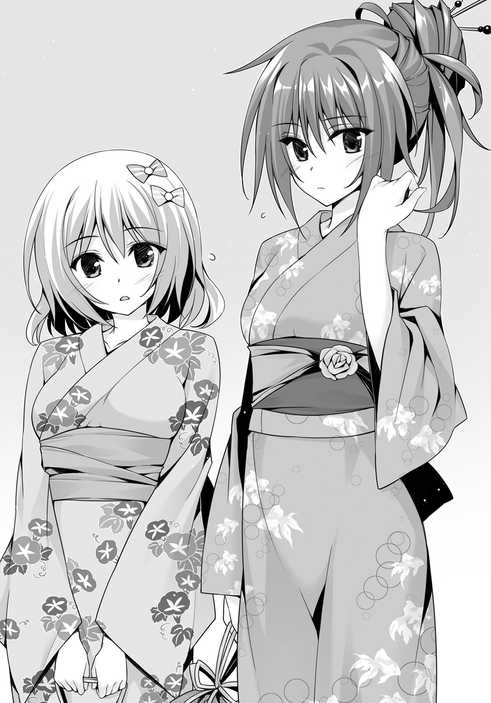
「やった......やりました！」
小声で言ってガッツポーズをする。
「？ どした、アリス」
「ひゃう!? い、今行きますぅ！」
三人は町へと向かった。
「おお！」
星降島のメインストリート――とは言っても十分も歩けば端から端まで抜けてしまうようなものではあったけれど、商店や喫茶店、居酒屋や土産物店、それらの店先には屋台がずらり並んでいた。
屋台はそれぞれの店舗が工夫を凝らしたものになっている。
水飴に入っている果物の中にはドラゴンフルーツもある。
かき氷のシロップにはパッションフルーツやシーソルトなんてものまで。
なぜか豆腐屋も屋台をやっていてカリッと焼いた厚揚げを出している。
東京新都とは違ってお祭り専門の屋台がないため、運動会に使うような天幕を屋台代わりにしている。無駄に派手な装飾もない。一種独特な雰囲気があった。
「ひぇぇっ!?」
居酒屋の出している屋台で「星降カクテル（ノンアルコール）」と書かれている飲み物を買ったアリスはストローでちゅぅぅと飲んだ瞬間、身体を丸太のように凍りつかせて卒倒しかけた。
廻人が背後に回り込んで身体を支えると、
「こ、これ......あ、ああっ、星が、星が見えますっ......！」
どうやらとんでもない刺激物が入っていて、飲むと「星が降る」ように見えるらしい。
「おいおい......」
廻人が屋台の店主にジト目を向けるとよく日に焼けたオッサンが親指を立ててニッと笑ってみせた。前歯が一本なかった。
「大丈夫か、アリス」
「あ、はい――」
アリスは背中から廻人にもたれかかっている自分に気がつくと、
「だ......だだだだだ大丈夫......れす......」
熱湯に放り込んだエビよりも早く真っ赤に染まる。
（アリスちゃん......うらやましい――――ハッ、ち、違う！ そんなの、全然うらやましくなんかない！）
月佳はひとりぶんぶんと顔を横に振ったりしている。
射的の屋台には人だかりができていた。なんだろうと見てみると、店主が泣きながら「もう止めてください、止めてください」と泣きついている。ユーリの放つコルク弾は百発百中の精度でぬいぐるみを、プラモデルを、キャラメルを、叩き落としていく。ユーリを取り巻いていた女子生徒たちがキャーッと歓声を上げる。
型抜きの屋台では女子を数人引き連れた輝井がなんとかうまく彫ろうとしては失敗し、逆に直角が正確無比の型抜きを披露して店主を唸らせている。
隣接する公園の中央広場は盆踊り会場になっており、乃愛を中心に、生徒だけでなく町役場の人間も集まっていた。どうやらいっしょに踊りましょうというお誘いだが、ここはダンスステージではなくて盆踊り会場である。ちなみに言えば一番熱心にアピールしていたのはヘラだ。どうやっていっしょに踊るのかと廻人が興味津々の顔で見ていると、廻人に気づいた乃愛がうれしそうに手を振った。手を振り返そうとした廻人の両腕を、右が月佳、左がアリス、がっちりと固定されて、「え？ え？ なに、なんなの!?」ずるずると引きずられるように広場から連れ出される。
日はすっかり沈んでいた。
人出もそれほどではないし、店の数も多くない。歩けばすぐに終わってしまう夏祭りの会場――だけれど、楽しかった。今、世界が、災厄の脅威によって緊張状態にあることも、自分自身が戦いの準備を着々と進めていることも――忘れることができた。
「そろそろね」
月佳が言った。
「なにが？」
「行きましょう――砂浜が会場だから」
三人が砂浜に着いたころには他の客もぞろぞろとやってくるところだった。
海に外灯はないから町の明かりが心細く客の背中を照らす。
月佳とアリスの足下は浴衣に合わせた下駄だ。
砂浜には入らず、入り口にあたる階段のそばに陣取った。
打ち寄せる波に月の光が銀色に映じる。
なにより圧巻なのが――星だ。
「ああ......」
田舎育ちで星を見慣れている廻人ですら声が漏れた。
月が出ているにもかかわらず、この量の星。
鬼ごっこをしたり夜戦をしたりと、落ち着いて見る余裕がなかった星空。
今、降ってくるほどに数多の星が頭上にきらめいている。
遠くで盆踊りの音楽が聞こえ、正面からは波の打ち寄せる音。
緩やかに夜風が吹いて三人の髪を揺らす。
そして、
「あ――」
誰かが、声を漏らした。三人ともだったのかもしれない。
海上にあがった一輪の花――。
青に、紅に、金に輝く花。
この時間から始まる、花火大会。
歓声が上がる。
生徒たちにとっては、短くも長かった校外実習のフィナーレだ。
アリスは身震いするような感動に浸っていた。
正直に言えば、つらかった。体力的にかなりぎりぎりだった。今も油断すればカクンと眠ってしまいそうだった。
それでも、来てよかった。
月佳のことをいっぱい知ることができた。彼女が抱えている悩みも。彼女が自分をどれほど信頼してくれているかも。
それに――生まれて初めて知った。
誰かを好きになるということが、こんなにも自分に力を与えてくれることを。眠くて眠くてどうしようもなくても、浴衣を着込んで夏祭りに出ようと思えた。
ちらりと右を見ると――廻人がいる。
両目をいっぱいに開いて、花火を見つめている。
肝試しの夜、廻人が――自らの得点を、願いを、断ち切ってまで助けに来てくれた。「ただの勘」と言っていたけれど、それでも自分の身を案じてやってきてくれた。
あのときの廻人を、ずっと忘れない。
花火を無邪気に見つめている廻人の姿も、忘れない。
アリスは、廻人と同じ夜空を見上げる。
月佳はこのお祭りの間も、純粋に楽しめない自分がいることに気づいていた。
廻人とアリスに、父のことを話した。
ふたりは協力してくれると言った。本心から。
だけれど、父の恐ろしさを身をもって知っているのは自分だけだし、第一、家のことまでふたりに負担させたくないという思いがある。
（......私がトリニティを抜けることが最善なんじゃ......連携をもっと高めてしまう前に......他の調善なり他のシューター・タイプのメンバーを入れるなり......）
それに。
ちらりと左を見ると――廻人がいる。
姿を目に収めるだけで自分の鼓動が速まるのがわかる。そしてこの感情の正体も、さすがにわかった。
（......私は......恋をしたんだ）
この――田舎者で、バカで、向こう見ずで、絶対にあり得ないと思っていた少年に。
（よりによって、なんでこいつなのよ......私のバカ！）
コントロールできない自分の感情の首を（もし首があるなら）絞めてやりたい。
月佳だってわかっている。
他の男子にはないものを廻人はいくつも持っている。
田舎者らしく純粋で、バカがつくほど優しくて、向こう見ずなほどの勇気。
あのとき――路上から砂浜に落ちたとき。
このまま首の骨を折っても仕方がないかもと思った。
廻人が、夢をつかもうと戦っていた。その背中を押すのが自分の仕事だった。押せるのは、たったひとり自分しかいなかった。
だけれど、引き金を引くのに迷った。
その罰が下ったのだと。
廻人は自分に手を差し伸べた。身を挺して守った。いっしょに悩もうと言った。
（次は私があなたを守る番）
だから、月佳は誓う。
（この思いは......秘めなきゃ。誰にも言わない。気づかせない）
口にしてしまえば、廻人に伝えてしまえば、トリニティの三人の関係は崩れてしまう。
そうなることが一番の裏切りだと月佳は知っている。
かけがえのない友だちのアリスも、恋する気持ちを教えてくれた廻人も、裏切れない。
絶対に――。
そんな女子ふたりの気持ちになんてまったく気づかないで廻人は花火を見つめていた。
たった四日しか経っていない。
だけれどやたらと密度の濃い四日間だった。
トリニティとしてまた一回り成長できたと思えた。
直角や輝井と共闘できたのもよかった。
生徒会のふたりの実力を肌身をもって知ることができたのも収穫だ。
逆境によって人は成長する――廻人はまさにその典型だ。
もっとも、逆境を逆境と思っていないところがある。
だからこそ身近にいるふたりの変化にも気づかなかったりするのだけれども――。
「楽しみだな......」
憧れていた、目指していたあの人に会えるかもしれない。
こんなに早く。
楽しみにするなというほうが無理だ。
「戦闘バカ」
月佳は言い、
「いつになるんですかねぇ......夏休みの予定、なにも決めてませんでした」
アリスが思いついたように口にする。
そう、夏休みに入ってからまだ四日しか経っていない。
高校一年の夏は――トリニティ三人の夏は、始まったばかりだ。
あ と が き
肩肘張らず、ゆったりと毎日を送りたいものである。技術が進化して世の中はこんなに便利になった。手元のツルツルした板をのぞき込めば明日の天気や現在位置がわかり、電話もかけられ写真も撮れる。掃除機なんか勝手に動いて床をキレイにする。今やネットのない時代を想像することすら難しい。けれど、日々の忙しさは変わらない。仕事はむしろ増えて、新種の仕事まで生まれてくる始末。新種が発見されるのは生き物だけではない。人間は、新種の仕事まで探り当てる。世の中が便利になったのに、人間が窮屈さを感じるのはまったく寂しいことではなかろうか。目の前の仕事をこなさなくたって明日世界が滅びるわけじゃない。窓を開けてぼんやり夜空を眺め、息でも吸えばそれだけで贅沢な時間なのだ。だから我々は、ゆったりと過ごせばいい。肩肘張ったってどこかにぶつかるだけだ。このあとがきのスペースを見てご覧。肩肘張るようなスペースもない。なんて窮屈な世の中！
三上康明
著者紹介
三上康明 みかみ やすあき
小学校のプールの授業は見学と相場が決まっていた根っからのトンカチだがどうしても海の話が書きたくて書いてしまった。やっぱりキャラクターたちは泳がないのである。
執筆中ＢＧＭは今作にぴったりの、UVERworld「シャカビーチ～Laka Laka La～」
illustration
おりょう
イラストレーター。原画家。ツイッターｉｄ＝@oryo
ダッシュエックス文庫DIGITAL
東京戦厄高校第72討伐班２
著者 三上康明
© YASUAKI MIKAMI 2015
２０１５年８月31日発行
この電子書籍は、ダッシュエックス文庫「東京戦厄高校第72討伐班２」
２０１５年７月29日発行の第１刷を底本としています。
発行者 鈴木晴彦
発行所 株式会社 集英社
〒１０１－８０５０
東京都千代田区一ツ橋２丁目５番10号
０３－３２３０－６０８０（読者係）
制作所 株式会社ＩＣＥ
本作品の全部また一部を無断で複製、転載、改竄、インターネット上に掲載すること、および有償無償に関わらず、本データを第三者に譲渡することを禁じます。なお個人利用の目的であっても、コピーガードを解除しての複製は、法律で禁じられています。